VSAG 介绍
VSAG 全称 Vector Search Algorithm Group，是一个用于相似性检索的向量索引库。VSAG 允许用户在各种规模的向量集合中进行高效搜索，包括无法完全放入内存的集合，同时提供基于向量维度和数据规模自动生成参数的能力，使开发者无需深入了解底层算法原理即可快速上手。
VSAG 使用 C++ 编写，并提供：
- Python 包装
pyvsag - Node.js / TypeScript 绑定
vsag（由napi-rs生成）
该项目由蚂蚁集团发起并主导开发，目前以开源社区的方式维护。
主要特性
- 低内存占用：通过量化（RaBitQ、PQ、SQ4/SQ8）降低使用成本；
- 高性能检索：针对 x86_64（SSE/AVX/AVX2/AVX512/AMX）和 ARM（Neon/SVE）做了指令集适配；
- 丰富的索引类型：HGraph、IVF、Pyramid、BruteForce、SINDI（稀疏）等；
- 灵活的过滤与混合搜索：支持 bitmap 与 callback 两种过滤方式，以及混合
(data vector, attribute)查询； - 易于集成：提供基于 CMake 的集成方式，详见 README。
如何阅读本文档
- 用户指南：如果你是新用户，请从安装、创建索引和搜索开始。
- 索引：比较不同索引类型，并查询索引参数。
- 高级功能：深入了解搜索、序列化、内存管理和混合索引能力。
- 性能与调优：查看最佳实践、
Tune、性能参考和评估工具。 - 开发者指南：了解源码构建、测试和贡献流程。
- 资源：查看版本日志、路线图、社区、关联项目、论文和贡献者信息。
Contributing
VSAG 是免费和开源的。你可以在 GitHub 上获取到源代码，以及提交错误报告和功能请求到 GitHub问题跟踪器 上。VSAG 依靠社区来修复错误和增加功能：如果你想做出贡献，请阅读 贡献指南 并考虑 创建合并请求。
License
VSAG 源代码和文档在 Apache-2.0 许可证下发布。
安装
VSAG 是一个向量检索库，支持在 C++、Python 和 Node.js / TypeScript 程序中使用。VSAG 核心库使用 C++ 编写，由于依赖的部分第三方库是 Linux 特有的，当前 VSAG 仅支持在 Linux 系统上运行。
如果使用的是 Python，可以从官方第三方包仓库 PyPI 下载，包名为 pyvsag。pyvsag 的版本与源代码版本一一对应，版本功能可以直接参考 GitHub 发布日志。Python 包使用 manylinux2014 构建，可以在绝大部分 Linux 环境中运行。通过如下命令获得最新版本：
pip install pyvsag
如果使用的是 Node.js，可以从 npm 直接安装 vsag 包：
npm install vsag
下载预编译二进制包
我们为 C++ 用户提供预编译的二进制包，可以在 GitHub Releases 中找到。
预编译二进制分为两个版本：
- 旧的 pre-C++11 ABI：文件名为
vsag-vX.Y.Z-pre-cxx11-abi.tar.gz，使用-D_GLIBCXX_USE_CXX11_ABI=0编译； - C++11 ABI：文件名为
vsag-vX.Y.Z-cxx11-abi.tar.gz，使用-D_GLIBCXX_USE_CXX11_ABI=1编译。
其中 X.Y.Z 是版本号。两个版本分别满足不同应用对 ABI 的需求。
使用 Docker 镜像
我们也提供了包含完整开发工具链的 Docker 镜像，推荐用于开发和 CI：
docker pull vsaglib/vsag:ubuntu
镜像内的工具版本（clang-format / clang-tidy 等）与项目要求保持一致。
从源代码构建
VSAG 可以使用 CMake 从源代码构建，支持 x86_64 和 aarch64 架构的 Linux 环境，包括在 Apple Silicon 上运行的 Linux 容器。
构建依赖：
- 操作系统：
- Ubuntu 20.04 或更高版本
- 或 CentOS 7 或更高版本
- 编译器：
- GCC 9.4.0 或更高版本
- 或 Clang 13.0.0 或更高版本
- 构建工具：
- CMake 3.18.0 或更高版本
- clang-format 15（精确版本，用于代码格式化）
- clang-tidy 15（精确版本，用于静态检查）
- 其他依赖项：
- gfortran
- openmp
- libaio
- Python 3.6+
- curl
依赖项可以通过以下脚本安装：
# Debian / Ubuntu
./scripts/deps/install_deps_ubuntu.sh
# CentOS / AliOS
./scripts/deps/install_deps_centos.sh
VSAG 使用 CMake 管理工程，常用构建目标封装在项目根目录的 Makefile 中。运行以下命令可以在发布模式下编译并安装：
make release && make install
更多构建选项请参考 编译构建。
创建索引
VSAG 中所有检索能力都围绕 Index 接口展开。要使用某种索引，首先需要通过工厂方法 vsag::Factory::CreateIndex(name, parameters) 创建实例，其中：
name是索引类型名称，对应include/vsag/constants.h中定义的常量；parameters是一段 JSON 字符串，声明数据类型、距离度量、维度等构建参数。
当前支持的索引类型
| 名称 | name 字符串 | 文档 | 适用场景 |
|---|---|---|---|
| HGraph | hgraph | HGraph | VSAG 自研图索引，支持多级量化和调优（详见 examples/cpp/103_index_hgraph.cpp） |
| IVF | ivf | IVF | 倒排索引，适合大 k 和批量查询 |
| SINDI | sindi | SINDI | 稀疏向量上的倒排索引 |
| Pyramid | pyramid | Pyramid | 多层级 / 按路径分区的索引结构 |
| BruteForce | brute_force | — | 暴力搜索，用作基准或小数据集 |
| GNO-IMI | gno_imi | — | 基于 GNO-IMI 的倒排索引变体（作为 ivf 的 partition_strategy_type） |
完整示例可在
examples/cpp/目录中按照前缀编号依次查看（101_~109_为索引类型，2xx_为自定义资源，3xx_为功能特性）。
通用的构建参数
所有索引在创建时都需要声明以下字段：
dtype：向量数据类型，当前常用为"float32"；部分索引也支持"fp16"、"bf16"、"int8"；metric_type：距离度量方式，支持"l2"、"ip"、"cosine"；dim：向量维度，必须与后续写入的数据一致。
索引特有参数以嵌套对象形式提供，例如 HGraph 在构建期使用 index_param 子对象（hgraph 保留给 ef_search 等查询期参数）。
示例：创建 HGraph 索引
#include <vsag/vsag.h>
auto hgraph_build_parameters = R"(
{
"dtype": "float32",
"metric_type": "l2",
"dim": 128,
"index_param": {
"base_quantization_type": "fp32",
"max_degree": 16,
"ef_construction": 100
}
}
)";
auto index = vsag::Factory::CreateIndex("hgraph", hgraph_build_parameters).value();
示例：创建 HGraph 索引（SQ8 量化）
auto hgraph_build_parameters = R"(
{
"dtype": "float32",
"metric_type": "l2",
"dim": 128,
"index_param": {
"max_degree": 32,
"ef_construction": 100,
"base_quantization_type": "sq8"
}
}
)";
auto index = vsag::Factory::CreateIndex("hgraph", hgraph_build_parameters).value();
不同索引支持的参数及其语义，请参考 索引参数。
k-近邻搜索
以下内容假设你已经安装 VSAG。我们提供了 C++、Python、TypeScript 三种语言的代码示例，可以在 examples/ 目录找到。本页以 C++ BruteForce 索引为例，完整示例见 examples/cpp/105_index_brute_force.cpp。
在多数情况下，程序入口需要调用一次
vsag::init()来完成一次性的初始化（如全局日志、分配器等）。本页示例中省略了其他辅助代码，以突出关键步骤。
获取一些向量
VSAG 主要用于处理固定维度 d 的向量集合，通常维度为几百到几千维。这些向量需要按照按行的方式组织才能写入 VSAG，类似于 vector[num_vectors][dim] 这样的 C++ 数组。从接口上说，VSAG 只依赖传入的向量集合首地址指针 （const float* 类型），所以应用可以自由选择使用 C++ 数组、std::vector 或者手动分配的内存来存储原始向量。
当前 VSAG 只支持 32-bit 的浮点数向量。
一次 k-近邻搜索需要两个向量集合。
base集合代表数据库中的所有向量，我们将会在其中进行搜索，它的大小是 向量数 * 向量维度；query集合代表查询向量，我们要为其查找最近的邻居，它的大小是 向量数 * 向量维度。当前，VSAG 只支持 向量数 = 1的查询，即不支持批量查询；
现在，我们生成一些 d=128 维的随机向量，以及它们对应的 ID（搜索结果会以 ID 形式返回）。
int64_t num_vectors = 10000;
int64_t dim = 128;
int64_t *ids = new int64_t[num_vectors];
float *datas = new float[num_vectors * dim];
std::mt19937 rng(47);
std::uniform_real_distribution<float> distrib_real;
for (int64_t i = 0; i < num_vectors; ++i) {
ids[i] = i;
}
for (int64_t i = 0; i < dim * num_vectors; ++i) {
datas[i] = distrib_real(rng);
}
float* query_vector = new float[dim];
for (int64_t i = 0; i < dim; ++i) {
query_vector[i] = distrib_real(rng);
}
这里使用的是 C++ 原生数组。当然，你也可以使用 std::vector<float> 来实现，并且通过 data() 方法得到数组首地址。
构建索引并写入向量
VSAG 库的使用主要围绕着 Index 接口，它封装了向量集合，并且提供了一系列能力。在 VSAG 中，Index 有多种实现，每种实现具备的能力和适用的场景不尽相同。在这个示例中，我们将使用最简单的版本，基于暴力搜索的索引 BruteForce。
所有索引都需要显式地创建，从而声明向量的维度和相似度计算方法。在这个示例中，向量的维度 dim=128，相似度使用欧几里得距离（L2）计算。
std::string brute_force_build_parameters = R"(
{
"dtype": "float32",
"metric_type": "l2",
"dim": 128
}
)";
auto index = vsag::Factory::CreateIndex("brute_force", brute_force_build_parameters).value();
向量索引的数据写入涉及到两个方法：Build 和 Add。Build 方法带初始化性质，一些依赖训练过程来分析数据分布的索引，需要通过调用 Build 方法来启用。Add 是一般性的向量数据写入方法，大部分的索引都实现了这个方法，除了部分完全静态的索引类型。
BruteForce 索引支持用 Build 和 Add 方法写入数据，这里我们用 Add 方法来演示。
auto base = vsag::Dataset::Make();
base->NumElements(num_vectors)
->Dim(dim)
->Ids(ids)
->Float32Vectors(datas)
->Owner(false);
index->Add(base);
搜索
向量索引的一个核心作用是 k-近邻 搜索，即对于每个查询向量，在数据库中查找 k 个最相近的邻居。
搜索方法需要传入查询向量、k 值以及搜索参数。BruteForce 索引没有搜索参数，所以这里传入一个空的 Json 字符串。返回的结果中包含两个信息：最相近邻居的 ID ，最相近邻居与查询向量的距离。这两个信息可以分别通过结果集的 GetIds() 和 GetDistances() 方法获得。
auto query = vsag::Dataset::Make();
query->NumElements(1)->Dim(dim)->Float32Vectors(query_vector)->Owner(false);
auto brute_force_search_parameters = R"({})";
int64_t topk = 10;
auto result = index->KnnSearch(query, topk, brute_force_search_parameters).value();
std::cout << "results: " << std::endl;
for (int64_t i = 0; i < result->GetDim(); ++i) {
std::cout << result->GetIds()[i] << ": " << result->GetDistances()[i] << std::endl;
}
搜索请求至多返回 k 个结果，这些结果按照最近邻和查询向量的距离升序排序。输出的结果类似于：
results:
6519: 13.855
2332: 15.2735
2126: 15.5844
7388: 15.6583
795: 15.5958
3979: 15.815
4756: 15.9983
510: 16.1128
8703: 16.1161
5583: 16.1256
pyvsag
pyvsag 是 VSAG 的 Python 绑定包，接口封装基于 pybind11 实现，源代码位于仓库 python_bindings/ 目录，打包脚本位于 python/。
安装
从 PyPI 安装最新发布版本：
pip install pyvsag
需要在 Linux 环境下使用（manylinux2014 wheel）。如果希望构建本地 wheel，可以运行：
# 构建特定 Python 版本的 wheel
make pyvsag PY_VERSION=3.11
# 或一次构建所有受支持版本
make pyvsag-all
快速开始
pyvsag 暴露一个与 C++ Index 对象对应的 Index 类，构建与搜索参数使用 JSON 字符串传递：
import json
import numpy as np
import pyvsag
dim = 128
num_elements = 1000
ids = np.arange(num_elements, dtype=np.int64)
data = np.float32(np.random.random((num_elements, dim)))
index_params = json.dumps({
"dtype": "float32",
"metric_type": "l2",
"dim": dim,
"index_param": {
"base_quantization_type": "fp32",
"max_degree": 16,
"ef_construction": 100,
},
})
index = pyvsag.Index("hgraph", index_params)
index.build(vectors=data, ids=ids, num_elements=num_elements, dim=dim)
query = np.float32(np.random.random(dim))
search_params = json.dumps({"hgraph": {"ef_search": 100}})
result_ids, result_dists = index.knn_search(
vector=query, k=10, parameters=search_params,
)
for rid, rdist in zip(result_ids, result_dists):
print(f"{rid}: {rdist}")
完整示例请查阅仓库中的 examples/python/ 目录，建议从 103_index_hgraph.py 开始。
与 C++ 库的关系
pyvsag 绑定的是同一份核心 C++ 实现，行为和性能特征与 C++ 版本保持一致。因此：
- 大多数 C++ 参数在 Python 中以相同的 JSON 字段传递；
- C++ 版本新增的索引类型、量化方式、距离度量会随
pyvsag的下一个 release 一同发布； - 构建 wheel 时所使用的依赖项与发布版 C++ 库相同（OpenBLAS、libaio 等）。
索引
VSAG 提供了一系列索引实现，它们共享同一套构建式 API、同一种序列化格式、同一组操作
（Build、Add、KnnSearch、RangeSearch、Remove、Serialize / Deserialize 等），
差异在于底层使用的数据结构与折中取舍。
本节覆盖当前活跃维护的索引：
| 索引 | 文档 | 适用场景 |
|---|---|---|
hgraph | HGraph | 通用高召回图索引，量化选项丰富 |
lazy_hgraph | LazyHGraph | 从小规模精确检索开始、后续自动转换为 HGraph 的 FP32 集合 |
ivf | IVF | 基于分桶的检索，适合高吞吐批查询与超大规模语料 |
sindi | SINDI | 稀疏向量（BM25 / 学习稀疏）上的内积检索 |
pyramid | Pyramid | 多租户 / 标签分区的层级索引 |
brute_force 作为精确检索基线也可使用（见
创建索引 与 examples/cpp/105_index_brute_force.cpp）。
参数约定
所有索引共享以下顶层构建字段：
| 字段 | 可选值 | 说明 |
|---|---|---|
dim | 正整数 | 向量维度；构建后不可变 |
dtype | float32 / float16 / bfloat16 / int8 / sparse | sparse 仅 SINDI 使用 |
metric_type | l2 / ip / cosine | 查询时必须保持一致（SINDI 仅支持 ip） |
索引特有的构建参数放在 index_param 子对象中；查询参数放在以索引名命名的子对象中
（例如 hgraph、ivf、sindi、pyramid）。LazyHGraph 转换到 graph 阶段后也使用
hgraph 搜索参数。具体参数定义在各索引页面内给出，也可查阅
索引参数 进行总览。
索引参数
本页汇总 VSAG 各索引类型的常用参数。完整枚举请参考源码：
- 构建参数键：
src/constants.cpp - 公开常量：
include/vsag/constants.h - 每个索引的示例：
examples/cpp/*_index_*.cpp（例如103_index_hgraph.cpp）
通用参数
所有索引在构建时都需要提供以下顶层字段：
| 字段 | 取值 | 说明 |
|---|---|---|
dim | 正整数 | 向量维度，构建后不可更改 |
dtype | float32 / fp16 / bf16 / int8 | 向量数据类型，决定索引内部表示 |
metric_type | l2 / ip / cosine | 距离度量 |
HGraph
HGraph 的构建参数使用通用的 index_param 键（参见 examples/cpp/103_index_hgraph.cpp）；
hgraph 键则保留给搜索期参数。
{
"dim": 128,
"dtype": "float32",
"metric_type": "l2",
"index_param": {
"base_quantization_type": "fp32",
"max_degree": 32,
"ef_construction": 400
}
}
| 字段 | 典型值 | 说明 |
|---|---|---|
max_degree | 16~48 | 每节点最大出边数 |
ef_construction | 200~500 | 构建阶段候选集大小，越大召回越高、构建越慢 |
base_quantization_type | fp32 / fp16 / bf16 / sq8 / sq4 / pq | 主存储的量化策略 —— 支持的全部取值见量化章节 |
搜索时：
{"hgraph": {"ef_search": 100}}
hgraph 搜索参数还接受 brute_force_threshold（[0.0, 1.0] 区间的 float，
默认 0.0）。当取值 > 0 且当前请求的 filter 的 ValidRatio() 不超过该
阈值时，HGraph 会跳过图遍历，直接在通过过滤的 id 上做精确暴扫。详见
HGraph 索引文档。
LazyHGraph
LazyHGraph 的构建参数可以放在顶层 lazy_hgraph 对象中（推荐，语义更清晰），也可以放在
通用的 index_param 对象中。hgraph 子对象会转交给转换后的内部 HGraph。
{
"dim": 128,
"dtype": "float32",
"metric_type": "l2",
"lazy_hgraph": {
"transition_threshold": 1000,
"hgraph": {
"base_quantization_type": "sq8",
"max_degree": 26,
"ef_construction": 100
}
}
}
| 字段 | 典型值 | 说明 |
|---|---|---|
transition_threshold | 1000 或按业务规模设置 | 从精确 flat 搜索转换到 HGraph 的正整数向量数量阈值 |
hgraph | HGraph 构建对象 | graph 阶段的参数；见 HGraph |
LazyHGraph 只支持 dtype: "float32"。搜索参数使用 hgraph 对象，例如
{"hgraph": {"ef_search": 100}}。详见 LazyHGraph 索引文档。
IVF
{
"ivf": {
"nlist": 4096,
"base_quantization_type": "sq8",
"nprobe": 32
}
}
Brute Force
{"brute_force": {}}
无需额外参数。
Pyramid
Pyramid 支持按 tag 组织多棵子图：
{
"pyramid": {
"tag_dim": 1,
"max_degree": 24,
"ef_construction": 300
}
}
SINDI（稀疏向量）
{
"sindi": {
"top_k": 32,
"doc_prune_ratio": 0.1
}
}
运行期参数
除构建参数外，Index::Tune 与 SearchParam 可在运行时调整 ef_search、nprobe 等参数。参考
优化器 与各 examples/cpp/3xx_feature_*.cpp 示例。
HGraph
HGraph 是 VSAG 的旗舰 图索引。它构建的是多层近邻图，
提供了丰富的量化方案、统一的构建参数 schema（index_param），并原生支持精排（reorder）、
增量更新、删除、以及基于 ELP 的运行时自动调优。
对于大多数稠密向量场景（文本 / 图像 / 多模态 embedding，维度 64–4096，规模从数千到数亿）， HGraph 都是推荐的默认索引。
- 源码：
src/algorithm/hgraph.{h,cpp} - 示例：
examples/cpp/103_index_hgraph.cpp
工作原理
- 构图。 向量被组织成层级近邻图：上层作为导航入口，底层连接每个数据点到在
max_degree预算内的最近邻。构图算法可以是 NSW 风格插入（graph_type: "nsw"，默认） 或 ODescent（graph_type: "odescent"）。 - 量化。 底层存储使用可配置的量化器进行压缩（
base_quantization_type—fp32、fp16、bf16、sq8、sq4、sq8_uniform、sq4_uniform、pq、pqfs、rabitq、tq）。 可选地再保留一份高精度副本（use_reorder: true搭配precise_quantization_type）， 用于对粗排结果进行重打分。 - 搜索。 自顶向下在图上做贪心 beam search，扩展候选集到
ef_search个节点；如启用精排， 最终结果会在高精度表示上重新打分。
快速开始
#include <vsag/vsag.h>
std::string params = R"({
"dtype": "float32",
"metric_type": "l2",
"dim": 128,
"index_param": {
"base_quantization_type": "sq8",
"max_degree": 32,
"ef_construction": 400
}
})";
auto index = vsag::Factory::CreateIndex("hgraph", params).value();
// 构建索引。
auto base = vsag::Dataset::Make();
base->NumElements(n)->Dim(128)->Ids(ids)->Float32Vectors(data)->Owner(false);
index->Build(base);
// 执行检索。
auto query = vsag::Dataset::Make();
query->NumElements(1)->Dim(128)->Float32Vectors(q)->Owner(false);
auto result = index->KnnSearch(
query, /*topk=*/10, R"({"hgraph": {"ef_search": 100}})").value();
构建参数
构建参数放在 index_param 下。下表列出最常用的配置项；完整列表请见
索引参数。
| 参数 | 类型 | 默认值 | 说明 |
|---|---|---|---|
base_quantization_type | string | —（必填） | fp32、fp16、bf16、sq8、sq4、sq8_uniform、sq4_uniform、pq、pqfs、rabitq、tq —— 各量化器细节见量化章节 |
max_degree | int | 64 | 图节点最大出度 |
ef_construction | int | 400 | 构建阶段的候选集大小（越大召回越高，构建越慢） |
graph_type | string | "nsw" | 构图算法：nsw 或 odescent |
use_reorder | bool | false | 是否额外保留一份高精度副本用于精排 |
precise_quantization_type | string | "fp32" | 精排使用的量化类型（仅在 use_reorder: true 时生效） |
base_pq_dim | int | 1 | PQ 子空间数（pq / pqfs 时必填） |
build_thread_count | int | 100 | 构建阶段并发线程数 |
support_duplicate | bool | false | 是否在插入时做重复 ID 检测 |
duplicate_distance_threshold | float | 0.0 | 重复判定距离阈值。大于 0 时按最近候选的距离判重；等于 0 时退化为当前编码 memcmp 判重 |
support_remove | bool | false | 是否启用 mark-remove 恢复路径所需的图删除追踪元数据 |
support_force_remove | bool | false | 是否启用 RemoveMode::FORCE_REMOVE 及其额外同步 |
store_raw_vector | bool | false | 除量化副本外再保留原始向量（cosine 场景有用） |
use_elp_optimizer | bool | false | 构建完成后自动调优检索参数 |
base_io_type / precise_io_type | string | "block_memory_io" | 存储后端（memory_io、block_memory_io、buffer_io、async_io、mmap_io） |
base_file_path / precise_file_path | string | — | 磁盘后端时的文件路径（使用 mmap_io / async_io / buffer_io 时必填） |
hgraph_init_capacity | int | 100 | 初始容量提示（不会限制最终规模） |
支持的输入数据类型
顶层构建配置中的 dtype 字段决定 Dataset 如何解释原始向量字节。HGraph 支持四种输入类型，
dtype 值、对应的 Dataset setter 与演示示例见下表。
dtype | 元素类型 | Dataset setter | 示例 |
|---|---|---|---|
float32 | float | Float32Vectors | 103_index_hgraph.cpp |
int8 | int8_t | Int8Vectors | 316_index_int8_hgraph.cpp |
float16 | uint16_t（按 IEEE 754 binary16 位模式打包） | Float16Vectors | 321_index_fp16_hgraph.cpp |
bfloat16 | uint16_t（按 Brain Float 位模式打包） | Float16Vectors（与 FP16 共用） | 在 321_index_fp16_hgraph.cpp 基础上按下文调整 |
dim 始终表示逻辑维度（元素数量），与字节长度无关，因此四种数据类型下 dim 取值相同。
int8 输入
量化好的 int8 向量直接通过 Int8Vectors 传入：
std::vector<int8_t> data(num_vectors * dim); // 填入 int8 元素
auto base = vsag::Dataset::Make();
base->NumElements(num_vectors)->Dim(dim)->Ids(ids)
->Int8Vectors(data.data())->Owner(false);
对应构建配置（注意 dtype: "int8"）：
{
"dtype": "int8",
"metric_type": "l2",
"dim": 128,
"index_param": {
"base_quantization_type": "pq",
"max_degree": 26,
"ef_construction": 100,
"alpha": 1.2
}
}
查询时同样使用 Int8Vectors 和相同的 dtype。可运行示例：
316_index_int8_hgraph.cpp。
float16 / bfloat16 输入
FP16 与 BF16 都通过 Float16Vectors 传入，参数类型为 const uint16_t*，指向各元素的 16 位
存储。从 float 到 16 位格式的转换由调用方负责。VSAG 源码树内提供了便捷辅助函数
（vsag::generic::FloatToFP16 位于
src/simd/fp16_simd.h，
vsag::generic::FloatToBF16 位于
src/simd/bf16_simd.h），
但它们是内部头文件，并未通过 include/vsag/ 对外安装。链接已安装版 VSAG 库的应用需要自行
完成转换（例如复制这段小工具函数、使用 _cvtss_sh / F16C 内置指令，或调用任意 FP16 库）。下面
的示例代码为了简洁直接使用了源码树内的辅助函数：
// 下面的 fp16/bf16 辅助函数位于 src/simd/，并未随 VSAG 一并安装。
// 链接已安装版 VSAG 时，请替换为自行实现的 float -> uint16_t 转换。
#include "simd/fp16_simd.h" // FloatToFP16（BF16 场景改为 simd/bf16_simd.h / FloatToBF16）
std::vector<uint16_t> data(num_vectors * dim);
for (size_t i = 0; i < data.size(); ++i) {
data[i] = vsag::generic::FloatToFP16(some_float_source());
}
auto base = vsag::Dataset::Make();
base->NumElements(num_vectors)->Dim(dim)->Ids(ids)
->Float16Vectors(data.data())->Owner(false);
构建配置：
{
"dtype": "float16",
"metric_type": "l2",
"dim": 128,
"index_param": {
"base_quantization_type": "pq",
"max_degree": 26,
"ef_construction": 100,
"alpha": 1.2
}
}
切换到 BF16 时，将 dtype 改为 "bfloat16"、把 FloatToFP16 替换为 FloatToBF16 即可；
Float16Vectors setter 与构建/检索流程不变。可运行 FP16 示例：
321_index_fp16_hgraph.cpp。
注意。
321_index_fp16_hgraph.cpp文件头注释提到BFloat16Vectors()，但该 setter 并不 存在 —— FP16 与 BF16 都通过Float16Vectors传入。无论dtype是"float16"还是"bfloat16"，都使用同一个 setter。
输入类型选择建议
- 对精度要求最高、且内存预算充裕时，选
float32（默认）。 - 想把输入存储减半，选
float16/bfloat16。FP16 指数范围更小，BF16 尾数位更少但指数范围 与 FP32 一致，对 embedding 类向量通常更友好。 - 数据本身已是整数量化结果（来自上游量化器或 int8 输出的模型）时，选
int8。此时通常仍配合pq/sq8之类的索引内量化器使用。
dtype 仅约束输入表示；索引内的实际存储仍由 base_quantization_type（以及
use_reorder: true 下的 precise_quantization_type）决定，因此
dtype: "float16" + base_quantization_type: "sq8" 这样的组合是允许的。
检索参数
检索参数放在 hgraph 子对象下：
| 参数 | 类型 | 默认值 | 说明 |
|---|---|---|---|
ef_search | int | —（必填） | 搜索前沿候选集的大小，越大召回越高、查询越慢。 |
hops_limit | int | 不限 | beam search 在返回当前前沿前允许的最大跳数。 |
brute_force_threshold | float | 0.0 | 选择率感知的暴搜回退开关。当取值 > 0 且当前 filter 的 ValidRatio() 小于等于 brute_force_threshold 时，搜索会完全跳过图遍历，直接在通过过滤的 id 上用最佳精度的 flatten 编码做一次暴力扫描（细节见下一节）。取值范围 [0.0, 1.0]；默认 0.0 表示关闭，保持原有行为。 |
rabitq_one_bit_search | bool | false | 启用 RaBitQ filter/lower-bound 路径；对 x+y split 索引会使用全部 x 个 filter bits，详见 RaBitQ x+y Split。 |
rabitq_error_rate | float | 索引默认值 | 本次搜索使用的正数 lower-bound 误差倍率；调整它不需要重建 split 索引。 |
auto result = index->KnnSearch(
query, topk, R"({"hgraph": {"ef_search": 200}})").value();
高选择性过滤下的暴搜回退（brute_force_threshold）
图搜索在大多数候选都能通过过滤时是最优策略——图遍历能很快进入查询邻域。但是当
过滤越来越严格（只有极少数向量能通过）时，beam 需要扩展非常多的节点才能凑够
ef_search 个通过过滤的候选，此时召回率会下降，延迟反而上升。在某个临界点，
对通过过滤的 id 做一次完整暴扫既更快又精确。
brute_force_threshold 允许 HGraph 在每次查询时自动按 filter 选择率做这个切换：
// 当 filter 仅保留 ≤ 1% 的 id 时，自动改走暴力扫描。
auto params = R"({"hgraph": {"ef_search": 200, "brute_force_threshold": 0.01}})";
auto result = index->KnnSearch(query, topk, params, my_filter).value();
工作原理（实现位于 src/algorithm/hgraph/hgraph_search.cpp）：
- 暴搜回退仅在同时满足以下条件时触发：
brute_force_threshold > 0.0，并且- 提供了 filter，并且
filter->ValidRatio() <= brute_force_threshold。
Filter::ValidRatio()的准确性会直接影响是否切换 —— 这是用户提供的提示值。 详见 带过滤的搜索 中关于该方法的约定。- 暴搜会遍历所有通过过滤的内部 id，并按 64 一批用当前最精确的 flatten 存储
计算距离（顺序：若启用了
store_raw_vector则用原始向量；否则若use_reorder=true则用精排副本；否则用基础量化编码）。 - 由于暴搜在有精排副本时本身就用了精确编码，走暴搜分支的查询不会再做精排。
- 该机制对
KnnSearch（非迭代器重载，也即SearchWithRequest与标准的KnnSearch(query, k, params, filter)走的入口）和RangeSearch生效；对 迭代器风格的KnnSearch(..., IteratorContext*&, ...)不生效，因为一次 扫描无法分页跨越多次迭代调用。
取值建议：
- 不带过滤或过滤通过率较高的场景，保持默认
0.0。 - 高选择性过滤（如
ValidRatio≤ 0.05）下，0.01–0.05是合理起点。再往上调 实际上等于「只要带 filter 就走暴搜」。 - 暴搜的代价大致是
O(N × dim)，N是索引内总向量数（与选择率无关，因为 每个 id 都要走一次CheckValid）。当原本需要把ef_search调到很大才能 维持召回时，暴搜带来的收益最明显。
可运行示例：
322_feature_hgraph_brute_force_threshold.cpp。
何时选择 HGraph
- 维度大约在 64–4096 的稠密 float 向量。
- 对延迟敏感且要求高召回的场景。
- 需要增量插入（可选通过
support_force_remove打开物理删除）的混合负载。 - 内存受限环境，可用
sq8/sq4_uniform/pq压缩，再配合use_reorder弥补召回。
如果你的业务偏向粗粒度分桶（每次查询只扫部分桶）或严重受 SSD I/O 制约，建议先对比 IVF 再决定是否选择 HGraph。
相关文档
LazyHGraph
LazyHGraph 是一个自适应的稠密向量索引：数据量较小时先使用精确的 BruteForce
索引，达到可配置的 transition_threshold 后自动转换为 HGraph。它适合“初始规模较小、
后续持续增长”的集合：早期查询保持精确并避免构图开销，规模变大后获得 HGraph 的近似检索
延迟与量化能力。
- 源码：
src/algorithm/lazy_hgraph.{h,cpp} - 示例：
examples/cpp/111_index_lazy_hgraph.cpp
工作方式
- Flat 阶段。 达到阈值前，数据存放在内部 BruteForce 索引中，使用 FP32 向量， 搜索结果是精确的。
- 转换。 当
Build收到不少于transition_threshold条向量，或Add让 flat 阶段增长到该规模时，LazyHGraph 会用 flat 数据构建内部 HGraph。 - Graph 阶段。 转换完成后，新增数据与查询都交给内部 HGraph 处理。搜索参数仍使用
hgraph子对象。
快速开始
#include <vsag/vsag.h>
std::string params = R"({
"dtype": "float32",
"metric_type": "l2",
"dim": 128,
"lazy_hgraph": {
"transition_threshold": 1000,
"hgraph": {
"base_quantization_type": "sq8",
"max_degree": 26,
"ef_construction": 100,
"build_thread_count": 4
}
}
})";
auto index = vsag::Factory::CreateIndex("lazy_hgraph", params).value();
auto base = vsag::Dataset::Make();
base->NumElements(n)->Dim(128)->Ids(ids)->Float32Vectors(data)->Owner(false);
index->Add(base);
auto query = vsag::Dataset::Make();
query->NumElements(1)->Dim(128)->Float32Vectors(q)->Owner(false);
auto result = index->KnnSearch(
query, /*topk=*/10, R"({"hgraph": {"ef_search": 100}})").value();
构建参数
LazyHGraph 的构建参数放在顶层 lazy_hgraph 对象中。为了兼容通用工厂参数形态，
同一个对象也可以放在 index_param 中。
| 参数 | 类型 | 默认值 | 说明 |
|---|---|---|---|
transition_threshold | uint64 | 1000 | 从 flat 阶段转换到 HGraph 的向量数量阈值，必须为正数。 |
hgraph | object | {} | 转换后内部 HGraph 使用的构建参数。见 HGraph。 |
LazyHGraph 只支持顶层 dtype: "float32"。flat 阶段固定使用 FP32 BruteForce
存储，不接受单独的 flat 量化参数。
搜索参数
搜索参数与 HGraph 一样，使用 hgraph 子对象：
{"hgraph": {"ef_search": 100}}
在 flat 阶段，搜索是精确的；进入 graph 阶段后，内部 HGraph 会使用传入的 HGraph
搜索参数，例如 ef_search。
生命周期说明
Build会根据输入规模选择初始阶段：小于transition_threshold保持 flat； 大于等于阈值则直接构建 HGraph。Add可能触发从 flat 到 graph 的单向转换。- flat 阶段的
Remove始终执行物理删除，即使调用方传入RemoveMode::MARK_REMOVE， 这样后续图转换不会携带 tombstone。 GetExtraInfoByIds、UpdateExtraInfo与基于 extra_info 的过滤在两个阶段都支持。 见 Extra Info。
何时使用 LazyHGraph
- 稠密 FP32 集合初始较小，并会持续增长。
- 集合较小时希望获得精确结果。
- 希望同一个索引在规模变大后自动切换到 HGraph。
如果数据在构建时已经很大、需要非 FP32 输入类型，或希望从第一条插入开始就使用图索引行为， 请直接使用 HGraph。
相关文档
IVF
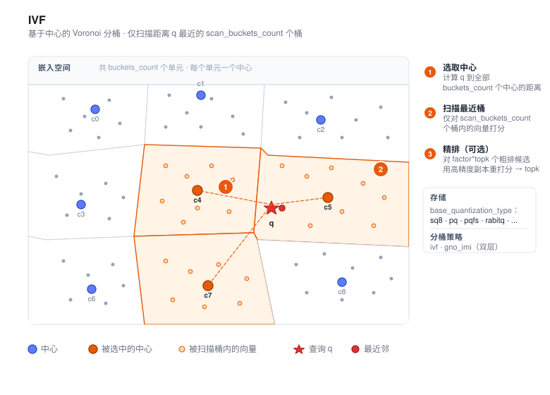
IVF（Inverted File，倒排索引）是 VSAG 的 分桶式 索引。它在构建时将语料聚类成若干桶，
查询时只扫描与查询距离最近的若干个桶的中心对应的倒排列表，把 O(N) 的线性扫描降为
O(N · scan_buckets_count / buckets_count)，并通过这两个参数在召回与延迟之间进行权衡。
与图索引相比，IVF 在召回上略有损失，但换来了更低的内存开销、更高的批量吞吐以及更简单的 切片方式——因此在语料非常大（数亿及以上）、内存紧张、或查询可天然并行化的场景中， IVF 通常是一个更合适的默认选择。
- 源码：
src/algorithm/ivf.{h,cpp}、src/algorithm/ivf_parameter.{h,cpp} - 示例：
examples/cpp/106_index_ivf.cpp
工作原理
- 聚类。 在数据集的采样上运行 k-means（或随机采样，
ivf_train_type: "random"） 得到buckets_count个中心（centroid）。 - 分配。 每条向量被写入距离最近的中心对应的倒排列表，以配置的粗量化
（
base_quantization_type）存储；可选地再保留一份高精度副本（use_reorder: true） 用于精排。 - 检索。 查询时先计算查询向量与所有中心的距离，选出最近的
scan_buckets_count个桶；然后只在这些桶内对向量打分。启用精排时，factor控制从粗排阶段多取多少候选 再送入精排器重打分。
此外还有一种 GNO-IMI 策略（partition_strategy_type: "gno_imi"），它把空间按两组
正交中心划分（first_order_buckets_count × second_order_buckets_count），在超大规模
语料上能得到更精细的分区。
快速开始
#include <vsag/vsag.h>
std::string params = R"({
"dtype": "float32",
"metric_type": "l2",
"dim": 128,
"index_param": {
"buckets_count": 256,
"base_quantization_type": "sq8",
"partition_strategy_type": "ivf",
"ivf_train_type": "kmeans"
}
})";
auto index = vsag::Factory::CreateIndex("ivf", params).value();
// 构建索引。
auto base = vsag::Dataset::Make();
base->NumElements(n)->Dim(128)->Ids(ids)->Float32Vectors(data)->Owner(false);
index->Build(base);
// 执行检索。
auto query = vsag::Dataset::Make();
query->NumElements(1)->Dim(128)->Float32Vectors(q)->Owner(false);
auto result = index->KnnSearch(
query, /*topk=*/10,
R"({"ivf": {"scan_buckets_count": 16}})").value();
构建参数
构建参数放在 index_param 下。完整列表请见 索引参数。
| 参数 | 类型 | 默认值 | 说明 |
|---|---|---|---|
partition_strategy_type | string | "ivf" | 分桶策略：ivf（单层）或 gno_imi（双层正交） |
buckets_count | int | 10 | 倒排列表数量（ivf 策略下生效） |
first_order_buckets_count | int | 10 | 第一级桶数（gno_imi 策略下生效） |
second_order_buckets_count | int | 10 | 第二级桶数（gno_imi 策略下生效） |
ivf_train_type | string | "kmeans" | 中心训练方式：kmeans 或 random |
base_quantization_type | string | "fp32" | fp32、fp16、bf16、sq8、sq4、sq8_uniform、sq4_uniform、pq、pqfs、rabitq —— 各量化器细节见量化章节 |
base_pq_dim | int | 1 | PQ 子空间数（pq / pqfs 时必填） |
use_reorder | bool | false | 是否保留高精度副本用于精排 |
precise_quantization_type | string | "fp32" | 精排量化类型（use_reorder: true 时使用） |
base_io_type | string | "memory_io" | 粗排向量的存储后端 |
precise_io_type | string | "block_memory_io" | 精排向量的存储后端（memory_io、block_memory_io、mmap_io、buffer_io、async_io、reader_io） |
precise_file_path | string | "" | 当精排 IO 为磁盘后端时的文件路径 |
buckets_count 的经验值一般为 sqrt(N) ~ 4 * sqrt(N)，其中 N 是语料规模。
检索参数
检索参数放在 ivf 子对象下：
| 参数 | 类型 | 默认值 | 说明 |
|---|---|---|---|
scan_buckets_count | int | —（必填） | 每次查询扫描的桶数，须 ≤ buckets_count |
factor | float | 2.0 | 启用精排时，粗排阶段会预取 factor * topk 个候选再重打分 |
enable_reorder | bool | true | 即使索引构建时启用了 reorder，也可以在单次请求里设为 false 跳过最终精排 |
parallelism | int | 1 | 单次查询内扫描桶时使用的线程数 |
timeout_ms | double | +∞ | 单次查询最长耗时（毫秒），超时会返回当前的部分结果 |
auto result = index->KnnSearch(
query, topk,
R"({"ivf": {"scan_buckets_count": 32, "factor": 2.0, "parallelism": 4}})").value();
auto fast_result = index->KnnSearch(
query, topk,
R"({"ivf": {"scan_buckets_count": 32, "factor": 2.0, "enable_reorder": false}})").value();
何时选择 IVF
- 超大规模语料（数亿及以上），工作集无法完全放入内存。
- 对每秒查询数（QPS）敏感、对单次延迟相对宽松的批量或高吞吐场景。
- 内存紧张的部署，可使用激进的量化方案（
sq8、sq4_uniform、pq、pqfs）配合use_reorder恢复召回。 - 对切片友好的部署：桶天然映射到分片或磁盘块。
对于延迟敏感、要求高召回的稠密 embedding 场景，请优先比较 HGraph。
相关文档
SINDI
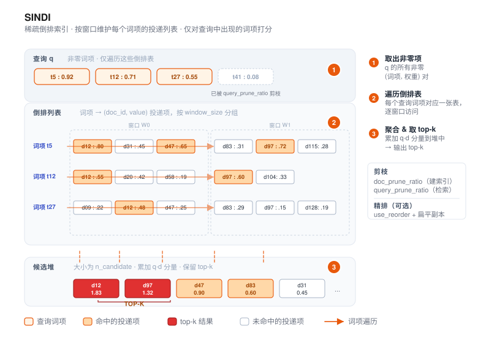
SINDI（Sparse INverted Dense Index）是 VSAG 面向 稀疏向量 的索引——
例如 BM25、SPLADE 以及其他学习稀疏（learned sparse）编码器产出的向量。与稠密索引
（HGraph、IVF）不同，SINDI 直接在“词项-权重”对上工作，是 VSAG 中唯一接受
dtype: "sparse" 的索引。
- 源码：
src/algorithm/sindi/ - 示例：
examples/cpp/109_index_sindi.cpp
工作原理
- 基于窗口的倒排表。 文档按固定窗口大小（
window_size）分组，每个窗口独立维护一套 倒排表——即“词项 →(doc_id, value)列表”的映射。 - 可选的剪枝与量化。 构建时可通过
doc_prune_ratio按文档粒度丢弃权重最低的词项； 通过use_quantization压缩词项权重以进一步节省内存。 - 打分。 检索时，SINDI 遍历查询向量的非零项，按窗口访问对应的倒排表，使用大小为
n_candidate的大顶堆聚合得分，最后取 top-k。启用use_reorder时，候选会在高精度 扁平副本上重打分。
返回的距离为 1 - inner_product，使结果与稠密索引一样按升序排序。
快速开始
#include <vsag/vsag.h>
std::string params = R"({
"dtype": "sparse",
"metric_type": "ip",
"dim": 1024,
"index_param": {
"term_id_limit": 30000,
"window_size": 50000,
"doc_prune_ratio": 0.0,
"use_quantization": false,
"use_reorder": false,
"remap_term_ids": false
}
})";
auto index = vsag::Factory::CreateIndex("sindi", params).value();
// 使用 SparseVector 构建数据集。
auto base = vsag::Dataset::Make();
base->NumElements(n)
->SparseVectors(sparse_vectors) // vsag::SparseVector*
->Ids(ids)
->Owner(false);
index->Build(base);
// 执行检索。
auto query = vsag::Dataset::Make();
query->NumElements(1)->SparseVectors(&query_vec)->Owner(false);
auto result = index->KnnSearch(
query, /*topk=*/10,
R"({"sindi": {"n_candidate": 100}})").value();
构建参数
构建参数放在 index_param 下。dtype 必须 为 "sparse"，metric_type 必须
为 "ip"。
| 参数 | 类型 | 默认值 | 说明 |
|---|---|---|---|
dim | int | —（必填） | 单条稀疏向量允许的最大非零项数量，不是 词表大小 |
term_id_limit | int | 1000000 | 词项 ID 的上界（应 ≥ 最大词项 ID + 1，最高 50 000 000） |
window_size | int | 50000 | 每个窗口容纳的文档数（取值范围 10 000 – 60 000） |
doc_prune_ratio | float | 0.0 | 构建阶段按文档丢弃权重最低词项的比例（0.0 – 0.9） |
use_quantization | bool | false | 是否量化词项权重以降低内存；开启后使用 8-bit 标量量化（SQ8） |
use_reorder | bool | false | 是否保留一份高精度扁平副本用于精排（内存约翻倍） |
remap_term_ids | bool | false | 是否在建索引前重映射词项 ID，适用于词项 ID 很稀疏或存在大量空洞的词表 |
avg_doc_term_length | int | 100 | 仅用于内存估算 |
dim与term_id_limit的区别。 对于稀疏向量{0:0.1, 2:0.5, 177:0.8}，dim为3（三个非零项），而term_id_limit至少应为178（最大词项 ID + 1）。term_id_limit要按词表大小估计，这是使用时最常见的坑。
检索参数
检索参数放在 sindi 子对象下：
| 参数 | 类型 | 默认值 | 说明 |
|---|---|---|---|
n_candidate | int | 0 | 候选堆大小。为 0 时自动取 SPARSE_AMPLIFICATION_FACTOR · topk（500 倍）；若显式设置，须满足 1 ≤ n_candidate ≤ SPARSE_AMPLIFICATION_FACTOR · topk |
query_prune_ratio | float | 0.0 | 查询时丢弃权重最低查询项的比例（0.0 – 0.9） |
term_prune_ratio | float | 0.0 | 查询时丢弃倒排表中低权项的比例（0.0 – 0.9） |
SINDI 会根据构建阶段的 doc_prune_ratio 与检索阶段的 query_prune_ratio
自动选择堆插入策略。按当前 0.1 阈值，当两个比例都 <= 0.1 时，SINDI 使用
基于距离数组的入堆路径；只要任一比例大于 0.1，就使用基于 term-list 的入堆路径。
旧版 use_term_lists_heap_insert 检索参数会被忽略；请改用剪枝比例控制该行为。
auto result = index->KnnSearch(
query, topk,
R"({"sindi": {"n_candidate": 200, "query_prune_ratio": 0.1}})").value();
何时选择 SINDI
- 使用 BM25、SPLADE、uniCOIL 等学习稀疏编码器的稀疏检索场景。
- 稠密 + 稀疏的混合检索管线：SINDI 负责稀疏一路，HGraph / IVF 负责稠密 embedding。
- 稀疏语料的内存受限部署：
use_quantization: true大致能把内存减半，略损召回；use_reorder: true以内存换召回。
SINDI 不支持 稠密向量，只支持内积相似度。范围检索与基于 ID 的过滤均已支持， 具体用法参见示例代码。
实践建议
- 中文数据集的稀疏向量，推荐使用 BGE-M3 编码；英文数据集更常见的默认选择是 SPLADE。
- BGE-M3 同时支持 sparse 和 dense 输出。当前 SINDI 负责稀疏一路，VSAG 未来计划 支持稀疏与稠密融合打分检索。
- 稀疏向量不能完全替代 BM25 全文检索。实践中，BM25 + 稀疏向量 + 稠密向量的三路 召回通常优于任意两路组合。
- 在索引层面，SINDI 也可以承载 BM25 风格打分：查询侧用逆文档频率作为词项权重， 文档侧用词频等特征计算出的词项权重作为向量值即可。
常用配置
- 扁平暴力搜索索引。倒排索引保留全部非零项（
doc_prune_ratio: 0.0），不保留正排索引 重排（use_reorder: false），不开启量化（use_quantization: false）。这是最直接的 高召回基线。 - 剪枝高精索引。构建时剪掉大部分低权重词项（
doc_prune_ratio: 0.4），保留正排索引 用于重排（use_reorder: true），并开启量化减少倒排索引内存 （use_quantization: true）。这是常见的精度与内存折中配置。 - 超大稀疏词表支持。对于词项 ID 在
uint32范围内非常稀疏的场景，例如基于哈希的 分词器、外部词表 ID，或存在大量空白区间的词表，建议设置remap_term_ids: true。 这样可以避免管理大量空倒排列表带来的内存浪费，也能降低触达term_id_limit上限的风险。
标记删除
SINDI 支持 RemoveMode::MARK_REMOVE。调用 Remove(ids)（默认模式）会为给定的 id
打上删除标记：它们不再出现在检索结果中，GetNumElements() 相应减少，
GetNumberRemoved() 返回累计删除数量。删除不存在或已删除的 id 不会有任何效果。
RemoveMode::FORCE_REMOVE 不支持，调用会返回错误。
被标记删除的文档在索引重建前仍占用内存，空间不会被物理回收。
相关文档
Pyramid
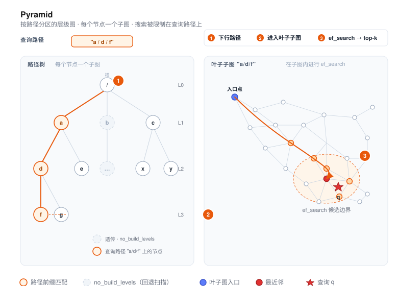
Pyramid 是 VSAG 的 层级路径分区 图索引。每条向量都附带一个路径字符串（例如
"a/d/f"），Pyramid 会按路径树为每个节点构建一个子图；查询时提供一个路径前缀，
检索即被限定在相应的子树内。
这种设计非常适合多租户部署、标签分区的物料库，或者任何“一个逻辑索引服务多个群体、 群体之间不允许结果交叉”的场景。
- 源码：
src/algorithm/pyramid.{h,cpp}、src/algorithm/pyramid_zparameters.{h,cpp} - 示例（单层级）：
examples/cpp/107_index_pyramid.cpp - 示例（多层级）：
examples/cpp/112_index_pyramid_multi_hierarchy.cpp
工作原理
- 路径树。 每条向量在 ID 之外还携带一个
path，分隔符为/（例如"tenant_a/lang_en/topic_news"）。Pyramid 会为构建期间出现过的每个路径前缀 维护一个子索引。 - 按层构建子图。 默认情况下每一层都会独立构建一张近邻图。可以用
no_build_levels跳过那些太小或太粗、不适合构图的层级——这些层级仍作为透传容器存在，但检索会退化为 线性扫描。 - 图的构建。 每个子图与 HGraph 采用同一套机制：
nsw插入或odescent，并通过graph_iter_turn、neighbor_sample_rate、alpha控制构图剪枝。底层向量按base_quantization_type存储；启用精排时另外保留一份高精度副本。 - 检索。 查询向量同样要附带路径。搜索会顺路径树向下走到最具体匹配查询路径的子图，
然后在该子图内执行图检索（
ef_search；中间层由subindex_ef_search控制）。
快速开始
#include <vsag/vsag.h>
std::string params = R"({
"dtype": "float32",
"metric_type": "l2",
"dim": 128,
"index_param": {
"base_quantization_type": "sq8",
"max_degree": 32,
"alpha": 1.2,
"graph_type": "odescent",
"graph_iter_turn": 15,
"neighbor_sample_rate": 0.2,
"no_build_levels": [0, 1],
"use_reorder": true,
"build_thread_count": 16
}
})";
auto index = vsag::Factory::CreateIndex("pyramid", params).value();
// 构建时为每条向量提供路径。
auto base = vsag::Dataset::Make();
base->NumElements(n)
->Dim(128)
->Ids(ids)
->Paths(paths) // std::string* 长度为 n，例如 "a/d/f"
->Float32Vectors(data)
->Owner(false);
index->Build(base);
// 按路径前缀执行检索。
std::string query_path = "a/d";
auto query = vsag::Dataset::Make();
query->NumElements(1)
->Dim(128)
->Float32Vectors(q)
->Paths(&query_path)
->Owner(false);
auto result = index->KnnSearch(
query, /*topk=*/10,
R"({"pyramid": {"ef_search": 100}})").value();
构建参数
构建参数放在 index_param 下。
| 参数 | 类型 | 默认值 | 说明 |
|---|---|---|---|
base_quantization_type | string | — | 底层量化类型（fp32、fp16、bf16、sq8、sq4、sq8_uniform、sq4_uniform、pq、pqfs、rabitq）。各量化器细节见量化章节。 |
max_degree | int | 64 | 子图内节点的最大出度 |
graph_type | string | "nsw" | nsw 或 odescent |
ef_construction | int | 400 | nsw 构图时的候选集大小 |
alpha | float | 1.2 | 构图剪枝系数 |
graph_iter_turn | int | — | ODescent 迭代轮数（graph_type: "odescent" 时生效） |
neighbor_sample_rate | float | — | ODescent 的邻居采样比率 |
no_build_levels | int[] | [] | 跳过构图的层级（从根节点开始的 0-based 下标） |
use_reorder | bool | false | 是否保留高精度副本用于精排 |
precise_quantization_type | string | "fp32" | 精排使用的量化类型 |
index_min_size | int | 0 | 子索引的最小规模；小于该值的分区会退化为线性扫描 |
support_duplicate | bool | false | 是否允许重复 ID |
build_thread_count | int | 1 | 构建阶段并发线程数 |
hierarchies | array | [] | 命名层级定义。每个元素可以是字符串（继承全部顶层参数）或对象（含 name 及可选覆盖参数：max_degree、ef_construction、alpha、no_build_levels、index_min_size）。设置后激活多层级模式，每个层级维护独立的路径树。 |
检索参数
检索参数放在 pyramid 子对象下：
| 参数 | 类型 | 默认值 | 说明 |
|---|---|---|---|
ef_search | int | 100 | 叶子层子图检索的候选集大小 |
subindex_ef_search | int | 50 | 沿路径向下遍历中间子图时的候选集大小 |
hierarchies | string[] | [] | 指定检索哪个层级。空数组表示使用默认（匿名）层级。 |
hierarchy_op | string | "single" | 多层级结果合并方式：single（检索单个层级）、union、intersection。注意： union 和 intersection 尚未实现——设置后 KnnSearch/RangeSearch 会返回错误。 |
auto result = index->KnnSearch(
query, topk,
R"({"pyramid": {"ef_search": 200, "subindex_ef_search": 80}})").value();
多层级支持 (Multi-Hierarchy)
一个 Pyramid 索引可以同时维护多棵独立的路径树，每棵树由名称标识（如
"site"、"category"）。所有层级共享向量 ID 和数据——只有路径不同。每个层级可以
选择性地覆盖图构建参数。
当同一组向量需要沿多个维度同时分区时，这个特性非常有用。例如，一个电商平台可能
需要按站点（site-a/lang-en）和按品类（electronics/phones）同时分区，
检索时可以独立选择任一层级。
构建配置
在 index_param 中添加 hierarchies 数组。每个元素可以是：
- 字符串（继承全部顶层参数）：
"site" - 对象（含
name和可选的参数覆盖）：{"name": "category", "max_degree": 64, "no_build_levels": [0]}
可按层级覆盖的参数：max_degree、ef_construction、alpha、no_build_levels、
index_min_size。
{
"dtype": "float32",
"metric_type": "l2",
"dim": 128,
"index_param": {
"base_quantization_type": "sq8",
"max_degree": 32,
"alpha": 1.2,
"graph_type": "odescent",
"graph_iter_turn": 15,
"neighbor_sample_rate": 0.2,
"no_build_levels": [0, 1],
"use_reorder": true,
"build_thread_count": 16,
"hierarchies": [
"site",
{"name": "category", "max_degree": 64, "no_build_levels": [0]}
]
}
}
命名层级的 Dataset API
使用重载方法 Paths(hierarchy_name, paths) 为每个层级设置路径。所有层级共享同一份
Ids() 和 Float32Vectors()：
auto base = vsag::Dataset::Make();
base->NumElements(n)
->Dim(128)
->Ids(ids)
->Float32Vectors(data)
->Paths("site", site_paths) // std::string* 长度为 n
->Paths("category", category_paths) // 第二个层级的独立路径
->Owner(false);
index->Build(base);
检索指定层级
通过检索参数中的 "hierarchies" 指定要检索的层级。查询 Dataset 也需要在对应的
层级名称上设置路径：
auto query = vsag::Dataset::Make();
query->NumElements(1)
->Dim(128)
->Float32Vectors(q)
->Paths("site", &query_path) // 指向 "site" 层级
->Owner(false);
auto result = index->KnnSearch(
query, /*topk=*/10,
R"({"pyramid": {"ef_search": 100, "hierarchies": ["site"]}})").value();
增量插入 (Add)
Add() 的用法与 Build() 一致——提供命名路径，索引会自动插入到所有匹配的层级：
auto new_data = vsag::Dataset::Make();
new_data->NumElements(count)
->Dim(128)
->Ids(new_ids)
->Float32Vectors(new_vectors)
->Paths("site", new_site_paths)
->Paths("category", new_cat_paths);
index->Add(new_data);
范围检索 (RangeSearch)
RangeSearch 同样支持通过检索参数选择层级：
auto result = index->RangeSearch(
query, /*radius=*/20.0f,
R"({"pyramid": {"ef_search": 100, "hierarchies": ["category"]}})").value();
序列化与反序列化
多层级索引的序列化和反序列化完全透明。序列化格式包含所有层级名称及其图结构：
// 序列化
auto binary_set = index->Serialize().value();
// 反序列化到新索引（必须使用相同的构建参数）
auto new_index = vsag::Factory::CreateIndex("pyramid", build_params).value();
new_index->Deserialize(binary_set);
何时选择 Pyramid
- 多租户服务：每个租户只能看到自己分区的结果，且希望避免为每个租户单独维护一份索引。
- 带有层级标签的物料库（语言 / 地域 / 品类），查询永远限定在某个已知的前缀下。
- 小分区非常多的负载：可以用
no_build_levels与index_min_size跳过那些小到不值得 构图的分区。
如果不需要按路径限定查询范围，HGraph 更简洁，性能通常也更高。
标记删除
Pyramid 支持 RemoveMode::MARK_REMOVE。调用 Remove(ids)（默认模式）会为给定的 id
打上删除标记：它们会从后续检索结果中排除，GetNumElements() 相应减少，
GetNumberRemoved() 返回累计删除数量。删除不存在或已删除的 id 不会有任何效果。
RemoveMode::FORCE_REMOVE 不支持，调用会返回错误。
被标记删除的向量在索引重建前仍占用内存，空间不会被物理回收。
相关文档
BruteForce
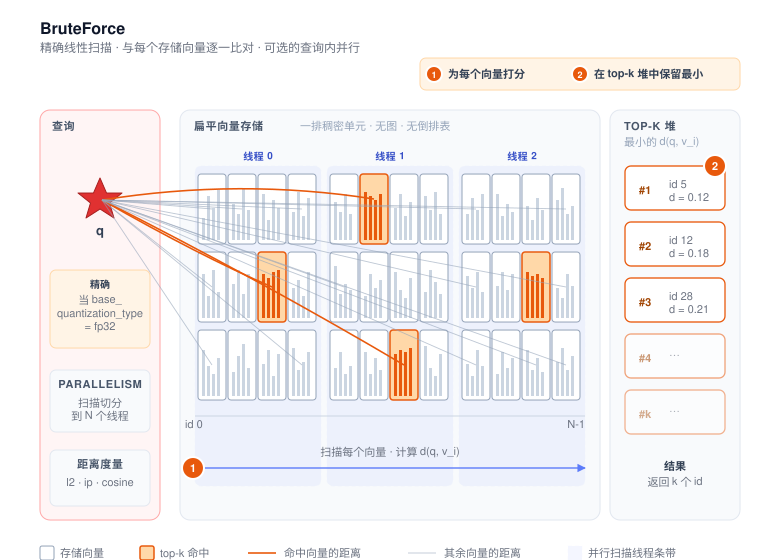
BruteForce 是 VSAG 提供的精确扁平索引。查询时直接对语料中的每条向量计算距离并返回真实的 top-k —— 没有图遍历、没有倒排表、不做近似。它的主要用途是为 HGraph、IVF 等近似索引提供 ground truth 基准，也适合用于小规模语料或对召回率有严格要求的生产场景。
- 源码：
src/algorithm/brute_force.{h,cpp} - 示例：
examples/cpp/105_index_brute_force.cpp
工作原理
- Build。 向量按照
base_quantization_type（默认fp32，即原始精度）编码后保存到一个 扁平数据单元中。对于不压缩的量化器，不需要训练；当使用 PQ/SQ_uniform 等需要训练的量化器 时，Build会先跑一遍训练。 - Add。 新向量直接追加到扁平存储中，没有再平衡或重建成本。
- Search。 针对每条查询，按照配置的
metric_type（l2、ip或cosine）逐条计算 距离，再用 top-k 小顶堆得到最近邻 id。距离计算使用 SIMD 内核，并支持单查询内并行： 通过parallelism搜索参数可以把同一条查询的扫描拆分到多个线程上（实现见BruteForce::SearchWithRequest，src/algorithm/brute_force.cpp）。
由于索引保留了每一条向量（除非选择了有损量化器），当 base_quantization_type = fp32 时
结果是完全精确的，因此 eval_performance 工具默认用 BruteForce 作为生成 ground truth 的
参考索引。
快速开始
#include <vsag/vsag.h>
std::string params = R"({
"dtype": "float32",
"metric_type": "l2",
"dim": 128
})";
auto index = vsag::Factory::CreateIndex("brute_force", params).value();
// 构建。
auto base = vsag::Dataset::Make();
base->NumElements(n)->Dim(128)->Ids(ids)->Float32Vectors(data)->Owner(false);
index->Build(base);
// 搜索 —— 没有索引特有的旋钮，传空 JSON 即可（也可以设置 `parallelism`）。
auto query = vsag::Dataset::Make();
query->NumElements(1)->Dim(128)->Float32Vectors(q)->Owner(false);
auto result = index->KnnSearch(query, /*topk=*/10, "{}").value();
完整可运行示例见
examples/cpp/105_index_brute_force.cpp。
构建参数
最简配置只需要三个顶层字段（dtype、metric_type、dim）。大多数场景下不需要
index_param，这也是
示例 105
所采用的形式。进阶用法可通过 index_param 启用量化或存储相关的开关：
| 参数 | 类型 | 默认值 | 说明 |
|---|---|---|---|
base_quantization_type | string | "fp32" | fp32、fp16、bf16、sq8、sq4、sq8_uniform、sq4_uniform、pq、pqfs、rabitq —— 各量化器细节见量化章节 |
use_attribute_filter | bool | false | 启用属性过滤（参见 属性过滤） |
关于
store_raw_vector的说明。store_raw_vector字段会被共用的InnerIndexParameter解析，但 BruteForce 不会根据它决定是否启用GetRawVectorByIds。在 BruteForce 上，原始向量读取能力仅在base_quantization_type = fp32、并且度量不是cosine或量化器配置了 持有向量范数（hold_molds）时开启。在 BruteForce 上设置store_raw_vector: true目前不会改变任何能力标志 —— 如果需要量化索引同时 支持GetRawVectorByIds，请使用 HGraph 或 IVF。
下面是一个使用 sq8 量化以节省内存、同时保持线性扫描语义的示例：
{
"dtype": "float32",
"metric_type": "ip",
"dim": 128,
"index_param": {
"base_quantization_type": "sq8"
}
}
当 base_quantization_type 选择了需要训练的量化器（sq8、sq4、sq8_uniform、sq4_uniform、
pq、pqfs、rabitq）时，Build 会先用传入的数据集训练量化器，此时召回率不再保证
100%。只有 fp32、fp16、bf16 不需要训练，能保持精确距离（仅受浮点数值精度影响）。
搜索参数
BruteForce 没有任何索引特有的搜索旋钮（不存在 ef、nprobe 之类的参数），但通用的
IndexSearchParameter 字段都生效：
| 参数 | 类型 | 默认值 | 说明 |
|---|---|---|---|
parallelism | int | 1 | 把单条查询的线性扫描拆分到索引内部线程池中的若干线程上。该参数同时作用于 KnnSearch 和 RangeSearch。该值越大，大语料下的单查询延迟越低，代价是占用更多 CPU 核。<= 0 的取值会被钳制到 1。 |
// 默认单线程扫描。
auto r1 = index->KnnSearch(query, topk, "{}").value();
// 用 8 个线程并行扫描同一条查询。
auto r2 = index->KnnSearch(query, topk, R"({"parallelism": 8})").value();
// RangeSearch 使用同一个 parallelism 参数。
auto r3 = index->RangeSearch(query, radius, R"({"parallelism": 8})").value();
范围查询语义参见 范围搜索。
索引能力
BruteForce 声明的能力标志如下（参见 BruteForce::InitFeatures，
src/algorithm/brute_force.cpp）：
| 能力 | 说明 |
|---|---|
SUPPORT_BUILD / SUPPORT_ADD_AFTER_BUILD / SUPPORT_ADD_CONCURRENT | 支持一次构建、增量追加，以及并发插入。 |
SUPPORT_ADD_FROM_EMPTY | 仅在非训练型量化器（fp32、fp16、bf16）下可用。 |
SUPPORT_KNN_SEARCH / SUPPORT_KNN_SEARCH_WITH_ID_FILTER / SUPPORT_SEARCH_CONCURRENT | 标准 top-k 查询、id 列表过滤，以及并发搜索。 |
SUPPORT_RANGE_SEARCH / SUPPORT_RANGE_SEARCH_WITH_ID_FILTER | 仅在非训练型量化器（fp32、fp16、bf16）下可用。 |
SUPPORT_DELETE_BY_ID / SUPPORT_DELETE_CONCURRENT | 支持按 id 删除，且并发安全。 |
SUPPORT_CAL_DISTANCE_BY_ID | 与已存储向量计算距离（仅非训练型量化器）。 |
SUPPORT_GET_RAW_VECTOR_BY_IDS | 仅当 base_quantization_type = fp32，且度量不是 cosine 或底层量化器持有向量范数（hold_molds）时才声明。量化的 BruteForce 索引不会声明该能力。 |
SUPPORT_CHECK_ID_EXIST / SUPPORT_CLONE / SUPPORT_ESTIMATE_MEMORY / SUPPORT_GET_MEMORY_USAGE | 标准的内省与生命周期接口。 |
SUPPORT_SERIALIZE_BINARY_SET / SUPPORT_SERIALIZE_FILE / SUPPORT_SERIALIZE_WRITE_FUNC | 完整的保存能力。 |
SUPPORT_DESERIALIZE_BINARY_SET / SUPPORT_DESERIALIZE_FILE / SUPPORT_DESERIALIZE_READER_SET | 完整的加载能力。（没有对应的 DESERIALIZE_WRITE_FUNC，读路径使用 READER_SET 形式。） |
NEED_TRAIN | 当 base_quantization_type 是 sq8、sq4、sq8_uniform、sq4_uniform、pq、pqfs、rabitq 之一时声明。 |
BruteForce 不支持 的能力包括：SUPPORT_UPDATE_VECTOR_CONCURRENT、
SUPPORT_UPDATE_ID_CONCURRENT、SUPPORT_EXPORT_MODEL。
适用场景
- 召回基准。 为近似索引计算 ground truth（
eval_performance工具就是这么做的）。 - 小规模语料。 几百到几十万条向量，全量扫描成本可接受，且无需做参数调优。
- 强召回需求。 完全不能容忍近似误差的业务。
- 小规模量化实验。 在同一条线性扫描流水线上对比不同
base_quantization_type的效果， 排除图结构 / 倒排表带来的干扰。
如果数据规模更大，请优先选择 HGraph（延迟敏感、高召回）或 IVF（吞吐量优先、内存友好）。
参考
量化
向量量化是 VSAG 中权衡内存与召回的核心手段。每种索引类型都通过一个
基础量化器（由 base_quantization_type 配置）存储向量，并可以额外保留
一个精确量化器用于重排（precise_quantization_type + use_reorder: true）。本章介绍每一种受支持的量化器：它做什么、接受哪些 JSON 参数、是否
需要训练、支持哪些度量、以及何时选用它。
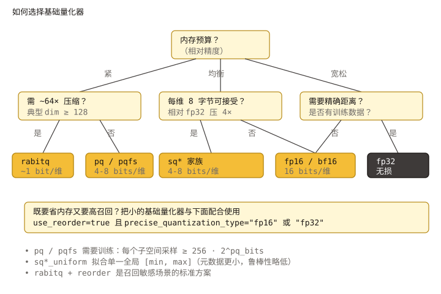
存储与搜索流水线
+---------------------+
原始向量 ----->| 可选变换 | (TQ 链：pca / rom / fht / mrle)
+----------+----------+
|
v
+---------------------+
| 基础量化器 | fp32 / fp16 / bf16 /
| | sq8 / sq4 / sq8_uniform /
| | sq4_uniform / pq / pqfs /
| | rabitq
+----------+----------+
|
v
+-------------------+
| 索引存储 | (HGraph / IVF / Pyramid /
| | BruteForce / SINDI)
+---------+---------+
|
v
图 / 倒排链路游走
|
+---------------+-----------------+
| |
use_reorder: false use_reorder: true
| |
v v
top-K 结果 +---------------------+
| 精确量化器 | 重排
| (默认 fp32； |
| fp16/bf16/sq8 可) |
+----------+----------+
|
v
top-K 结果
use_reorder 与 precise_quantization_type 并非某一具体量化器专属——只要
索引支持重排，它们就生效（见
HGraph、IVF、
Pyramid）。
支持的量化器一览
src/datacell/flatten_interface.cpp 的工厂会根据 JSON 中的 type
字段分派到具体量化器。
base_quantization_type | 每维位数（约） | 需要训练 | 是否无损 | 典型场景 |
|---|---|---|---|---|
fp32 | 32 | 否 | 是 | 参考基线 / 精确重排存储 |
fp16 | 16 | 否 | 近似无损 | 半精度存储；高维 float 向量的良好默认 |
bf16 | 16 | 否 | 近似无损 | 与 fp16 同样大小，动态范围更宽 |
sq8 | 8 | 是 | 否 | 通用的省内存基线 |
sq4 | 4 | 是 | 否 | 激进压缩，不重排时召回会下降 |
sq8_uniform | 8 | 是 | 否 | 全局 min/max，SIMD 友好的 SQ8 |
sq4_uniform | 4 | 是 | 否 | SIMD 友好的 SQ4；支持 sq4_uniform_trunc_rate |
pq | ~pq_bits × pq_dim / dim | 是 | 否 | 基于码本，非常紧凑 |
pqfs | 4 × pq_dim / dim | 是 | 否 | PQ FastScan——SIMD 加速版 PQ |
rabitq | 1 或 HGraph x+y | 是 | 否 | 1 比特 / 低比特 split 二值量化，最强压缩 |
tq | 取决于链路 | 取决于末端量化器 | 否 | 量化变换：在另一个量化器之前串接旋转 / PCA |
int8 与 sparse 不作为通用的 base_quantization_type 暴露：
int8在使用dtype: "int8"时被自动选用，并非一种压缩模式。sparse为 SINDI 的倒排链表服务，密集索引不可 直接选择。
训练需求
上表中标记为是的量化器实现了 NEED_TRAIN 标志，必须先调用 Build
（在输入向量上内部完成训练）或显式 Train 之后再 Add。完整生命周期见
索引构建与训练。
对 HGraph 而言，训练数据就是传给 Build 的基础向量；对 IVF 而言，先训练
聚类中心，再把残差喂给所配置的基础量化器。
度量兼容性
本章所列量化器全部支持三种稠密度量（l2 / ip / cosine）。对 cosine，
索引会在量化前对向量做归一化，因此底层量化器看不到原始模长。一些实践
要点：
pq/pqfs在每个子空间上做距离查表；当pq_dim非常小（≤ 4）， 在ip/cosine上比l2更容易受各向异性影响。rabitq在输入向量去相关的情况下效果最好——要么开启rabitq_use_fht/rabitq_pca_dim，要么用tq链路如"pca, rom, rabitq"包一层。
量化器选择
一份实用的决策树：
- 需要精确距离或精确重排存储？ 用
fp32。 - 只想内存减半且召回基本无损？ 用
fp16（若数据动态范围大，例如未 归一化的嵌入，则用bf16）。 - 想要约 4× 的内存节省并愿意启用重排？ 用
sq8（在l2/ip上 想要更高 SIMD 吞吐可用sq8_uniform）。 - 内存紧张、可在重排前承受更大召回损失？ 用
sq4_uniform。 - 高维向量，希望基于码本做强压缩？ 用
pq，平台支持 SIMD 路径时用pqfs。 - 追求最强压缩（1 比特）并能承担重排代价？ 用
rabitq，最好搭配rabitq_use_fht: true或tq链路。
对上述任何一种有损量化器，将 use_reorder: true 配合
precise_quantization_type: "fp32" 是恢复召回的标准做法，代价是额外内存；
具体行为参考 HGraph 参数表。
量化在何处暴露
并非每种索引都将所有参数都暴露为外部 key。当前情况：
- HGraph 暴露最完整的集合：
base_quantization_type、precise_quantization_type、use_reorder、base_pq_dim、rabitq_pca_dim、rabitq_bits_per_dim_query、rabitq_bits_per_dim_base、rabitq_bits_per_dim_precise、rabitq_error_rate、rabitq_use_fht、sq4_uniform_trunc_rate、tq_chain（见src/algorithm/hgraph.cpp）。 - IVF、Pyramid、BruteForce 暴露
base_quantization_type与通用的重排相关 key；部分可调项（如tq_chain）目前在内部接好但未作 为外部 key 暴露。
每种索引的完整参数列表见对应索引页。
本章内容
- FP32（基线）
- 半精度浮点（FP16 / BF16）
- 标量量化（SQ4 / SQ8）
- Uniform 标量量化（SQ4 / SQ8 Uniform）
- 乘积量化（PQ）
- PQ FastScan
- RaBitQ
- RaBitQ x+y Split
- 量化变换（TQ）
FP32（基线）
fp32 把每个坐标按 32 位 IEEE-754 浮点存储——与输入向量布局一致。它是
VSAG 中唯一完全无损的选项，作为所有其他量化器对比的参考基线。
实现：
src/quantization/fp32_quantizer.cpp，参数文件fp32_quantizer_parameter.cpp。
何时使用
- 重排 / 精确存储。 当
use_reorder: true时，precise_quantization_type: "fp32"是默认的精确存储；图上游走使用便宜 的基础量化器，对 top-K 候选再用 fp32 精确重打分。 - 参考 / 基准真值。 用
base_quantization_type: "fp32"构建索引能拿 到该索引类型可达的最高召回，是其他量化器对比的标准基线 （docs/docs/en/src/resources/eval.md）。 - 小规模数据集，内存不是瓶颈时。
- BruteForce 原始向量取回。 仅当
base_quantization_type为fp32且度量允许时，SUPPORT_GET_RAW_VECTOR_BY_IDS才会被广播 （src/index/brute_force.cpp）。
内存代价
仅码本身的开销为每向量 4 × dim 字节。当 fp32 作为某个基础量化器之上的
精确存储时，每向量代价为 base 码 + 4 × dim。
参数
fp32 没有量化器专属的 JSON 参数。
{
"dtype": "float32",
"metric_type": "l2",
"dim": 128,
"index_param": {
"base_quantization_type": "fp32",
"max_degree": 32,
"ef_construction": 300
}
}
训练
不需要。fp32 不设置 NEED_TRAIN。
度量兼容性
l2、ip、cosine——全部支持，无特殊处理。
相关页面
半精度浮点（FP16 / BF16）
fp16 与 bf16 把每个坐标用 16 位而非 32 位存储，把码内存减半且近似
无损。它们没有量化器专属的 JSON 参数；二者的唯一差异是浮点格式自身的
位布局。
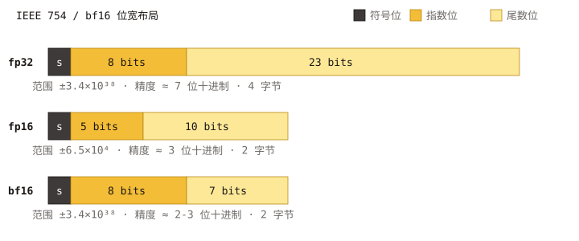
实现：
src/quantization/scalar_quantization/half_precision_quantizer.cpp， 类型特征在half_precision_traits.h。 可运行示例：examples/cpp/321_index_fp16_hgraph.cpp。
FP16 与 BF16 一览
| 格式 | 符号位 | 指数位 | 尾数位 | 有效范围 | 精度 |
|---|---|---|---|---|---|
fp16 | 1 | 5 | 10 | ~±6.55e4 | 约 3 位十进制 |
bf16 | 1 | 8 | 7 | 与 fp32 相同（~±3.4e38） | 约 2 位十进制 |
实践含义：
fp16保留更多尾数位——对取值大致在[-1, 1]的归一化嵌入精度更 好。是 cosine 归一化向量的标准选择。bf16保留与fp32一致的指数范围——对原始、未归一化的特征（如 加权和、累加器式嵌入）更安全。相对fp16，在接近零的取值上损失一些 精度。
不确定时：归一化嵌入选 fp16，未归一化或范围较宽的数据选 bf16。
何时使用
- 在
fp32基线之上作为“即插即用“的内存优化。在标准基准（SIFT、GIST、 Glove、句向量）上召回损失通常低于 1%。 - 作为精确重排存储，体积仅为 fp32 的一半：
precise_quantization_type: "fp16"或"bf16"配合use_reorder: true。 - 高维浮点向量，32 位存储成为瓶颈时。
内存代价
仅码本身每向量 2 × dim 字节。
参数
fp16 与 bf16 均没有量化器专属 JSON 参数。
{
"dtype": "float32",
"metric_type": "l2",
"dim": 768,
"index_param": {
"base_quantization_type": "fp16",
"max_degree": 32,
"ef_construction": 300
}
}
将 "fp16" 替换为 "bf16" 即可切换格式。输入 dtype 仍是 "float32"：
量化器会在运行时转换。
训练
不需要。fp16 与 bf16 均不设置 NEED_TRAIN。
度量兼容性
l2、ip、cosine——全部支持。cosine 通过先归一化输入再以 16 位精度
存储实现。
何时不要使用
- 当你还需要一个内存更激进的基础量化器（如
sq8或pq）——它们已经 把存储压到远低于 2 字节/维。 - 当你需要精确距离（用
fp32）。
相关页面
标量量化（SQ4 / SQ8）
sq8 与 sq4 是逐维标量量化器：每个坐标按训练得到的逐维 [min, max]
范围，从 float32 映射到 8 位（sq8）或 4 位（sq4）整数。它们共享同
一份实现，仅以位宽参数化，位于
src/quantization/scalar_quantization/scalar_quantizer.cpp 与
scalar_quantizer_parameter.h。
如果想要 SIMD 更友好、使用全局 [min, max] 的变种，见
Uniform 标量量化。
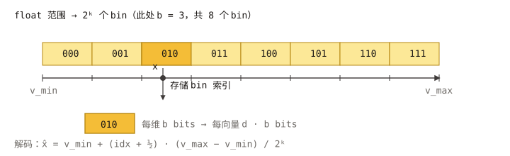
SQ4 与 SQ8 一览
| 类型 | 每维位数 | 相对 fp32 内存 | 典型精度 | 备注 |
|---|---|---|---|---|
sq8 | 8 | ~1/4 | 轻微召回下降 | 通用省内存基线 |
sq4 | 4 | ~1/8 | 不重排时下降明显 | 激进压缩；配合 use_reorder: true |
训练得到的是逐维 min/max，重尾分布的坐标可能浪费码位。如果数据各
向异性强，可考虑改用 Uniform 标量量化 或先旋转的
量化变换 链路，例如
"rom, sq8_uniform"。
内存代价（仅码）
sq8：每向量dim字节。sq4：每向量ceil(dim / 2)字节。
此外还有一份小型逐维范围表（8 × dim 字节，所有向量摊销）。
参数
目前 sq8 与 sq4 均无量化器专属 JSON 参数
（scalar_quantizer_parameter.h:36-58）。位宽仅由 type 字符串决定。
{
"dtype": "float32",
"metric_type": "l2",
"dim": 128,
"index_param": {
"base_quantization_type": "sq8",
"max_degree": 32,
"ef_construction": 300,
"use_reorder": true,
"precise_quantization_type": "fp32"
}
}
将 "sq8" 替换为 "sq4" 即得到 4 位码。
训练
设置了 NEED_TRAIN。训练从输入向量样本中收集逐维 min / max。
Build(base) 会内部完成训练；对需要显式 Train 的索引（如部分 IVF 流程），
请在 Add 之前调用。详见
索引构建与训练。
度量兼容性
l2、ip、cosine——全部支持。距离通过把整数码解码回逐维缩放浮点后
计算。
sq8 与 sq4 如何选
sq8：图索引（HGraph、Pyramid）追求约 4× 内存压缩时的默认选择。 召回损失通常很小，use_reorder经常可选，但搭配precise_quantization_type: "fp32"启用重排是最稳妥的配置。sq4：内存紧张且能承担精确重排存储时选用。几乎总是要配合use_reorder: true。- 如果数据大致维度同质，改选
sq*_uniform；uniform 变种具有更高的 SIMD 吞吐。 - 对重尾 / 各向异性数据，更推荐前置旋转的 量化变换 链路。
相关页面
标量量化 Uniform（Scalar Quantization Uniform：SQ4 / SQ8 Uniform）
sq8_uniform 与 sq4_uniform 与 sq8 / sq4 类似，是标量量化
器，但它们学习的是全局唯一的 [min, max] 范围，对所有维度都使用同一
份缩放参数。这一权衡——逐维自适应能力略弱，但解码路径更简单——换来了
显著更快的 SIMD 距离计算（l2 与 ip），并保持更紧凑的码布局。
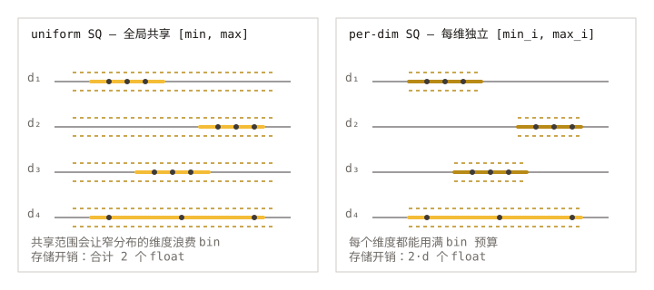
实现：
src/quantization/scalar_quantization/sq8_uniform_quantizer.cpp、src/quantization/scalar_quantization/sq4_uniform_quantizer.cpp。
为什么快：距离计算停留在整数域
这是在条件允许时优先选用 sq*_uniform 而非 sq* 的核心原因。由于每个
维度共享同一对 (min, max)，仿射解码
x = min + code · (max - min) / (2^b - 1) 对所有坐标都使用相同的
scale 与 offset。这在热路径上带来三点收益：
- query 用同一份全局
(min, max)只编码一次，存入 uint8（或打包的 半字节）缓冲，见ProcessQueryImpl（src/quantization/scalar_quantization/sq8_uniform_quantizer.cpp:179）。 - base 向量的 code 从不解码回 fp32。kernel
SQ8UniformComputeCodesIP(uint8_t* q, uint8_t* x, dim)/SQ4UniformComputeCodesIP(...)把两个操作数都按原始整数 code 读入， 在 uint8 / 打包半字节通道上直接用 AVX-512 / AMX（ARM 上为 NEON）做 点积，一次处理一个 cache line。内层循环里没有任何逐元素的 fp 反量化。 - 共享的 scale 与 offset 在整数累加完成之后对每对向量只补偿一次，
即可还原 fp 距离。某些度量需要的额外项（每向量的 norm 或 sum）也在
循环外加上，参见
sq8_uniform_quantizer.cpp:200的 trailing metadata 说明以及SQ8UniformComputeCodesIPBatch批量 kernel。
而在逐维的 sq* 量化器里，每个坐标都有自己的 (min_i, max_i)，kernel
要么在循环内乘以逐维 scale 表，要么先把至少一边的操作数解码回 fp。
省掉这一步，就是 uniform 变种在同等召回下显著更快的根本原因。
何时使用
- HGraph / IVF / Pyramid 的热路径。 当瓶颈在基础量化器距离计算时，
在相近召回下，
sq8_uniform/sq4_uniform几乎总是比对应的非 uniform 变种更快。 - 维度间取值范围相近的数据。 归一化嵌入（cosine），或已通过
量化变换 链路（如
"rom, sq8_uniform"或"fht, sq8_uniform"）旋转过的向量，都是理想 输入。 - 作为
tq链路的末端量化器。 最常见的链路是"pca, rom, sq8_uniform"，参考示例 501。
SQ4 uniform 与 SQ8 uniform 对比
| 类型 | 每维位数 | 相对 fp32 内存 | 典型精度 |
|---|---|---|---|
sq8_uniform | 8 | ~1/4 | 轻微召回下降 |
sq4_uniform | 4 | ~1/8 | 需重排以保持高召回 |
参数
| Key | 类型 | 默认 | 适用 | 含义 |
|---|---|---|---|---|
sq4_uniform_trunc_rate | float | 0.05 | 仅 sq4_uniform | 对离群值的对称截断比例（src/quantization/scalar_quantization/sq4_uniform_quantizer_parameter.h:39）。值越大，越多极端坐标被截断，从而减少主体数据的范围浪费，代价是尾部被裁掉。 |
sq8_uniform 没有量化器专属的 JSON 参数。
在 HGraph 上，sq4_uniform_trunc_rate 作为顶层 key 暴露，并被映射到
嵌套的量化参数中（src/algorithm/hgraph.cpp:409-416）。
{
"dtype": "float32",
"metric_type": "l2",
"dim": 128,
"index_param": {
"base_quantization_type": "sq4_uniform",
"sq4_uniform_trunc_rate": 0.05,
"max_degree": 32,
"ef_construction": 300,
"use_reorder": true,
"precise_quantization_type": "fp32"
}
}
若需 8 位变种，把 "base_quantization_type" 设为 "sq8_uniform" 并去掉
trunc_rate key 即可。
训练
设置了 NEED_TRAIN。训练在所有维度上估计单一的 [min, max]
（sq4_uniform 时可附加截断）。Build 会内部完成训练。
度量兼容性
l2、ip、cosine——全部支持。cosine 会先归一化再量化，这也使得 uniform
缩放在该度量下接近最优。
uniform 与非 uniform 之间如何选
- 数据已归一化（
cosine或预归一化l2）→ 选 uniform。 - 数据各维度取值范围差异极大（如混合特征块）→ 先尝试非 uniform 的
sq*，或在旋转变换后再用 uniform（"rom, sq*_uniform"）。 - 吞吐比最后一点点召回更重要 → uniform。
相关页面
乘积量化（PQ）
乘积量化把一个向量切成 pq_dim 个等长的子向量，每个子向量独立地按
含 2^pq_bits 个中心的小型码本进行量化。最终存储的码为每向量
pq_dim × pq_bits 比特——比 fp32 小数量级。查询时的距离计算通过每查询
预先计算的查找表（LUT）完成。
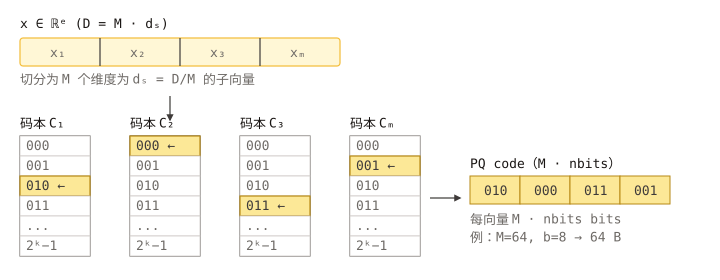
实现：
src/quantization/product_quantization/product_quantizer.cpp， 参数文件product_quantizer_parameter.cpp。
何时使用
- 高维浮点向量（≥ 256 维），且
sq8仍嫌过大。 - 内存紧张、精度可接受的工作负载，需要相对 fp32 约 16× 压缩。
- 配合
use_reorder: true与一个小型fp16/fp32精确存储，PQ 是大规模 场景下“压缩图索引“的标准配方。
如需在 pq_bits = 4 时获得更高的 SIMD 吞吐，见 PQ FastScan。
内存代价（仅码）
每向量 ceil(pq_dim × pq_bits / 8) 字节，外加一份只存一次的小型码本
（pq_dim × 2^pq_bits × subspace_dim × 4 字节）。以典型配置
（pq_dim = 32、pq_bits = 8、dim = 128）为例：
- 码大小 =
32 × 8 / 8 = 32字节/向量（对比 fp32 的128 × 4 = 512→ 小 16×）。
参数
| Key | 类型 | 默认 | 含义 |
|---|---|---|---|
pq_dim | int | 1 | 子向量数量。必须整除 dim。取值越大，量化越细，但码本数量与码大小也会变大（product_quantizer_parameter.h:38）。 |
pq_bits | int | 8 | 每个子向量的位数（1–8）。取 8 时每个子向量一字节。8 最稳；4 位 SIMD 变种见 PQ FastScan。 |
在 HGraph 上，这些以顶层 key base_pq_dim 与 pq_bits 暴露
（src/algorithm/hgraph.cpp:465-472）。
{
"dtype": "float32",
"metric_type": "l2",
"dim": 128,
"index_param": {
"base_quantization_type": "pq",
"base_pq_dim": 32,
"max_degree": 32,
"ef_construction": 300,
"use_reorder": true,
"precise_quantization_type": "fp16"
}
}
训练
设置了 NEED_TRAIN。训练在每个子空间上跑 k-means 来学习 2^pq_bits 个
中心；这通常是所有内建量化器中最贵的训练步骤。每个子空间使用至少
256 × 2^pq_bits 个训练样本，码本会更稳定；Build(base) 会自动从输入
采样。
度量兼容性
l2、ip、cosine——全部支持。查询时距离通过每子空间的 LUT 计算：
l2 使用查询子向量与每个中心的 L2 平方；ip 使用点积。cosine 在预
归一化向量上等价于 ip。
实践要点
pq_dim应整除dim。常用比例是dim/4或dim/8。- 极小的
pq_dim（如dim/16）能得到非常紧凑的码，但召回会迅速下降； 务必配合重排。 - 对各向异性数据，在 PQ 前接一层旋转变换能显著提升召回：用
量化变换 链路如
"rom, pq"。
相关页面
PQ FastScan
pqfs 是 乘积量化 的一个 SIMD 加速变种：将 pq_bits 固定为 4，
并采用专为 AVX-2 / AVX-512 “FastScan” 查表内核设计的内存布局。代价是仅
支持 4 位，但能带来显著更高的距离计算吞吐。
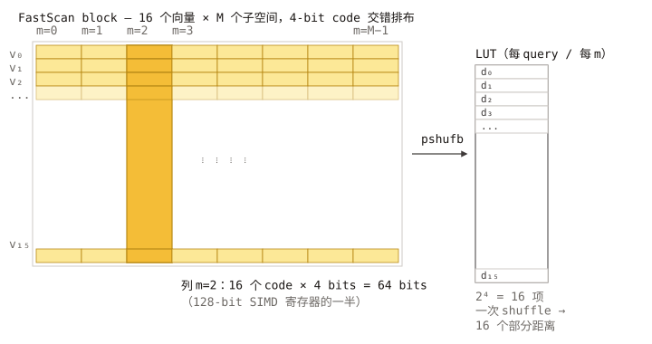
实现：
src/quantization/product_quantization/pq_fastscan_quantizer.cpp， 参数文件pq_fastscan_quantizer_parameter.cpp。
何时使用
- 平台有 AVX-2（最好还有 AVX-512）；FastScan 内核正是选用
pqfs而非pq的主要理由。 - 关注的不只是内存，还有搜索吞吐。
- 4 位子空间码本（每子向量 16 个中心）能满足召回目标——通常配合重排即 可。
如果平台不具备所需的 SIMD 宽度，请回退到普通 pq。
内存代价（仅码）
每向量 ceil(pq_dim / 2) = (pq_dim + 1) / 2 字节——奇数和偶数 pq_dim
都支持（src/quantization/product_quantization/pq_fastscan_quantizer.cpp:41）。
码本：pq_dim × 16 × subspace_dim × 4 字节——因为每子空间只有 16 个中心，
比 8 位 pq 的码本小很多。
参数
| Key | 类型 | 默认 | 含义 |
|---|---|---|---|
pq_dim | int | 1 | 子向量数量。必须整除 dim。pq_bits 在内部固定为 4 且不可配（pq_fastscan_quantizer_parameter.cpp:28-33）。 |
在 HGraph 上以 base_pq_dim 暴露（src/algorithm/hgraph.cpp:465-472）。
{
"dtype": "float32",
"metric_type": "l2",
"dim": 128,
"index_param": {
"base_quantization_type": "pqfs",
"base_pq_dim": 32,
"max_degree": 32,
"ef_construction": 300,
"use_reorder": true,
"precise_quantization_type": "fp16"
}
}
训练
设置了 NEED_TRAIN。在每子空间训练 16 中心码本；比 pq 的 256 中心训练
更便宜。
度量兼容性
l2、ip、cosine——覆盖与 pq 一致。LUT 布局因度量而异，但由量化器
透明处理。
实践要点
pq_dim最好是内核预期 SIMD 批宽的倍数（实现在 AVX-512 上内部使用 32）。拿不准时，选pq_dim ∈ {32, 64, 96, 128}。- 相对
pq的优势是相同召回下的吞吐，而非内存（4 位码本身就小，但pq设pq_bits = 4同样能匹配大小）。 - 想最大化召回恢复，配合
use_reorder: true与fp16或fp32精确 存储。
相关页面
RaBitQ
rabitq 是 VSAG 的二值 / 低比特量化器。默认模式下每个坐标用 1 比特
编码，给出所有内建量化器中最高的压缩率。在 HGraph 上，x+y split 模式把
底库码拆成 x 个过滤 bit 和 y 个 supplement bit：图遍历只使用 filter code，
重排 / full-distance 阶段只额外读取 supplement bits。
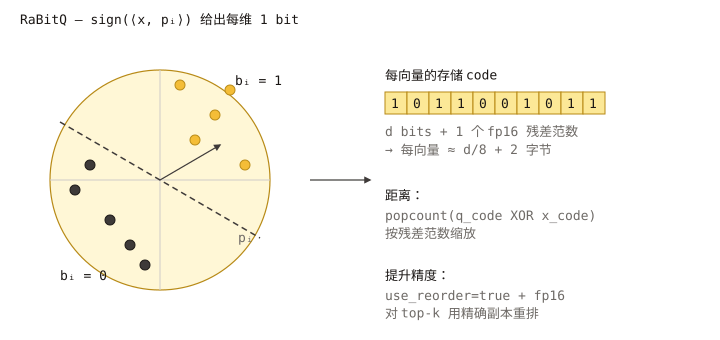
实现：
src/quantization/rabitq_quantization/rabitq_quantizer.cpp， 参数文件rabitq_quantizer_parameter.cpp。 HGraph split 的完整存储布局、lower bound 公式和 IO 模式见 RaBitQ x+y Split。
何时使用
- 最强压缩。 1 比特码是稠密向量可能的最小存储。
- 高维嵌入——旋转 + 二值化后仍能保留足够近邻搜索所需的几何信息。
- 配合精确重排存储（
fp16/fp32）——标准做法就是 “RaBitQ + 重排”， 因为 1 比特距离本身噪声较大。
为获得最佳精度，请同时启用 rabitq_use_fht: true，或者用
量化变换 链路如
"pca, rom, rabitq" 包一层。
内存代价（仅码）
rabitq_bits_per_dim_base = 1：每向量ceil(dim / 8)字节。dim = 768时为 96 字节（对比 fp32 的 3072 → 小 32×）。- HGraph 上
rabitq_bits_per_dim_base = x且rabitq_bits_per_dim_precise = y：split 模式约存储(x + y) * dim / 8字节的 RaBitQ code。例如3+5约为每向量dim字节。
参数
| Key | 类型 | 默认 | 含义 |
|---|---|---|---|
pca_dim | int | 0（= 输入维度） | RaBitQ 内部可选的 PCA 预处理维度。0 表示不做 PCA 降维（rabitq_quantizer_parameter.cpp:30-32）。 |
rabitq_bits_per_dim_query | int | 32 | 搜索时查询的每维位数。允许值：4 或 32（rabitq_quantizer_parameter.cpp:38-43）。 |
rabitq_bits_per_dim_base | int | 1 | standard RaBitQ 下表示底库码每维位数；HGraph x+y split 下，这个外部 key 表示 x，即图遍历过滤阶段使用的 filter bits。范围 [1, 8]。 |
rabitq_bits_per_dim_precise | int | 未设置 | HGraph-only split 模式 key。和 base_quantization_type: "rabitq"、precise_quantization_type: "rabitq" 一起出现时表示 y，即重排 / full-distance 阶段读取的 supplement bits。要求 x + y <= 8。 |
rabitq_error_rate | float | 1.9 | HGraph split 搜索的默认 lower-bound 误差倍率；必须为有限正数，也可以在 hgraph 搜索参数中按次覆盖。 |
use_fht | bool | false | true 时在二值化前应用快速 Hadamard 变换旋转。以 O(dim log dim) 的廉价代价提升各向异性数据上的精度（rabitq_quantizer_parameter.cpp:76-78）。 |
在 HGraph 上，这些以顶层 key 暴露：rabitq_pca_dim、
rabitq_bits_per_dim_query、rabitq_bits_per_dim_base、
rabitq_bits_per_dim_precise、rabitq_error_rate、
rabitq_use_fht。其中 rabitq_use_fht 是 HGraph
对量化器内部 use_fht key 的别名，由索引层重写（src/algorithm/hgraph.cpp:473-480，
名称定义见 src/constants.cpp:142-148）。Pyramid 同样暴露相应的 rabitq_* key
（src/algorithm/pyramid.cpp:698-699）。
{
"dtype": "float32",
"metric_type": "l2",
"dim": 768,
"index_param": {
"base_quantization_type": "rabitq",
"rabitq_use_fht": true,
"rabitq_pca_dim": 0,
"rabitq_bits_per_dim_base": 1,
"rabitq_bits_per_dim_query": 32,
"max_degree": 32,
"ef_construction": 300,
"use_reorder": true,
"precise_quantization_type": "fp32"
}
}
切换到高精度的 x+y split 模式：把 base 和 precise 量化都设置为 RaBitQ，
并提供 rabitq_bits_per_dim_precise。HGraph 会自动选择 split datacell。
下面例子中，图遍历使用 x = 3 个 filter bits，重排只读取 y = 5 个
supplement bits：
{
"base_quantization_type": "rabitq",
"precise_quantization_type": "rabitq",
"rabitq_bits_per_dim_base": 3,
"rabitq_bits_per_dim_precise": 5,
"rabitq_use_fht": true
}
训练
设置了 NEED_TRAIN。训练学习让 1 比特编码均衡的旋转与逐维统计。可选的
FHT 旋转是固定的（无需学习），因此不增加训练代价；PCA 预处理（`pca_dim
0`）会训练一个投影矩阵。
度量兼容性
l2、ip、cosine——全部支持。二值距离内核是对 XOR 后的码字做 popcount；
对 ip / cosine，实现还会追踪一份残差范数，使内积估计无偏。
实践要点
- 始终启用重排，除非你已经验证 1 比特召回在你的数据上可接受。
use_reorder: true+precise_quantization_type: "fp32"是稳妥默认。 - 先旋转。 对未归一化数据，设
rabitq_use_fht: true，或在tq链路 中包含rom/fht。 - 精度优先时用 split 模式。 HGraph
x+ysplit 保留xbit 快速 过滤路径，再添加y个 supplement bits 用于重排；相对纯 1 比特，使用 更多总 bit 时召回明显更高。
相关页面
RaBitQ x+y Split
RaBitQ x+y split 是 HGraph 面向低比特底库码的存储与搜索模式。每条向量拆成 两条记录：
- 图遍历和 lower-bound 过滤只读取
x个 filter bits。 - 只有进入重排的候选才读取
y个 supplement bits。 - 最终重排距离使用完整的
x+ybits。
这种布局缩小了图遍历的热数据，同时保留更高精度的 RaBitQ 距离用于最终排序。 它也支持把 filter record 留在内存中，把访问频率更低的 supplement record 放到磁盘。
启用 split 模式
当 base 和 precise 的量化类型都为 rabitq，并且配置了
rabitq_bits_per_dim_precise 时，HGraph 自动选择 split 模式：
{
"dtype": "float32",
"metric_type": "l2",
"dim": 960,
"index_param": {
"base_quantization_type": "rabitq",
"precise_quantization_type": "rabitq",
"use_reorder": true,
"rabitq_bits_per_dim_query": 32,
"rabitq_bits_per_dim_base": 3,
"rabitq_bits_per_dim_precise": 5,
"rabitq_error_rate": 1.9,
"max_degree": 64,
"ef_construction": 400
}
}
相关参数如下：
| 参数 | 含义 |
|---|---|
base_quantization_type | 必须为 "rabitq"。 |
precise_quantization_type | split 模式下同样必须为 "rabitq"。 |
rabitq_bits_per_dim_base | x，图遍历时读取的 filter bit 数。 |
rabitq_bits_per_dim_precise | y，重排时额外读取的 supplement bit 数。 |
rabitq_bits_per_dim_query | split storage 必须使用 32。 |
rabitq_error_rate | lower-bound 误差项的默认正数倍率。 |
use_reorder | 建议设为 true，使用 x+y 距离排序候选。 |
参数约束为：
1 <= x <= 8
1 <= y <= 8
x + y <= 8
如果不配置 rabitq_bits_per_dim_precise，HGraph 使用 standard RaBitQ 路径，
不会创建 split storage。
使用以下搜索参数启用 filter/lower-bound 搜索路径：
{
"hgraph": {
"ef_search": 200,
"parallelism": 4,
"rabitq_one_bit_search": true,
"rabitq_error_rate": 1.9
}
}
外部搜索参数仍命名为 rabitq_one_bit_search，但对 split 索引，它会使用
rabitq_bits_per_dim_base 配置的全部 x 个 filter bits。
hgraph.rabitq_error_rate 可以为单次搜索覆盖索引默认值。record 中保存的是乘倍率前的
几何误差尺度，因此 sweep 这个搜索参数不需要重建索引。
搜索流程
split 搜索分为四个阶段：
- query 只做一次变换和归一化；对支持的 filter bit 数，还会为每个 query 构建一次 byte lookup table。
- 图遍历只读取 filter record，为每个访问到的向量计算 x-bit 距离估计和 保守的 lower bound。
- 重排先丢弃 lower bound 不可能进入结果集的候选，只为剩余候选读取 y-bit supplement record。
- 最终距离把 filter contribution 与 supplement contribution 合成为
x+y-bit RaBitQ 估计。
因此，HGraph 不会为每个访问到的向量都计算 x+y 距离并放入搜索堆。图遍历由
低成本的 x-bit 距离驱动，更精确的距离只在候选重排阶段计算。
编码和 bit-plane
定义：
d = 变换后的维度
x = 每维 filter bit 数
y = 每维 supplement bit 数
B = x + y
P = ceil(d / 8)，一个 bit-plane 的字节数
q_i = 变换并归一化后的 query 坐标
u_i = 无符号 B-bit 底库码，0 <= u_i < 2^B
完整 code 的中心化表示为：
c_B = (2^B - 1) / 2
z_i = u_i - c_B
N_B = sqrt(sum_i z_i^2)
PackIntoPlanes 把 u_i 的每一个逻辑 bit 存成独立 bit-plane。filter 和
supplement 的划分为：
f_i = floor(u_i / 2^y) # 高 x bits
s_i = u_i mod 2^y # 低 y bits
u_i = 2^y * f_i + s_i
物理布局让高位 filter planes 连续存储：
filter record: logical B-1, B-2, ..., B-x
supplement record: logical 0, 1, ..., y-1
因此图遍历只需扫描 x * P 字节的 plane payload；重排只额外读取 y * P
字节的 plane payload，不计元数据和对齐。
Datacell 布局
RaBitQSplitDataCell 内部维护两个 RaBitQSplitCodeStorage。
Filter record
x_bit_cell_ 中的 filter record 包含：
x 个高位 bit-plane
base norm
x > 1 时的 filter-code norm
可选 MRQ residual norm
IP/cosine 使用的可选 raw norm
lower-bound error
filter approximation error
每条向量的 filter plane payload 为：
FilterPlanesSize = x * ceil(d / 8)
filter record 是图遍历的热数据。只要 x-bit 估计有效，图搜索和预取都不需要 访问 supplement record。
Supplement record
supplement_cell_ 中的 supplement record 包含：
y 个低位 bit-plane
full-code norm
full-code approximation error
当前 metric 和 transform 所需的其他元数据
每条向量的 supplement plane payload 为：
SupplementPlanesSize = y * ceil(d / 8)
完整 code 的 payload 约为每条向量 (x+y) * d / 8 字节，此外还有对齐后的
norm、error 和可选 transform 元数据。
X-bit filter 距离和 lower bound
第 i 维 filter code 为 f_i，取值范围 [0, 2^x - 1]。定义：
c_x = (2^x - 1) / 2
N_x = sqrt(sum_i (f_i - c_x)^2)
S_x = sum_i q_i * f_i
Q_sum = sum_i q_i
rho_x = (S_x - c_x * Q_sum) / N_x
构建索引时，RaBitQ 保存 filter approximation error 的绝对值 E_x，并计算
几何误差尺度：
E_safe = clamp(abs(E_x), 1e-5, 1)
epsilon_x = sqrt(max(0, 1 - E_safe^2) / max(1, d - 1))
修正后的 filter 内积估计为：
rho_hat_x = rho_x / abs(E_x)
对 L2，设 base norm 为 N_o、query norm 为 N_q，x-bit 距离和 lower bound 为：
D_x = N_o^2 + N_q^2 - 2 * N_o * N_q * rho_hat_x
LB = D_x
- 2 * N_o * N_q * rabitq_error_rate * epsilon_x / abs(E_x)
实现还会从 LB 中减去一个很小的浮点保护量。IP 和 cosine 会按各自的 metric
换算误差项。
lower bound 只用于安全地排除候选。D_x 是图遍历距离，最终排序使用完整的
x+y 距离。
Query lookup table 和 SIMD
当 x = 2 或 x = 3 时，query computer 会构建 FastScan 风格的 byte lookup
table。每一行对应八个 query 坐标，并包含 256 个表项：
LUT[block][byte_value]
= byte_value 在该 8-D block 中置位位置对应的 q_i 之和
随后每个 filter plane 的每个字节只需要查表一次，不必逐坐标解码八次。不同
filter plane 再按二进制权重合成为 S_x。
AVX2 和 AVX512 kernel 会同时 gather 多个 LUT 表项，并提供 batch-of-four 路径； scalar 实现作为可移植 fallback。关键入口为：
RaBitQFloatMultiBitIPByLookupRaBitQFloatMultiBitIPBatch4ByLookupRaBitQFloatBuildByteIPLookupTable
不在专用范围内的 x-bit 宽度仍由通用 bit-plane 计算路径支持。
Reorder 只扫描 y 个 supplement bits
完整无符号 code 满足：
sum_i q_i * u_i
= 2^y * sum_i q_i * f_i
+ sum_i q_i * s_i
对使用 x-bit lookup filter 的 L2 搜索，HGraph 会把之前计算的 filter distance
作为 hint 传给 reorder。ComputeDistWithSplitCodeAndFilterDist 从 hint 恢复第一项，
只从 y 个 supplement planes 计算第二项：
full contribution = shifted filter contribution + supplement contribution
因此 3+5 索引会复用 3-bit filter 结果，每个重排候选只扫描 5 个新的 bit-plane。
如果 hint 不存在或不能使用，代码会回退到 ComputeDistWithSplitCode，直接从两个
split records 计算相同的最终距离。
内存、磁盘和混合 IO
如果没有单独配置 supplement IO，两个 record 使用相同的 base IO 类型。
两个 record 都在内存
{
"base_io_type": "block_memory_io"
}
两个 record 都在磁盘
{
"base_io_type": "async_io",
"base_file_path": "/data/hgraph_rabitq_split"
}
VSAG 会为 filter 和 supplement record 创建不同的 backing path。
Filter 在内存，supplement 在磁盘
{
"base_io_type": "block_memory_io",
"base_supplement_io_type": "async_io",
"base_file_path": "/data/hgraph_rabitq_split"
}
当前支持的 mixed-IO 组合把 x_bit_cell_ 保存在 block memory，把
supplement_cell_ 放在 async IO。批量重排时，filter record 通过直接指针读取，
MultiRead 只拉取 supplement records。可以显式设置
base_supplement_file_path；否则 VSAG 根据 base_file_path 生成 supplement path。
序列化和加载
使用标准的索引级序列化接口即可，业务侧不需要分别持久化两个 record。
std::ofstream out("/path/to/index.bin", std::ios::binary);
auto serialized = index->Serialize(out);
auto loaded = vsag::Factory::CreateIndex("hgraph", index_params).value();
std::ifstream in("/path/to/index.bin", std::ios::binary);
auto deserialized = loaded->Deserialize(in);
split datacell 按以下顺序序列化：
- datacell 基础状态和 supplement IO type。
- filter storage。
- supplement storage。
- RaBitQ quantizer 状态。
创建目标索引时必须使用与序列化索引兼容的参数，尤其是 dim、metric_type、
x/y bit 数和 query bits。修改编码参数需要重建索引；只调整搜索参数
hgraph.rabitq_error_rate 不需要。
实现位置
| 模块 | 文件 / 入口 |
|---|---|
| 外部 x/y 参数映射 | src/algorithm/hgraph/hgraph_param_mapping.cpp |
| split record 和 IO | src/datacell/rabitq_split_datacell.h |
| plane 布局和 code 拆分 | RaBitQuantizer::StoredPlaneIndex、SplitCode |
| filter 距离和 lower bound | ComputeDistWithOneBitLowerBound |
| 直接计算 split distance | ComputeDistWithSplitCode |
| 使用 filter hint 的 reorder | ComputeDistWithSplitCodeAndFilterDist |
| SIMD dispatch | src/simd/rabitq_simd.cpp |
| AVX2 / AVX512 lookup kernel | src/simd/avx2.cpp、src/simd/avx512.cpp |
| 内存/磁盘/混合 IO 示例 | examples/cpp/323_index_hgraph_rabitq_split.cpp |
使用注意
- split storage 当前是 HGraph 功能，并且要求 fp32 query code。
- 支持
l2、ip和cosine；利用 filter hint 的 reorder 快速路径当前针对 L2。 - 除非已经验证仅靠 x-bit 遍历距离能满足召回要求，否则应保持
use_reorder: true。 - 修改 x、y、metric 或 transform 参数后必须重建索引；在搜索参数中覆盖
hgraph.rabitq_error_rate不需要重建。 - RaBitQ 通用说明见 RaBitQ，完整 HGraph 参数见 HGraph 索引。
量化变换（Quantization Transform）
变换量化器（base_quantization_type: "tq"）在最终量化器之前串联一个或多个向量变换。
变换会重塑向量分布，让后续量化器能更准确、更紧凑地编码 —— 例如把向量旋转一下，让能量分散
到各个维度（RaBitQ / SQ 受益最大），或者先用 PCA 降维再存储。
可运行示例：
examples/cpp/501_quantization_transform.cpp。
为什么需要变换层
纯量化器直接压缩向量。对低比特量化器（如 sq4、sq*_uniform、rabitq），编码精度严重
依赖向量坐标的分布：长尾或各向异性的维度会浪费 code bit。变换层可以缓解这个问题：
- 随机旋转（
rom、fht）让坐标去相关，均匀/标量量化器在每个轴上工作得更好。 - PCA（
pca）在保留主要方差的同时降低维度 —— code 大小按比例缩小。 - MRLE（
mrle）是为 L2/IP 搜索设计的距离可恢复低秩编码。
变换后的输出再喂给一个标准量化器（fp32、sq8、sq8_uniform、rabitq ……），由后者
真正存储 code。整条链被称为 tq（Transform Quantizer）。
快速上手
tq 目前作为对外可配置的量化类型，只有 HGraph 真正暴露了它。HGraph 通过外部参数映射把
顶层键 tq_chain 和 rabitq_pca_dim 写到嵌套的 base_codes.quantization_params
（src/algorithm/hgraph.cpp:370-385）。IVF、BruteForce、Pyramid、WARP 虽然在内部 JSON 模板中
也会渲染 tq_chain 字段，但它们的外部参数映射里都没有 tq_chain（或其它 TQ 参数）。
CheckAndMappingExternalParam 遇到未映射的外部键会直接抛 invalid config param
（src/utils/util_functions.cpp:50-53），因此在这些索引的 index_param JSON 中传 tq_chain
会在构建时报错。在非 HGraph 索引上启用 TQ 目前需要在代码侧补一条外部映射。
std::string params = R"({
"dtype": "float32",
"metric_type": "l2",
"dim": 128,
"index_param": {
"base_quantization_type": "tq",
"tq_chain": "pca, rom, sq8_uniform",
"rabitq_pca_dim": 64,
"max_degree": 32,
"ef_construction": 300,
"use_reorder": true,
"precise_quantization_type": "fp32"
}
})";
vsag::Resource resource(vsag::Engine::CreateDefaultAllocator(), nullptr);
vsag::Engine engine(&resource);
auto index = engine.CreateIndex("hgraph", params).value();
index->Build(base);
auto result = index->KnnSearch(query, topk, search_params).value();
上面的例子里，base 向量先从 128 维降到 64 维（pca），随后做随机旋转（rom），最后用
sq8_uniform 量化。开启了 reorder，HGraph 同时保留一份 fp32 精确副本，对图搜索返回的
top 候选做精排（include/vsag/index.h；存储影响见 内存管理）。
tq_chain 语法
tq_chain 是一个以逗号分隔的字符串：一个或多个变换名，最后跟一个唯一的量化器名。
token 两侧的空白会被自动 trim
（src/quantization/transform_quantization/transform_quantizer_parameter.cpp:53-74）。
"<变换1>, <变换2>, ..., <量化器>"
示例：
| 链 | 作用 |
|---|---|
"rom, fp32" | 随机旋转后以 fp32 存储（多用于基线/sanity）。 |
"fht, sq8_uniform" | 快速 Hadamard 旋转 + 8 位均匀标量量化。 |
"pca, rom, sq8_uniform" | 先 PCA 降维，再随机旋转，再 8 位均匀量化 —— 即示例 501。 |
"pca, rom, rabitq" | PCA + 旋转后喂给 RaBitQ 二值量化器。 |
"mrle, fp32" | MRLE 投影再以 fp32 存储（MRLE 必须放在最前）。 |
约束（transform_quantizer_parameter.cpp:33-45）：
- 链至少包含 1 个变换 + 1 个量化器（长度 ≥ 2）。空串或单 token 会抛
INVALID_ARGUMENT。 - 最后一个 token 必须是 TQ flatten 路径能够 dispatch 的量化器 ——
fp32、sq8、sq8_uniform、sq4、sq4_uniform、bf16、fp16、pq、pqfs、rabitq之一 （src/datacell/flatten_interface.cpp:126-164）。TransformQuantizerParameter解析层会 额外接受sparse、int8、tq，但 flatten 工厂没有针对int8/tq的分发分支，并且当is_transform_quantizer=true时显式拒绝sparse（src/datacell/flatten_interface.cpp:166），因此这三个不能用作 TQ 末端，否则会在构建索引时 以 “unsupported quantization type” 失败。 - 未识别的变换名会抛
INVALID_ARGUMENT: invalid transformer name（transform_quantizer.h:225-227）。
支持的变换
src/quantization/transform_quantization/transform_quantizer.h:192-227 的工厂当前识别
4 个变换名：
| 名称 | 输出维度 | 描述 | 实现 |
|---|---|---|---|
pca | 设置了 pca_dim 则取该值，否则同输入 | 主成分分析投影；在保留方差的前提下降维。 | src/impl/transform/pca_transformer.h |
rom | 同输入 | 随机正交矩阵；旋转向量以让各维去相关。 | src/impl/transform/random_orthogonal_transformer.h |
fht | 同输入 | 快速 Hadamard / KAC 随机旋转；rom 的低开销变体。 | src/impl/transform/fht_kac_rotate_transformer.h |
mrle | mrle_dim（≤ 输入维） | 距离可恢复低秩编码；必须是链中第一个变换。 | src/impl/transform/mrle_transformer.h |
说明：
mrle必须位于首位由transform_quantizer.h:155-159强制；mrle_dim ≤ input_dim由transform_quantizer.h:217-220强制。- header 中声明的其它字符串（
residual、normalize）未接入工厂，会被拒绝。
变换参数
变换 JSON 由 VectorTransformerParameter::FromJson 解析
（src/impl/transform/vector_transformer_parameter.cpp:22-35）：
| 键 | 类型 | 默认 | 含义 |
|---|---|---|---|
pca_dim | int | 0（= 输入维） | pca 变换的输出维。 |
mrle_dim | int | 0（= 输入维） | mrle 变换的输出维。 |
input_dim | int | 自动 | 由链自动填充 —— 不要手动设置。 |
HGraph 顶层映射
使用 HGraph 时，两个顶层快捷键会被映射到嵌套的量化器参数中
（src/algorithm/hgraph.cpp:370-385）：
tq_chain→base_codes.quantization_params.tq_chainrabitq_pca_dim→base_codes.quantization_params.pca_dim
rabitq_pca_dim 这个名字早于 Transform Quantizer 引入；当链中包含 pca 时，它实际
驱动的是 pca 变换的输出维（与 RaBitQ 无关）。如果链以 rabitq 结尾且未使用
pca，则同一个键会配置 RaBitQ 自身的 PCA 预处理
（src/quantization/rabitq_quantization/rabitq_quantizer_parameter.cpp:30）。
Reorder 与精确码存储
变换链在设计上一定有信息损失（旋转无损，但 pca / sq*_uniform / rabitq 有损）。
把 tq 与 reorder 组合使用 —— 即额外保留一份精确（通常是 fp32）副本，对 top 候选
做精排 —— 可以以较小的内存成本恢复精度：
use_reorder: true会让 HGraph 额外维护一份 flatten 存储，称为精确码存储 （src/algorithm/hgraph.cpp:76-79）。precise_quantization_type决定精确码使用的量化器（默认fp32；若想用内存换精度， 也可以设为fp16/bf16/sq8）。- 搜索时先用低成本的
tqbase codes 走图，得到的 top-K 候选再用精确码重新打分 （hgraph.cpp:978-981及附近调用）。
use_reorder 与 precise_quantization_type 并非 tq 专属 —— 当
base_quantization_type 是 sq8、pq、rabitq 等时同样适用。完整的逐索引参数表见
HGraph 索引。
链该怎么选
经验法则：
| 目标 | 建议链 | 备注 |
|---|---|---|
| 激进压缩 + 精度恢复 | "pca, rom, sq8_uniform" + use_reorder: true、precise_quantization_type: "fp32" | 示例 501 的基线。 |
| 最大压缩 | "pca, rom, rabitq" + reorder | 1 bit 量化 + 旋转校正；不开 reorder 精度损失明显。 |
| 各向异性数据、不降维 | "rom, sq8_uniform" 或 "fht, sq8_uniform" | 高维下用 fht 构建成本更低。 |
| 距离保持的低秩 | "mrle, fp32" | 度量感知降维，不再量化。 |
请在自有数据上 benchmark —— tq 的激进程度与 use_reorder 的取舍最终取决于数据分布、
目标召回率以及内存预算。
兼容性与合并
两个 tq 配置只有在链长度、每一步变换名、最终量化器都完全一致时才被视为兼容
（src/quantization/transform_quantization/transform_quantizer_parameter.cpp:99-117）。
这一点对序列化往返以及未来的合并/克隆操作至关重要 —— 准备合在一起的索引，应保持 chain
字符串稳定。
chain 字符串一致只是必要条件，并不充分。
tq_chaintoken 列表并不编码变换器参数 （例如pca_dim/mrle_dim，它们作为兄弟 JSON 键单独读取，见src/quantization/transform_quantization/transform_quantizer.h:200-216），也不编码末端量化器 的内部参数（例如pq子空间数、rabitq旋转种子等）。这些参数会改变实际 code 的维度与 布局，因此两个构建要真正可合并/可克隆，必须保持整套 transform + quantizer 参数一致， 不能只对齐 chain 字符串。
相关页面
- HGraph 索引 ——
base_quantization_type、use_reorder、precise_quantization_type等参数说明。 - 内存管理 —— base + precise 存储的内存开销。
代码目录结构
VSAG 项目代码处于快速迭代中，目录组织并不完美，这里仅对当前目录的功能划分做简要介绍。
项目结构
.circleci/：CircleCI 配置文件；.github/：GitHub 配置文件，包括 CI、Issue 模版、代码 Owner 等；cmake/：CMake 工具函数，例如检测编译平台的指令集支持；docker/：构建 CI 的 Dockerfile 以及用于二进制分发的 Dockerfile；docs/：设计文档、用户文档（含本站点源）和博客文章；examples/：C++、Python、TypeScript 的示例代码；extern/：第三方库，以 CMake 的方式从 GitHub 下载和集成；include/：公开头文件，对外稳定 API 都位于此目录；mockimpl/：接口的 Mock 实现，可以用于简单的接口测试；python/：pyvsag 打包和安装工具；python_bindings/：基于 pybind11 的 Python 绑定实现；typescript/：Node.js / TypeScript 绑定及对应 npm 包源代码；scripts/：一些有用的工具脚本，例如安装依赖、计算代码覆盖率等；src/：核心源代码和单元测试（*_test.cpp）；tests/：功能测试用例；tools/：相关工具，包括索引性能测试和兼容性检查工具。
核心源代码
src/*.cpp：各种公共功能代码实现，包括内存分配器、线程池等；src/algorithm/：索引算法目录；src/data_cell/：data cell 是数据的逻辑单元，索引算法依赖于 data cell；src/impl/：一些功能和算子的实现，例如图结构增强、k-means 聚类等；src/index/：索引层实现，和 algorithm 目录相互配合；src/io/：数据 IO 实现，包括基于内存访问数据和基于磁盘访问数据的方法；src/quantization/：量化方法，当前支持 SQ4/SQ8、PQ、RaBitQ 等量化方式；src/simd/：指令集加速模块，根据运行平台自动选择最快的距离计算方法；src/utils/：工具函数目录。
编译构建
VSAG 是一个 C++ 项目，使用 CMake 构建。项目源码使用 C++17 标准编写，请确保你使用的编译器支持 C++17 的语法。我们建议你使用 GCC 9.4.0 或者 Clang 13.0.0 以后的版本，因为这些版本在我们的开发中工作良好。
在 CMake 配置中，有许多参数和编译目标。为了方便使用，我们将常用的编译目标（或命令）写到了 Makefile 中，使用 Unix Makefiles 进行管理，已避免记忆各种配置或者从命令行输入大段参数。这些编译目标（或命令）可以通过在项目根目录运行 make help 查看：
Usage: make <target>
Targets:
help: ## Show the help.
##
## ================ development ================
debug: ## Build vsag with debug options.
dev: ## Build full developer configuration.
test: ## Build and run unit tests.
asan: ## Build with AddressSanitizer option.
test_asan: asan ## Run unit tests with AddressSanitizer option.
tsan: ## Build with ThreadSanitizer option.
test_tsan: tsan ## Run unit tests with ThreadSanitizer option.
clean: ## Clear build/ directory.
##
## ================ integration ================
fmt: ## Format codes.
cov: ## Build unit tests with code coverage enabled.
lint: ## Check coding styles defined in `.clang-tidy`.
fix-lint: ## Fix coding style issues in-place via clang-apply-replacements, use it be careful!!!
test_parallel: ## Run all tests parallel (used in CI).
test_asan_parallel: asan ## Run unit tests parallel with AddressSanitizer option.
test_tsan_parallel: tsan ## Run unit tests parallel with ThreadSanitizer option.
##
## ================ distribution ================
release: ## Build vsag with release options.
dist-pre-cxx11-abi: ## Build vsag with distribution options.
dist-cxx11-abi: ## Build vsag with distribution options.
dist-libcxx: ## Build vsag using libc++.
pyvsag: ## Build a specific Python version wheel. Usage: make pyvsag PY_VERSION=3.10
pyvsag-all: ## Build wheels for all supported versions. Usage: make pyvsag-all
clean-release: ## Clear build-release/ directory.
install: ## Build and install the release version of vsag.
编译 VSAG 库
make debug 是我们开发中最常用的命令，它会以开发模式编译整个项目，禁用大多数优化（-O0）并生成调试信息（-g）。该目标默认关闭测试、示例、工具、Python 绑定与 mockimpl；如需同时启用它们，可使用 make dev。
在默认设置下，开发模式的编译产物会生成在 ./build/ 目录中。可以通过如下命令运行单元测试：
./build/tests/unittests
以及通过如下命令运行功能测试：
./build/tests/functests
运行测试用例
除了上面提到的方法——编译后手动运行测试用例，VSAG 还支持用一条命令完成编译和运行所有测试：
make test
在我们的开发工作流中，代码修改完成后需要使用上述命令通过所有测试后，才会提交到 GitHub 仓库中。
内存和多线程测试
VSAG 是一个索引库，有大量的内存分配和并行计算的代码。我们依赖 AddressSanitizer 和 ThreadSanitizer 来检查发现内存和多线程的问题。当你在开发过程中遇到可疑的内存问题或者多线程问题，可以使用 make test_asan 或者 make test_tsan 来帮助问题发现。
清除编译工作区
当你在调试第三方库引入，或者 CMake options 时，可能会遇到明明修改了 cmake 文件却没有变化的问题，不妨试试 make clean 指令。它会清除掉 build/ 目录的所有内容，然后你就可以像刚下载的新项目一样从头编译了。
格式化代码
我们使用 clang-format 工具来保持代码风格的统一，对应的配置文件路径是 vsag/.clang-format。
make fmt 命令会自动将 VSAG 的源代码格式化。这个命令需要你的环境中安装有 clang-format。GitHub CI 会在每一个 Pull Request 中运行代码风格检查，以保证合并进主分支的代码风格一致。
代码覆盖率统计
make cov 会使用 coverage 参数来编译 VSAG 项目，使得测试用例运行后能够得到代码覆盖率统计文件。
静态代码分析
VSAG 使用 clang-tidy 工具来实现静态代码分析，旨在提前暴露一些编程规范上的问题，对应的配置文件路径是 vsag/.clang-tidy。
使用 make lint 可以在本地执行静态代码分析任务。同样地，可以使用 make fix-lint 来自动完成代码修复。
需要注意的是，fix-lint 命令会在源文件上直接修改，请确定你希望这样做！
编译发布模式
在生产环境中，我们需要使用发布模式的 VSAG 库。在此模式下，编译器会尽可能优化代码生成，以实现更好的运行性能。使用以下命令生成发布模式的 VSAG 库：
make release
为了和开发模式的产物区分开，发布模式的产物默认生成在 ./build-release/ 目录中。
如果你需要分发预编译产物，可使用以下目标以控制 ABI：
make dist-pre-cxx11-abi：使用-D_GLIBCXX_USE_CXX11_ABI=0构建（pre-C++11 ABI）；make dist-cxx11-abi：使用-D_GLIBCXX_USE_CXX11_ABI=1构建（C++11 ABI）；make dist-libcxx：使用libc++代替libstdc++构建。
编译 pyvsag 包
pyvsag 是 VSAG 的 Python 版本。通过 pip install pyvsag 下载安装的 wheel 包就是通过 make pyvsag 命令构建出来的。
默认会使用 PY_VERSION=3.10，你可以显式指定目标 Python 版本：
make pyvsag PY_VERSION=3.11
或者一次构建所有受支持版本的 wheel：
make pyvsag-all
环境变量
在 Makefile 文件的开始可以看到一些 VSAG 编译系统定义的环境变量。这些变量可以通过命令行运行 export 命令，或者在 .bashrc / .zshrc 等 shell 配置文件中设置来修改。
环境变量说明如下：
CMAKE_GENERATOR：CMake 内部使用什么来编译项目，默认是"Unix Makefiles"，其他可选值请参考 CMake Generators；CMAKE_INSTALL_PREFIX：安装路径，即运行make install后头文件和库文件会被安装到哪里，一般不需要修改；COMPILE_JOBS：编译并行度，默认是 6 并行编译，建议设置成你的 CPU 核数以提高编译速度；DEBUG_BUILD_DIR：开发模式产物目录，非必要不修改；RELEASE_BUILD_DIR：发布模式产物目录，非必要不修改；VSAG_ENABLE_INTEL_MKL：是否启用 Intel MKL 作为 BLAS 后端，默认OFF；关闭时使用 OpenBLAS；VSAG_ENABLE_LIBAIO：是否启用libaio，默认ON。
离线 / 内网环境构建
VSAG 会在配置 / 构建阶段下载第三方库。在离线或网络受限的环境中，可以设置按依赖的
VSAG_THIRDPARTY_* 环境变量，从本地路径或内网镜像（内网 HTTP 服务、OSS 存储桶等）获取每个
压缩包。完整的变量列表与示例见离线 / 内网环境构建。
发布流程
如果要在 GitHub 上手动发布 Release，请到 GitHub Actions 页面运行 Build and Publish Release 工作流，并填写以下参数：
branch：要发布的分支、tag 或 commit SHAtag_name：新的发布标签，例如v1.0.0prerelease：是否标记为预发布版本
如果你想在本地手动执行同样的打包流程，可以运行：
COMPILE_JOBS=6 bash ./scripts/release/dist.sh
如果机器内存足够，可以适当调大 COMPILE_JOBS；默认值会比较保守，以避免 CI 里再次触发
内存不足。
离线 / 内网环境构建
VSAG 在 CMake 配置 / 构建阶段会下载一批第三方库（通过 ExternalProject_Add
与 FetchContent）。在没有外网访问、或网络较慢 / 受限的机器上，这些下载可能失败或
超时。本文介绍如何把每个依赖指向本地路径或内网镜像（内网 HTTP 服务、OSS
存储桶、Artifactory 等），从而在完全离线的环境中完成编译。
第三方下载的解析顺序
对每一个需要下载的依赖，VSAG 会构造一个候选 URL 列表，由 CMake 按顺序依次尝试，
命中第一个成功的即停止。以 antlr4 为代表
（extern/antlr4/antlr4.cmake）：
set (antlr4_urls
https://github.com/antlr/antlr4/archive/refs/tags/4.13.2.tar.gz # 1. 上游
https://vsagcache.oss-rg-china-mainland.aliyuncs.com/antlr4/v4.13.2.tar.gz # 2. 项目镜像
)
if (DEFINED ENV{VSAG_THIRDPARTY_ANTLR4})
message (STATUS "Using local path for antlr4: $ENV{VSAG_THIRDPARTY_ANTLR4}")
list (PREPEND antlr4_urls "$ENV{VSAG_THIRDPARTY_ANTLR4}") # 0. 你的覆盖项（最先尝试）
endif ()
ExternalProject_Add (antlr4
URL ${antlr4_urls}
URL_HASH MD5=3b75610fc8a827119258cba09a068be5
...)
因此解析顺序为：
VSAG_THIRDPARTY_<LIB>—— 你设置的覆盖项（如果该环境变量已设置为非空值）。最先尝试。- 上游 URL（GitHub / 项目发布页）。
- 项目维护的 阿里云 OSS 镜像
（
vsagcache.oss-rg-china-mainland.aliyuncs.com）。该兜底地址始终存在，在中国大陆 / 弱网环境下很有帮助，但不可由用户配置——若要使用纯内网镜像，请使用环境变量。
可用版本：
VSAG_THIRDPARTY_*覆盖能力在main分支以及0.15、0.16、0.17、0.18发布线上均可用——详见版本可用性。
开始前的关键事项
- 取值可以是本地路径，也可以是 URL。 支持绝对文件路径
（
/data/deps/fmt-10.2.1.tar.gz）、file://URL，或任意http(s)://URL—— 包括内网 HTTP 服务或 OSS / S3 存储桶。 - 依然会校验压缩包哈希。 每个依赖都声明了
URL_HASH（MD5 或 SHA256）。你镜像 / 本地的压缩包必须与上游压缩包逐字节一致，否则 CMake 会因哈希不匹配而中止。最稳妥的 做法是把上游原始文件下载一次，原封不动地重新托管。 - 覆盖项在配置阶段读取。 如果你在上一次配置之后修改了变量，请重新执行 CMake 配置或
先运行
make clean，新值才会生效。 - 请使用非空值，否则就不要设置。 CMake 把“已 export 但为空”的变量视为已定义，因此
export VSAG_THIRDPARTY_FMT=会把一个空项 prepend 到 URL 列表里，导致下载失败。若要停用 某个覆盖项，请unset它，而不要把它设为空字符串。 - 每个依赖相互独立。 没有单一的全局镜像变量；每个需要的依赖各自设置一个
VSAG_THIRDPARTY_<LIB>。你只需为本次构建实际拉取的依赖设置变量（见 我需要哪些依赖？）。 - 日志中的确认信息。 覆盖项生效时，CMake 会打印
-- Using local path for <lib>: <你的取值>。
环境变量
| 环境变量 | 库 | 需镜像的上游压缩包 | 何时被拉取 |
|---|---|---|---|
VSAG_THIRDPARTY_JSON | nlohmann/json 3.11.3 | github.com/nlohmann/json/.../v3.11.3.tar.gz | 始终 |
VSAG_THIRDPARTY_ANTLR4 | ANTLR4 runtime 4.13.2 | github.com/antlr/antlr4/.../4.13.2.tar.gz | 始终 |
VSAG_THIRDPARTY_BOOST | Boost 1.67.0（头文件） | archives.boost.io/.../boost_1_67_0.tar.gz | 始终 |
VSAG_THIRDPARTY_OPENBLAS | OpenBLAS 0.3.23 | github.com/OpenMathLib/OpenBLAS/.../OpenBLAS-0.3.23.tar.gz | 默认 BLAS 后端（未使用系统库 / MKL 时） |
VSAG_THIRDPARTY_CPUINFO | pytorch/cpuinfo | github.com/pytorch/cpuinfo/archive/ca678952...tar.gz | 始终 |
VSAG_THIRDPARTY_FMT | fmt 10.2.1 | github.com/fmtlib/fmt/.../10.2.1.tar.gz | 始终（除非使用系统 fmt） |
VSAG_THIRDPARTY_THREAD_POOL | log4cplus/ThreadPool | github.com/log4cplus/ThreadPool/archive/3507796e...tar.gz | 始终 |
VSAG_THIRDPARTY_TSL | Tessil/robin-map 1.4.0 | github.com/Tessil/robin-map/.../v1.4.0.tar.gz | 始终 |
VSAG_THIRDPARTY_ROARINGBITMAP | CRoaring 3.0.1 | github.com/RoaringBitmap/CRoaring/.../v3.0.1.tar.gz | 始终 |
VSAG_THIRDPARTY_CATCH2 | Catch2 3.7.1 | github.com/catchorg/Catch2/.../v3.7.1.tar.gz | ENABLE_TESTS=ON |
VSAG_THIRDPARTY_HDF5 | HDF5 1.14.4 | github.com/HDFGroup/hdf5/.../hdf5_1.14.4.tar.gz | ENABLE_TOOLS=ON（且 C++11 ABI） |
VSAG_THIRDPARTY_ARGPARSE | p-ranav/argparse 3.1 | github.com/p-ranav/argparse/.../v3.1.tar.gz | ENABLE_TOOLS=ON（且 C++11 ABI） |
VSAG_THIRDPARTY_YAML_CPP | yaml-cpp 0.9.0 | github.com/jbeder/yaml-cpp/.../yaml-cpp-0.9.0.tar.gz | ENABLE_TOOLS=ON（且 C++11 ABI） |
VSAG_THIRDPARTY_TABULATE | p-ranav/tabulate | github.com/p-ranav/tabulate/archive/3a583010...tar.gz | ENABLE_TOOLS=ON（且 C++11 ABI） |
VSAG_THIRDPARTY_HTTPLIB | cpp-httplib 0.35.0 | github.com/yhirose/cpp-httplib/.../v0.35.0.tar.gz | ENABLE_TOOLS=ON（且 C++11 ABI） |
VSAG_THIRDPARTY_PYBIND11 | pybind11 2.11.1 | github.com/pybind/pybind11/.../v2.11.1.tar.gz | Python 绑定（pyvsag / ENABLE_PYBINDS=ON） |
每个依赖确切的上游 URL 以及期望的
URL_HASH，其唯一权威来源是对应的extern/<lib>/<lib>.cmake文件。镜像时（尤其是版本升级后）请以该文件为准。
此处未列出的（不下载，因此无需覆盖）：Intel MKL（通过 find_path 在主机上查找）与
DiskANN（以源码内置于 extern/diskann/）。
我需要哪些依赖？
你只需镜像本次构建实际会下载的依赖：
- 核心库（
make debug/make release）：JSON、ANTLR4、BOOST、OPENBLAS、CPUINFO、FMT、THREAD_POOL、TSL、ROARINGBITMAP。 其中两个是条件依赖：当 BLAS 由 Intel MKL（x86_64 且ENABLE_INTEL_MKL=ON）或系统 OpenBLAS 提供时，OPENBLAS不会下载；当找到系统fmt时，FMT会被跳过。 - + 测试（
make test，ENABLE_TESTS=ON）：另加CATCH2。 - + 工具（
ENABLE_TOOLS=ON且ENABLE_CXX11_ABI=ON）：另加HDF5、ARGPARSE、YAML_CPP、TABULATE、HTTPLIB——仅当两个选项同时开启时才会下载 （见cmake/VSAGThirdParty.cmake）。 - + Python wheel（
make pyvsag）：另加PYBIND11。
示例
A. 内网 HTTP 服务或 OSS 存储桶（推荐）
将上游压缩包原封不动地重新托管到内网地址，再让每个变量指向它。用一个基础 URL 的 shell 变量可以让配置更简洁：
# 内网镜像，逐字节提供上游压缩包
export VSAG_MIRROR=https://mirror.corp.example.com/vsag-thirdparty
export VSAG_THIRDPARTY_JSON=$VSAG_MIRROR/v3.11.3.tar.gz
export VSAG_THIRDPARTY_ANTLR4=$VSAG_MIRROR/antlr4-4.13.2.tar.gz
export VSAG_THIRDPARTY_BOOST=$VSAG_MIRROR/boost_1_67_0.tar.gz
export VSAG_THIRDPARTY_OPENBLAS=$VSAG_MIRROR/OpenBLAS-0.3.23.tar.gz
export VSAG_THIRDPARTY_CPUINFO=$VSAG_MIRROR/cpuinfo-ca678952.tar.gz
export VSAG_THIRDPARTY_FMT=$VSAG_MIRROR/fmt-10.2.1.tar.gz
export VSAG_THIRDPARTY_THREAD_POOL=$VSAG_MIRROR/thread_pool-3507796e.tar.gz
export VSAG_THIRDPARTY_TSL=$VSAG_MIRROR/robin-map-1.4.0.tar.gz
export VSAG_THIRDPARTY_ROARINGBITMAP=$VSAG_MIRROR/CRoaring-3.0.1.tar.gz
make release
OSS / S3 存储桶用法完全相同——直接使用其公网（或网络可达）的对象 URL，例如
https://my-bucket.oss-cn-hangzhou.aliyuncs.com/vsag/OpenBLAS-0.3.23.tar.gz。
B. 预先下载的本地文件（完全离线）
在完全没有网络的机器上，先把压缩包拷贝到本机（例如 /data/vsag-deps），再让变量指向本地
文件：
export VSAG_THIRDPARTY_JSON=/data/vsag-deps/v3.11.3.tar.gz
export VSAG_THIRDPARTY_ANTLR4=/data/vsag-deps/antlr4-4.13.2.tar.gz
export VSAG_THIRDPARTY_BOOST=/data/vsag-deps/boost_1_67_0.tar.gz
export VSAG_THIRDPARTY_OPENBLAS=/data/vsag-deps/OpenBLAS-0.3.23.tar.gz
export VSAG_THIRDPARTY_CPUINFO=/data/vsag-deps/cpuinfo-ca678952.tar.gz
export VSAG_THIRDPARTY_FMT=/data/vsag-deps/fmt-10.2.1.tar.gz
export VSAG_THIRDPARTY_THREAD_POOL=/data/vsag-deps/thread_pool-3507796e.tar.gz
export VSAG_THIRDPARTY_TSL=/data/vsag-deps/robin-map-1.4.0.tar.gz
export VSAG_THIRDPARTY_ROARINGBITMAP=/data/vsag-deps/CRoaring-3.0.1.tar.gz
make release
使用 file:// URL（export VSAG_THIRDPARTY_FMT=file:///data/vsag-deps/fmt-10.2.1.tar.gz）
同样有效。
C. 只覆盖单个依赖
如果只有某一个下载不稳定，只覆盖它即可，其余继续使用默认地址：
export VSAG_THIRDPARTY_OPENBLAS=https://mirror.corp.example.com/OpenBLAS-0.3.23.tar.gz
make release
备选方案：复用系统库
对于主机上已安装的依赖，你可以直接跳过下载，而不必镜像。设置
VSAG_USE_SYSTEM_DEPS=ON（或按依赖设置 VSAG_USE_SYSTEM_<DEP>=ON）。当前支持系统复用的
依赖列表见
DEVELOPMENT.md。
常见问题
- 哈希不匹配 / 出现 “HASH mismatch” 错误 —— 你镜像或本地的压缩包与上游文件不是逐字节
一致。请重新下载确切的上游压缩包并原样托管，或在
extern/<lib>/<lib>.cmake中核对期望的URL_HASH。 - 覆盖项似乎未生效 —— 确认变量是在运行
make/cmake的同一个 shell 中export的， 然后重新执行配置（或make clean），因为取值是在 CMake 配置阶段读取的。确认配置输出中出现-- Using local path for <lib>: <你的取值>这一行。 - 仍然在访问网络 —— 多半是漏掉了本次构建会拉取的某个依赖。请对照
我需要哪些依赖？ 与你启用的选项（
ENABLE_TESTS、ENABLE_TOOLS、 Python 绑定）逐项核对。
版本可用性
按依赖配置的 VSAG_THIRDPARTY_* 覆盖能力在 main 开发线以及 0.15、0.16、0.17、
0.18 发布线上均可用，因此本地路径与内网镜像覆盖在所有这些分支上的行为完全一致。该能力最初由
#1606 在 main 引入，并已合入各发布线（跟踪于
#2308）。内置的“上游 + 阿里云 OSS 镜像”兜底在
每条线上依然保留；若你不想镜像某个依赖，也仍可使用复用系统库。
运行测试
VSAG 采用 Catch2 作为测试框架，测试分为两类：
- 单元测试：与源码同目录，位于
src/下，聚焦单个类/函数的行为。 - 功能测试：位于
tests/目录，覆盖跨模块、端到端的索引行为。典型用例包括test_hnsw.cpp、test_hgraph.cpp、test_diskann.cpp、test_ivf.cpp、test_pyramid.cpp、test_sindi.cpp、test_brute_force.cpp、test_multi_thread.cpp、test_memleak.cpp等。
构建并运行全部测试
make test 会以 Debug 配置重新编译（启用 ENABLE_TESTS=ON）并运行单元与功能测试：
make test
说明：
- 运行
src/下的单元测试； - 运行
tests/下的功能测试； make test并未开启覆盖率（ENABLE_COVERAGE=ON）。需要覆盖率报告时请使用make cov：该目标仅完成带覆盖率插桩的编译，随后需要手动运行测试二进制以生成报告。
仅运行单个测试二进制
构建完成后，可直接运行单个测试：
./build-debug/tests/functional_tests "[hgraph]"
./build-debug/tests/functional_tests "[hnsw][concurrent]"
Catch2 支持按名字、tag、通配符等方式筛选用例，详见 --help。
覆盖率
贡献时应保持 src/ 与 include/ 下代码的行覆盖率不低于 90%。在本地执行：
make cov
# 然后运行测试二进制以采集覆盖率，例如：
./build-debug/tests/functional_tests
报告会输出到 build-debug/coverage/ 下，可用浏览器打开 index.html 查看未覆盖的分支。
内存泄漏与多线程
test_memleak.cpp：基于 AddressSanitizer / LeakSanitizer，对索引的构造/销毁路径进行验证。test_multi_thread.cpp：验证并发Build/KnnSearch/RangeSearch下的正确性。
Python 测试
tests/python/ 包含 pyvsag 的 pytest 用例。构建好 pyvsag 后：
make pyvsag PY_VERSION=3.10
cd tests/python && pytest -q
参考
- 功能测试源代码目录：
tests/ - 脚本入口：
Makefile中的test、cov、asan目标
贡献到 VSAG
首先，感谢你愿意花时间为 VSAG 做贡献！正是像你一样的贡献者帮助 VSAG 项目变得更好。🎉
如果你是第一次参与开源项目，我们非常推荐你跟着 这个项目 了解开源贡献的基本流程。
以下是为 VSAG 做贡献你可能需要知道的，了解这些有助于你更加轻松地为此项目做出贡献。
我可以做哪些贡献
-
【报告错误】要报告 bug 或者文档问题，请创建 bug issue 并提供问题的详细信息。如果你认为该问题需要被优先关注，请在问题评论中 @ VSAG开发组。
-
【提议新功能】要提议新功能，请创建 feature request issue。描述预期的功能，并与 VSAG 开发组和社区讨论设计和实现。一旦 VSAG 开发组同意该计划，就可以按照 贡献流程 来实施它。
-
【开发功能或者修复错误】要开发未实现的功能或者修复错误，请遵循 贡献流程 。如果你需要关于这个问题的更多背景信息，可以在该问题上发表评论并 @VSAG开发组。
我该如何贡献
贡献代码
如果你有任何改进 VSAG 项目的地方，请创建你的 pull request！记得在你的 pull request 中引用相关 issue，如果有的话。
贡献流程
我们使用 GitHub Flow 来协作开发 VSAG 项目。了解 GitHub Flow 可以帮助你更快地参与到 VSAG 的社区开发中。
- 在 GitHub 上 fork 一个 VSAG 仓库。
- 使用
git clone git@github.com:<yourname>/vsag.git命令将你的 fork 仓库下载到本地计算机。 - 使用
git checkout -b my-topic-branch创建分支。 - 在本地进行修改，通过本地检查，创建提交并使用
git push --set-upstream origin my-topic-branch推送到 GitHub。 - 访问 GitHub 网站并创建 pull request。
如果你已有本地仓库，请在开始之前对其进行更新，以最大程度减少产生合并冲突的可能性。
git remote add upstream git@github.com:antgroup/vsag.git
git checkout main
git pull upstream main
git checkout -b my-topic-branch
一些准则
在创建 pull request 前，请确保你的修改通过了本地测试，并且符合 VSAG 编码风格。
- 在提交新功能时，pull request 需要包含功能测试，以证明你的代码是正常工作的，还可以避免未来的修改意外地破坏了这个功能。
- 在修复 bug 时，需要添加触发 bug 的测试用例，因为 bug 的存在通常表明测试覆盖不足。
- 在 VSAG 中修改代码时，要保持 API 的兼容性。
- 不要在 VSAG 的公开头文件（
include/目录）中引用内部头文件（src/目录）。 - 当你向 VSAG 项目贡献新功能时，维护成本（默认情况下）会转移给 VSAG 开发组。这意味着我们要考虑贡献的好处和维护的成本。
签署 DCO（Developer Certificate of Origin）
对于本项目的所有贡献必须同意并附带 Developer Certificate of Origin（后简称 DCO） 的确认。对 DCO 的确认和同意必须包含在每一个 Commit Message 中，并采用 Signed-off-by: {{Full Name}} <{{email address}}>（不带 {}）的形式。如果贡献者不能或不愿意同意 DCO，其贡献将不会被接收。
贡献者可以通过在 Commit Message 中添加如下 Signed-off-by 行来签署 DCO：
This is my commit message
Signed-off-by: Random J Developer <random@developer.example.org>
Git 还有一个 -s 命令行选项，可以在提交时自动附加 Signed-off-by 行：
git commit -s -m "This is my commit message"
对于借助 AI Coding Agent（如 OpenCode、Claude Code、Codex 等）完成的贡献，仅由人类贡献者
签署 DCO；AI Agent 不得添加自己的 Signed-off-by trailer，因为只有人类才能合法地证明
DCO。每一位人类贡献者仍按常规各自添加自己的 Signed-off-by: trailer。除签名外，请按
Linux 内核 AI Coding Assistants 规范
使用 Assisted-by: trailer 标注 AI 协助，格式为 Assisted-by: AgentName:ModelVersion。
在 trailer 顺序上，请将人类的 Signed-off-by: 放在前面，Assisted-by: 放在其后，例如：
Signed-off-by: Random J Developer <random@developer.example.org>
Assisted-by: OpenCode:claude-opus-4.7
人类提交者需对 AI 生成的修改进行审阅、确保许可证合规，并对该贡献承担全部责任。
Commit 信息与 PR 标签
- Commit 信息请遵循 Conventional Commits，常用前缀包括
feat:、fix:、docs:、chore:、refactor:、test:、ci:等； - 如果该 commit 无需触发 CI，请将
[skip ci]放在 commit subject 的开头，例如[skip ci] docs: fix typo in README； - 每一个 PR 都必须至少包含以下两类 label（由 Mergify 强制校验，否则无法合并）：
kind/*：变更类型，可选值为kind/bug、kind/feature、kind/improvement、kind/documentation；version/*：目标版本，例如version/1.0、version/0.18。
编码风格
VSAG 项目编码风格基于 Google C++ 风格指南 做了一些修改，包括缩进、命名规则、行宽等，具体可以参考以下两个配置文件：
- clang-format：https://github.com/antgroup/vsag/blob/main/.clang-format
- clang-tidy：https://github.com/antgroup/vsag/blob/main/.clang-tidy
clang-tidy 是一个静态代码分析的工具，配置文件中不仅定义了函数/变量的命名标准，定义了一些编码风格的检查，例如 Magic Number 使用的检查等。
VSAG 项目通过 Makefile 提供了格式化代码的命令，需要安装 clang-format 和 clang-tidy。
运行命令可以直接格式化代码：
make fmt
运行命令会静态代码检查，需要根据提示手动修复：
make lint
本地测试
VSAG 项目使用 Makefile 提供了方便运行所有测试的命令，请执行并确认所有测试通过：
make test
索引构建与训练
VSAG 把索引构建拆成三个阶段：
- Train —— 在样本数据上拟合内部量化器 / 分区器。
- Add —— 用训练好的编码器把向量插入索引。
- Build —— 一站式包装：在同一份数据上先
Train再Add。
绝大多数用户只需要调用 Build。下面两种情况值得单独说明：
Train+ 增量Add。 当语料规模大或者数据是分批到达时，可以先用代表性样本训练，再通过Add流式追加（无需重建索引）。参考examples/cpp/311_feature_train.cpp。- ODescent。 HGraph / Pyramid 的另一种构图算法，采用批量迭代精修而非逐条插入。参考
examples/cpp/312_feature_odescent.cpp。
Train API
tl::expected<void, Error> Index::Train(const DatasetPtr& data);
声明位置 include/vsag/index.h。在（通常是抽样的）数据集上训练索引，但不写入这些
向量。返回 tl::expected<void, Error>，使用 .has_value() 判断成功与否。
具备实质训练逻辑的索引：HGraph、IVF、BruteForce、WARP、Pyramid。对它们
来说，Build(data) 会先训练再写入向量 —— 默认 NSW 构图模式下相当于 Train(data) 之后再
Add(data)，而当 HGraph / Pyramid 配置 graph_type: "odescent" 时，写入阶段会走 ODescent
的批量构图路径，而不是逐条 Add（见 src/algorithm/ 下的 HGraph::build_by_odescent /
Pyramid::Build）。
何时需要单独调用 Train
- 基础量化器需要训练。能力标志
IndexFeature::NEED_TRAIN在 HGraph 与 IVF 中可靠反映这一点：HGraph 当base_quantization_type不是fp32/fp16/bf16时设置（src/algorithm/hgraph.cpp:1803）；IVF 始终设置 （src/algorithm/ivf.cpp:316），因为其聚类中心必须训练。Pyramid 目前在InitFeatures()中不会设置NEED_TRAIN，即使其内部 HGraph 量化器需要训练，因此请勿依赖HasFeature(NEED_TRAIN)来判断 Pyramid —— 当你选用需要训练的base_quantization_type时请显式调用Train。fp32 / fp16 / bf16 不需要训练（即使调用了Train也是无副作用的 空操作）。 - 希望分多批次写入向量，而不是一次性通过
Build写完。 - 希望导出已训练的模型供其他索引实例复用（通过
ExportModel）。
用法：训练一次，流式追加
auto params = R"({
"dtype": "float32",
"metric_type": "l2",
"dim": 128,
"index_param": {
"max_degree": 32,
"ef_construction": 100,
"base_quantization_type": "sq8"
}
})";
auto index_result = vsag::Factory::CreateIndex("hgraph", params);
if (!index_result.has_value()) {
std::cerr << "Create index failed: " << index_result.error().message << std::endl;
return -1;
}
auto index = index_result.value();
// 第 1 步 —— 在全量（或代表性样本）上训练。
auto train_result = index->Train(base);
if (!train_result.has_value()) {
std::cerr << "Train failed: " << train_result.error().message << std::endl;
return -1;
}
// 第 2 步 —— 逐条或小批量追加向量。
for (int64_t i = 0; i < num_vectors; ++i) {
auto one = vsag::Dataset::Make();
one->NumElements(1)
->Dim(dim)
->Ids(ids + i)
->Float32Vectors(vectors + i * dim)
->Owner(false);
auto add_result = index->Add(one);
if (!add_result.has_value()) { /* handle */ }
}
完整示例见
examples/cpp/311_feature_train.cpp。
Train / Build / Add 三者对比
| 调用 | 是否训练量化器？ | 是否写入向量？ | 适用场景 |
|---|---|---|---|
Build(data) | 是 | 是（写入全部 data） | 一次性批量加载：手头已经有完整数据集。 |
Train(data) | 是 | 否 | 之后需要分批写入向量。 |
Add(data) | 否（需先 Train 或 Build） | 是 | 索引已训练后的增量写入。 |
ODescent：另一种构图算法
HGraph 与 Pyramid 默认使用 NSW 风格 构图 —— 每条向量逐条插入，在插入时通过搜索找到邻居
并建边（graph_type: "nsw"）。ODescent（“Optimized NN-Descent”）是另一种实现：先在
完整数据集上初始化一张随机 k-NN 图，然后通过若干轮采样候选交换迭代精修边。
在大批量构建场景下，ODescent 通常能在召回率相当的情况下显著降低构图开销，因为精修循环可以 在数据维度上整齐并行，避免了逐条插入时的单点搜索。
ODescent 的实现位于 src/impl/odescent/odescent_graph_builder.{h,cpp}，目前被
HGraph、Pyramid（构图路径）使用。
在 HGraph 中启用 ODescent
在 HGraph 的 index_param 中加入 graph_type: "odescent"：
{
"dtype": "float32",
"metric_type": "l2",
"dim": 128,
"index_param": {
"base_quantization_type": "sq8",
"max_degree": 26,
"ef_construction": 100,
"graph_type": "odescent",
"graph_iter_turn": 10,
"neighbor_sample_rate": 0.3,
"alpha": 1.2
}
}
然后正常调用 Build(data) 即可，无需其他 API 调整。完整示例见
examples/cpp/312_feature_odescent.cpp。
ODescent 构图参数
下列键放在 index_param 中，与常规 HGraph 参数并列：
| 参数 | 默认值（HGraph 模板） | 说明 |
|---|---|---|
graph_type | "nsw" | 设为 "odescent" 启用该构图算法。 |
graph_iter_turn | 30 | 精修迭代轮数。值越大图质量越高，但构图越慢。 |
neighbor_sample_rate | 0.2 | 每轮迭代中从每个节点邻居采样的比例（用于候选交换）。 |
alpha | 1.2 | 多样性剪枝阶段的 α 因子。值越大边越稀疏、多样性越强。 |
min_in_degree | 1 | 剪枝后修复阶段所保证的最小入度。 |
build_block_size | 10000 | 并行粒度（每个 worker 处理的向量数）。 |
max_degree 沿用 HGraph 顶层配置，无需在 ODescent 这里重复指定；图的上层会自动使用
max_degree / 2。
ODescent vs NSW 如何选择
- 选 ODescent：已经有完整数据集，并希望充分利用多核机器加速构图。批量精修比逐条插入的 并行度更高。
- 选 NSW（默认）：需要增量构建索引，或希望构图阶段内存占用尽量小，又或者尚未观察到构图 耗时的瓶颈。
两种算法构出的图在查询期完全等价，所有搜索参数（ef_search、pq_rerank 等）保持不变。
参考
范围搜索
除了 k-近邻搜索（KnnSearch），VSAG 还支持范围搜索（RangeSearch）：返回所有与查询向量距离
小于或等于指定半径的结果。该接口适用于阈值过滤、去重、近似召回等场景。
基本用法
#include <vsag/vsag.h>
// 1. 构造索引（以 HGraph 为例）
auto index = vsag::Factory::CreateIndex("hgraph", hgraph_build_params).value();
index->Build(dataset);
// 2. 准备查询
auto query = vsag::Dataset::Make();
query->NumElements(1)->Dim(dim)->Float32Vectors(query_vec)->Owner(false);
// 3. 范围搜索
float radius = 0.5f;
auto result = index->RangeSearch(query, radius, search_params);
if (result.has_value()) {
auto ids = result.value()->GetIds();
auto dists = result.value()->GetDistances();
int64_t n = result.value()->GetDim();
// ...
}
完整示例参见
examples/cpp/302_feature_range_search.cpp。
limited_size 参数
RangeSearch 支持通过 limited_size 限制返回结果的最大数量：
// 返回最多 100 条满足半径条件的结果
auto result = index->RangeSearch(query, radius, search_params, /*limited_size=*/100);
limited_size = -1（默认）：返回所有满足条件的结果（不限）。limited_size > 0：在满足半径条件的候选中返回最多这么多条。limited_size = 0：非法取值，实现中会显式拒绝 （CHECK_ARGUMENT(limited_size != 0, ...)）。
与 Filter 组合
RangeSearch 的签名与 KnnSearch 一致，同样支持传入过滤器（见 examples/cpp/301_feature_filter.cpp）。
过滤器在搜索过程中即时生效，而不是事后过滤，效率更高。
支持情况
| 索引类型 | 支持 RangeSearch |
|---|---|
| hgraph | 是 |
| ivf | 是 |
| brute_force | 是 |
| sindi | 稀疏向量场景支持 |
注意事项
- 距离度量（内积 / L2 / 余弦）会影响
radius的语义。请与索引创建时的metric_type保持一致。 - 当
radius过大时结果集可能巨大，建议配合limited_size使用。 - 对于图类索引（HGraph），
RangeSearch的ef等运行期参数与KnnSearch共享含义。
按 ID 计算距离
除了 KnnSearch 和 RangeSearch，VSAG 还提供了在已建好索引的向量上按 ID 计算距离的
接口，可用于对外部候选集进行重排、召回核验，或在 VSAG 之上构建自定义检索流水线。
接口分为两种形式：
CalcDistanceById— 单个 ID，返回单个距离值。CalDistanceById— 一批 ID，返回一个包含距离数组的DatasetPtr。
每种形式都有两个重载：一个接收 const float*（稠密向量），另一个接收 DatasetPtr
（稠密或稀疏均可）。
关于命名的说明。 批量接口目前拼作
CalDistanceById（Calc少了一个c）。 这是批量重载最初加入时遗留的拼写笔误，两个名字并不表示语义差异，区别仅在于 单个 vs. 批量。出于向后兼容当前仍保留这一拼写，预计未来某个版本会将其 标记为弃用（deprecated），并改用拼写正确的新名（建议为CalcDistancesById）。建议新代码通过一层薄封装来调用，方便后续迁移。跟踪请见 issue #2068。
接口概览
// 单个 ID，稠密浮点指针
tl::expected<float, Error>
CalcDistanceById(const float* vector,
int64_t id,
bool calculate_precise_distance = true) const;
// 单个 ID，DatasetPtr（稠密或稀疏）
tl::expected<float, Error>
CalcDistanceById(const DatasetPtr& vector,
int64_t id,
bool calculate_precise_distance = true) const;
// 批量 ID，稠密浮点指针
tl::expected<DatasetPtr, Error>
CalDistanceById(const float* query,
const int64_t* ids,
int64_t count,
bool calculate_precise_distance = true) const;
// 批量 ID，DatasetPtr（稠密或稀疏）
tl::expected<DatasetPtr, Error>
CalDistanceById(const DatasetPtr& query,
const int64_t* ids,
int64_t count,
bool calculate_precise_distance = true) const;
声明位于
include/vsag/index.h。
calculate_precise_distance
true（默认）：尽量使用高精度向量表示（如完整 float32）来计算距离。当索引仅保留 量化编码时，获取精确值可能开销更大。false：可以使用索引内存中已有的量化 / 近似表示，速度更快但距离是近似值。
返回值含义
- 单 ID 重载返回
float距离值。 - 批量重载返回
DatasetPtr，其GetDistances()数组长度为count，与输入ids一一 对应。值为-1表示对应的 ID 无效（如该 ID 不在索引中）。 - 距离的语义由建索引时设置的
metric_type（IP / L2 / cosine）决定，参见 度量语义。
基本用法
#include <vsag/vsag.h>
// 1. 构建 HGraph 索引
auto index = engine.CreateIndex("hgraph", hgraph_build_parameters).value();
index->Build(base);
// 2. 单 ID 距离
auto d = index->CalcDistanceById(query_vector.data(), /*id=*/42);
if (d.has_value()) {
std::cout << "distance to id 42 = " << d.value() << std::endl;
}
// 3. 批量 ID 距离
std::vector<int64_t> ids = { 1, 2, 3, 4, 5 };
auto result = index->CalDistanceById(query_vector.data(), ids.data(), ids.size());
if (result.has_value()) {
const float* dists = result.value()->GetDistances();
for (size_t i = 0; i < ids.size(); ++i) {
if (dists[i] == -1.0f) {
std::cout << ids[i] << " -> 无效 ID" << std::endl;
} else {
std::cout << ids[i] << " -> " << dists[i] << std::endl;
}
}
}
可运行的完整示例见
examples/cpp/306_feature_calculate_distance_by_id.cpp。
稀疏向量
对于 SINDI 等稀疏向量索引，const float* 重载不适用。需要通过 SparseVectors(...) 把查询
封装为 DatasetPtr，并调用 DatasetPtr 重载：
auto query = vsag::Dataset::Make();
query->NumElements(1)->SparseVectors(&sparse_query)->Owner(false);
auto d = index->CalcDistanceById(query, /*id=*/42);
支持矩阵
| 索引类型 | 稠密重载（const float*） | DatasetPtr 重载 | 说明 |
|---|---|---|---|
| hgraph | 支持 | 支持 | 遵循 calculate_precise_distance。 |
| ivf | 支持 | 支持（默认循环） | |
| brute_force | 支持 | 支持（默认循环） | 总是精确（无量化）。 |
| pyramid | 支持 | 支持（默认循环） | |
| sindi | 不支持 | 支持 | 仅稀疏向量。 |
对于未实现某重载的索引，调用会返回 UNSUPPORTED_INDEX_OPERATION 错误。
注意事项
- 稠密重载中，查询向量的维度必须与索引维度一致。
- 批量重载存在默认实现：循环调用单 ID 接口；部分索引会重写以做批量优化。
- 与 VSAG 其他只读接口一样，这些方法可以与
KnnSearch等只读操作并发调用。
带过滤的搜索
带过滤的搜索（Filtered Search）允许在 KnnSearch 或 RangeSearch 中只保留满足应用自定义条件
的向量。当底层索引算法支持时，VSAG 会在图遍历过程中应用该谓词，从而避免“先取 top-k 再丢弃”
所带来的召回率损失与额外延迟。
本文介绍三种基于 id 的过滤 API：
- 位图过滤（Bitset filter）：以向量 id 作为下标的紧凑位数组。
- 函数回调过滤（Function callback）：
std::function<bool(int64_t)>。 Filter对象：继承自vsag::Filter的子类，除了判定逻辑之外还可以向算法暴露 有效占比、分布等提示信息。
如果谓词是结构化字段上的 SQL 风格表达式，请阅读 属性过滤（混合搜索）；如果是基于每条向量的不透明字节负载在图内过滤， 请阅读 Extra Info（附加信息）。
真值约定
三种 API 关于「这个 id 是否被排除」的语义并不一致，混用前请仔细对照下表。
| API | 方法 | 返回 true 表示… |
|---|---|---|
Bitset | Test(id) | 该 id 被过滤掉 |
std::function | f(id) | 该 id 被过滤掉 |
Filter::CheckValid | CheckValid(id) | 保留该 id |
位图与 std::function 两种重载在内部都会被包装为 BlackListFilter
（见 src/impl/filter/black_list_filter.cpp）：位被置上、或回调返回 true，都表示该 id
被排除。Filter::CheckValid 则相反——返回 true 表示保留。如果你已经维护了一份
「删除 id 位图」，最自然的方式是位图过滤；如果是任意谓词逻辑、并且能提供有效占比等提示，
Filter 对象会更合适。
位图过滤
vsag::Bitset（include/vsag/bitset.h）是按序号下标的可增长位数组。
auto invalid = vsag::Bitset::Make();
for (int64_t i = 0; i < num_vectors; ++i) {
if (ids[i] % 2 == 0) {
invalid->Set(ids[i]); // 偶数 id 被排除
}
}
auto search_params = R"({ "hgraph": { "ef_search": 100 } })";
auto result = index->KnnSearch(query, /*topk=*/10, search_params, invalid).value();
位图按向量 id 索引，但查询时 id 会被掩码到低 32 位
（bit_index = id & ROW_ID_MASK，ROW_ID_MASK = 0xFFFFFFFFLL，见
src/impl/filter/black_list_filter.cpp）。低 32 位相同的两个 id 会在位图中冲突，因此使用
位图过滤时请把 id 控制在 [0, 2^32)，否则改用 Filter 对象。位图按 id 索引而非按插入
顺序；如果应用层会复用 id，请自行处理一致性。
函数回调过滤
直接使用 lambda 或 std::function<bool(int64_t)> 即可。回调返回 true 表示该 id 被
排除（内部会被包装成 BlackListFilter）：
// 排除偶数 id：返回 true 即被过滤掉。
std::function<bool(int64_t)> drop_even = [](int64_t id) { return id % 2 == 0; };
auto result = index->KnnSearch(query, 10, search_params, drop_even).value();
适合写少量自定义逻辑而不需要继承类的场景。如果你更习惯「返回 true 表示保留」的写法，
请改用 Filter 对象。
Filter 对象
最完整的 API 是 vsag::Filter（include/vsag/filter.h）。当算法可以利用谓词的额外提示
（如有效占比）时，建议继承它：
class MyFilter : public vsag::Filter {
public:
bool CheckValid(int64_t id) const override {
return id % 2 == 1;
}
// 谓词通过率的近似估计；搜索算法据此调整候选缓冲区大小，
// 估计准确可同时改善延迟与召回率。
float ValidRatio() const override { return 0.5F; }
// 通过的 id 是否在向量空间中聚集。
// NONE 表示「无关」；如果谓词与向量位置相关（例如地理标签），用 RELATED_TO_VECTOR。
Distribution FilterDistribution() const override { return Distribution::NONE; }
};
auto filter = std::make_shared<MyFilter>();
auto result = index->KnnSearch(query, 10, search_params, filter).value();
主要方法：
| 方法 | 默认实现 | 用途 |
|---|---|---|
CheckValid(int64_t id) | 纯虚 | 必填。返回 true 表示保留该 id。 |
CheckValid(const char* data) | 返回 true | 用于在图内基于 extra_info 字节负载过滤，参见 Extra Info。 |
ValidRatio() | 1.0F | [0, 1] 区间内的有效占比提示。 |
FilterDistribution() | NONE | NONE 或 RELATED_TO_VECTOR。 |
GetValidIds(...) | 空实现 | 极端选择性谓词下的可选白名单接口。 |
ValidRatio 估计错误不会导致结果错误，但偏大会增大延迟、偏小会拉低召回率。
重载列表
KnnSearch 与 RangeSearch 都提供四种过滤形态（include/vsag/index.h）：
// KnnSearch
index->KnnSearch(query, topk, params); // 不过滤
index->KnnSearch(query, topk, params, BitsetPtr invalid);
index->KnnSearch(query, topk, params, std::function<bool(int64_t)> f);
index->KnnSearch(query, topk, params, FilterPtr filter);
// RangeSearch
index->RangeSearch(query, radius, params, limited_size); // 不过滤
index->RangeSearch(query, radius, params, BitsetPtr invalid, limited_size);
index->RangeSearch(query, radius, params, std::function<bool(int64_t)> f, limited_size);
index->RangeSearch(query, radius, params, FilterPtr filter, limited_size);
limited_size 是 RangeSearch 返回结果的最大数量：
limited_size < 0：不限制（默认-1）。limited_size == 0：API 会显式拒绝（CHECK_ARGUMENT(limited_size != 0, ...)）， 「不限制」请传-1。limited_size > 0：限定结果列表最多这么多条。
也支持迭代式过滤搜索：
vsag::IteratorContext* ctx = nullptr;
index->KnnSearch(query, topk, params, filter, ctx, /*is_last_search=*/false);
// 用同一个 ctx 反复调用；最后一次调用时把 is_last_search 置为 true 以释放上下文。
索引支持矩阵
所有索引类型都接受位图、函数与 FilterPtr 三种形式——内部会把位图与 lambda 自动包装成
FilterPtr。下表中的列对应每个索引登记的能力标志（见
include/vsag/index_features.h），运行时 CheckFeature 返回的也是这些。
| 索引 | _KNN_SEARCH_WITH_ID_FILTER | _RANGE_SEARCH_WITH_ID_FILTER | _KNN_ITERATOR_FILTER_SEARCH |
|---|---|---|---|
| HGraph | 支持 | 支持 | 支持 |
| IVF | 支持 | 支持 | — |
| BruteForce | 支持 | 支持 | — |
| Pyramid | 支持 | 支持 | — |
| SINDI / WARP | 支持 | 支持 | — |
基于 id 的过滤可在运行时通过
index->CheckFeature(vsag::SUPPORT_KNN_SEARCH_WITH_ID_FILTER)、
SUPPORT_RANGE_SEARCH_WITH_ID_FILTER、SUPPORT_KNN_ITERATOR_FILTER_SEARCH 查询。
SUPPORT_KNN_SEARCH_WITH_EX_FILTER 与本文无关，它对应的是基于 extra_info 字节负载的
过滤，详见 Extra Info。
性能要点
- 谓词越严格（
ValidRatio越小），搜索需要扩展的候选越多。对图索引而言，谓词非常严格时 应同步增大ef_search，否则当通过率低于约 1% 时召回率会显著下降。 - HGraph 还提供选择率感知的暴搜回退：在搜索参数里设置
brute_force_threshold（例如0.01–0.05），当Filter::ValidRatio()足够 小时，HGraph 会自动跳过图遍历，对通过过滤的 id 做一次精确暴扫。当谓词非常 严格时，这通常比一味把ef_search调到很大更划算。详见 HGraph 索引文档 以及示例322_feature_hgraph_brute_force_threshold.cpp。 - 位图过滤最快，因为
Test()只是一次位查询。Filter对象内若有重逻辑，需注意它会被 调用很多次。 RangeSearch在过滤通过率较高、范围较宽时建议设定一个合理的limited_size，避免结果 集无界增长。- 与 属性过滤 组合时，使用
SearchRequest即可，所有启用的过滤项 会按逻辑 AND 连接。
通过 SearchRequest 组合过滤
SearchRequest（include/vsag/search_request.h）是 SearchWithRequest 的统一入口，
可同时携带位图、Filter 对象与属性表达式，所有启用的过滤项按 AND 连接：
vsag::SearchRequest req;
req.query_ = query;
req.mode_ = vsag::SearchMode::KNN_SEARCH;
req.topk_ = 10;
req.params_str_ = R"({ "hgraph": { "ef_search": 200 } })";
req.enable_filter_ = true;
req.filter_ = std::make_shared<MyFilter>();
req.enable_bitset_filter_ = true;
req.bitset_filter_ = invalid;
auto result = index->SearchWithRequest(req).value();
attribute_filter_str_ 字段的语法见 属性过滤。
示例
- C++：
examples/cpp/301_feature_filter.cpp——同时演示三种过滤方式。 - C++：
examples/cpp/320_feature_extra_info.cpp——基于CheckValid(const char*)字节负载重载的图内过滤。
Python 状态
过滤 API 暂未暴露到 Python；examples/python/todo_examples/301_feature_filter.py
是一个空占位文件。当前请使用 C++ API 进行带过滤的搜索。
迭代式搜索
VSAG 支持迭代式搜索（Iterator Search）：调用方无需一次性请求 top-k，而是可以分多次、增量地
拉取结果，VSAG 在调用之间保留内部搜索状态。后续调用会从上一次结束的位置继续，返回不重叠的
新结果。
适用场景：
- 上层应用有外部 rerank 或后过滤逻辑，需要边拉取边判断，直到攒够通过条件的结果。
- 结果消费是惰性 / 流式的（如分页 UI、服务器端游标）。
- 最终需要的
k不确定，需按需扩展。
工作原理
迭代式搜索依赖一个生命周期较长的 IteratorContext 对象，其中保存：
- 当前的候选堆与已访问位图；
- 在底层图 / 倒排链上的游标。
首次调用时，如果传入的指针为 nullptr，索引会在内部创建一个 IteratorContext；后续调用复用它，
搜索因此可以“继续“而不是“重新开始“。调用方完成后需要自行 delete 这个 IteratorContext——
迭代器持有的内部状态由 delete 释放。
is_last_search 标记是可选的：当置为 true 时，索引会把上下文里仍缓存的候选（“discard heap”
中尚未对外返回的部分）作为该次调用的结果一次性输出。如果你需要这部分尾部候选，就发起一次
is_last_search=true 的调用；如果不需要，直接 delete 上下文即可，无需“收尾调用“。注意返回结果
仍会被 k 截断，想拿到全部尾部候选时需要把 k 设得足够大。
基本用法（SearchParam API）
#include <vsag/vsag.h>
// 1. 构造索引（以 HGraph 为例）
auto index = vsag::Factory::CreateIndex("hgraph", hgraph_build_params).value();
index->Build(dataset);
// 2. 准备查询
auto query = vsag::Dataset::Make();
query->NumElements(1)->Dim(dim)->Float32Vectors(query_vec)->Owner(false);
// 3. 以迭代模式配置 SearchParam
nlohmann::json search_parameters = {
{"hgraph", {{"ef_search", 100}}},
};
std::string param_str = search_parameters.dump();
vsag::SearchParam search_param(
/*iter_filter_flag=*/true, // 开启迭代模式
param_str,
/*filter=*/nullptr,
/*allocator=*/&allocator,
/*iter_ctx=*/nullptr, // 首次调用：内部自动创建上下文
/*last_search_flag=*/false);
// 4. 第一页
auto page1 = index->KnnSearch(query, /*k=*/10, search_param).value();
// 5. 后续页：上下文延续，结果与 page1 不重叠
auto page2 = index->KnnSearch(query, /*k=*/10, search_param).value();
// 6. （可选）取出上下文中仍缓存的候选；如果不需要，可跳过本步，
// 清理只依赖第 7 步的 delete。
search_param.is_last_search = true;
auto page3 = index->KnnSearch(query, /*k=*/10, search_param).value();
// 7. 由调用方销毁上下文——这才是真正释放资源的地方。
delete search_param.iter_ctx;
参考示例：
examples/cpp/313_feature_search_allocator.cpp、examples/cpp/314_feature_hgraph_search_allocator.cpp。
另一种写法：显式传入 IteratorContext
更底层的 KnnSearch 重载允许直接传入 IteratorContext*&，VSAG 自身的测试用例
tests/test_index/test_index_search.cpp 即采用这种形式连续调用：
vsag::IteratorContext* iter_ctx = nullptr;
auto r1 = index->KnnSearch(query, k1, param_str, filter, iter_ctx, /*is_last_search=*/false);
auto r2 = index->KnnSearch(query, k2, param_str, filter, iter_ctx, /*is_last_search=*/false);
auto r3 = index->KnnSearch(query, k3, param_str, filter, iter_ctx, /*is_last_search=*/false);
delete iter_ctx;
每次调用都会推进 iter_ctx；多次结果的并集就是按距离顺序、不重叠的延续序列。如果还想取出
上下文中仍缓存的尾部候选，可以在最后再加一次 is_last_search=true 的调用。
SearchRequestAPI。SearchRequest中定义了enable_iterator_search_/p_iter_ctx_/is_last_search_三个字段，但仓库内当前的SearchWithRequest实现尚未 读取这些字段，无法通过SearchWithRequest触发迭代式搜索。在这部分接入完成之前，请使用 上面两种KnnSearch形式。
与过滤器组合
迭代式搜索可以与常规过滤器（label filter、attribute filter、bitset filter）组合，典型场景是 “持续迭代直到外部检查通过的结果攒够”：
size_t needed = 50;
std::vector<int64_t> kept;
vsag::IteratorContext* ctx = nullptr;
while (kept.size() < needed) {
auto page = index->KnnSearch(query, 32, param_str, filter, ctx, /*is_last_search=*/false);
if (!page.has_value() || page.value()->GetDim() == 0) break;
for (int64_t i = 0; i < page.value()->GetDim(); ++i) {
if (external_check(page.value()->GetIds()[i])) {
kept.push_back(page.value()->GetIds()[i]);
}
}
}
// 释放迭代器内部状态；不需要"收尾调用"，
// 仅当还想取出上下文里仍缓存的候选时，再加一次 is_last_search=true 的调用。
delete ctx;
HGraph 图索引在迭代模式下还支持一个额外的运行期参数 skip_ratio，用于控制延续搜索时跳过已探索区域
的力度，详见 examples/cpp/314_feature_hgraph_search_allocator.cpp。
支持情况
通过 Index::CheckFeature 查询 SUPPORT_KNN_ITERATOR_FILTER_SEARCH 是否被支持：
| 索引类型 | 是否支持迭代搜索 |
|---|---|
| hgraph | 是 |
| ivf | 否 |
| brute_force | 否 |
| sindi | 否 |
使用前请在运行时通过 index->CheckFeature(vsag::SUPPORT_KNN_ITERATOR_FILTER_SEARCH) 检查，后续版本
中支持范围可能会扩大。
注意事项
- 所有权。
IteratorContext由调用方持有，忘记delete会泄漏内部搜索状态（堆、已访问位图、 allocator 临时分配）。资源释放完全依赖delete，与is_last_search无关。 - 最后一次调用是可选的。
is_last_search = true不是清理步骤，唯一作用是让索引把上下文里 仍缓存的候选作为该次调用的结果输出（仍受k截断）。仅当你需要这些尾部候选时再发起这次调用， 并把k设得足够大以避免截断。 - 参数一致性。 同一个上下文复用期间，不要更换查询向量、距离度量或过滤器——只有保持逻辑上的 同一次查询，迭代结果才有意义。
- 每次调用的
k。k只作用于单次调用；多次结果互不重叠，每次最多增加k条（不足则表示 索引候选已耗尽）。 - 线程安全。 单个
IteratorContext不能在多线程间并发使用；不同查询应各自持有独立上下文。
属性过滤（混合搜索）
属性过滤（Attribute Filter），又称混合搜索（Hybrid Search）或带结构化谓词的近邻搜索，
让 KnnSearch / RangeSearch 只返回结构化标签满足某个 SQL 风格表达式的向量。相比
带过滤的搜索 中基于 id 的过滤方式，它能直接表达类似下面的谓词：
category = "electronics" AND price <= 1000 AND multi_in(tag, "promo|new", "|")
而无需写回调代码。VSAG 在向量索引旁额外构建一份属性倒排索引；表达式只解析一次，并在图遍历 过程中完成判定，从而尽早剪除不可能满足条件的候选。
本文中的“混合搜索”指的是向量 + 结构化属性的混合检索，而非存储布局上的混合。
何时选择哪种过滤 API
| 需求 | 推荐 |
|---|---|
| 排除一组已知 id（例如墓碑） | 位图 / 函数过滤 |
| 在 id 上跑用户自定义逻辑 | Filter 对象 |
| 在图内基于每条向量的字节负载过滤 | Extra Info |
| 在命名、有类型的字段上做 AND/OR/IN 判定 | 本文 |
三者可以同时放进同一个 SearchRequest，按 AND 组合。
索引支持情况
| 索引 | 构建时启用 use_attribute_filter | SearchWithRequest + 属性表达式 | UpdateAttribute |
|---|---|---|---|
| HGraph | 支持 | 支持 | 支持 |
| IVF | 支持 | 支持 | 支持 |
| BruteForce | 支持 | 支持 | 支持 |
| WARP（稀疏） | 支持 | 支持 | 支持 |
| SINDI / Pyramid | — | 仅支持基于 id 的过滤，详见 带过滤的搜索 | — |
启用 use_attribute_filter 后，BruteForce 暂不支持 Remove（如需删除请重建索引）。
属性数据模型
属性按向量定义，组织成 AttributeSet（include/vsag/attribute.h）。每个属性包含：
- 名称（字符串）；
- 值类型（
AttrValueType枚举）； - 值列表——所有字段都是多值字段，因此
IN风格的成员判定能自然适用于标签类字段。
支持的值类型：
enum AttrValueType {
INT8 = 5, INT16 = 7, INT32 = 1, INT64 = 3,
UINT8 = 6, UINT16 = 8, UINT32 = 2, UINT64 = 4,
STRING = 9,
};
字段的 (名称, 类型) 在首次构建/插入时被锁定；后续插入必须保持一致。
构造一个 AttributeSet
auto* category = new vsag::AttributeValue<std::string>();
category->name_ = "category";
category->GetValue() = { "electronics" };
auto* tags = new vsag::AttributeValue<std::string>();
tags->name_ = "tag";
tags->GetValue() = { "promo", "new" }; // 多值字段
auto* price = new vsag::AttributeValue<int32_t>();
price->name_ = "price";
price->GetValue() = { 899 };
vsag::AttributeSet set;
set.attrs_ = { category, tags, price };
Attribute* 的生命周期取决于承载该 AttributeSet 的 Dataset 的 Owner(...) 标志：
Owner(true)（默认）：DatasetImpl析构时会delete每个Attribute*并delete[]AttributeSet数组，调用方不要再自行释放。Owner(false)（下文示例所用）：调用方保留所有权，需在Build/Add返回后自行释放Attribute*（以及若为堆分配的AttributeSet数组）。
同一个 dataset 请只选一种策略，避免双重释放或泄漏。
构建支持属性过滤的索引
把 index_param.use_attribute_filter 设为 true，可选地在 attr_params 下调整属性
倒排索引参数。
std::string build_params = R"(
{
"dtype": "float32",
"metric_type": "l2",
"dim": 128,
"index_param": {
"use_attribute_filter": true,
"attr_params": {
"has_buckets": false
}
}
}
)";
auto index = vsag::Factory::CreateIndex("hgraph", build_params).value();
has_buckets 控制倒排索引中倒排链的存储布局，不同索引的默认值不同：
| 索引 | has_buckets 默认 |
|---|---|
| HGraph | false |
| IVF | true |
| BruteForce | true |
如果没有性能数据明确指向需要修改，建议保留默认值。
在 Build / Add 时附加属性
Dataset::AttributeSets 接收一个长度等于向量数的 AttributeSet 数组
（include/vsag/dataset.h）：
std::vector<vsag::AttributeSet> sets(num_vectors);
for (int64_t i = 0; i < num_vectors; ++i) {
sets[i] = build_attrs_for_row(i);
}
auto base = vsag::Dataset::Make();
base->NumElements(num_vectors)
->Dim(dim)
->Ids(ids)
->Float32Vectors(vectors)
->AttributeSets(sets.data())
->Owner(false);
index->Build(base); // 或 index->Add(base)
通过 SearchRequest 查询
属性过滤目前仅通过 SearchWithRequest 暴露
（include/vsag/search_request.h）：
vsag::SearchRequest req;
req.query_ = query;
req.mode_ = vsag::SearchMode::KNN_SEARCH;
req.topk_ = 10;
req.params_str_ = R"({ "hgraph": { "ef_search": 200 } })";
req.enable_attribute_filter_ = true;
req.attribute_filter_str_ =
"category = \"electronics\" AND price <= 1000 "
"AND multi_in(tag, \"promo|new\", \"|\")";
auto result = index->SearchWithRequest(req).value();
for (int64_t i = 0; i < result->GetDim(); ++i) {
std::cout << result->GetIds()[i] << " " << result->GetDistances()[i] << "\n";
}
可同时启用 enable_filter_（提供 FilterPtr）和 enable_bitset_filter_（提供 BitsetPtr），
所有启用的过滤项按逻辑 AND组合。
过滤表达式语法
文法定义见 src/attr/grammar/FC.g4。语法虽然紧凑，但已经能覆盖结构化过滤的常见需求。
逻辑运算符
| 形式 | 别名 |
|---|---|
| AND | AND、and、&& |
| OR | OR、or、|| |
| NOT | !(expr) |
| 分组 | (...) |
NOT 仅支持前缀写法 !(...)。
比较运算符
数值字段：=、!=、>、<、>=、<=。
字符串字段：仅 = 和 !=。
数值比较的左侧可以包含算术运算（+ - * /）：
(price - discount) <= 100
列表成员判定
提供两种写法。它们使用同一组关键字（IN 与 NOT_IN，含下方别名），但参数形态不同。
方括号中缀形式——配合字面量列表使用：
id IN [1, 2, 3, 4]
category NOT_IN ["electronics", "clothing"]
列表元素必须是 INTEGER 字面量或双引号字符串；文法不接受单引号。
函数式竖线形式——上游已经把候选值拼接成字符串时使用。第二个参数必须是单个用 |
分隔的字符串字面量，第三个（可选）参数是分隔符，必须为 "|"：
multi_in(category, "electronics|clothing", "|")
multi_notin(uid, "1961|8669|9090", "|")
函数形式不接受方括号列表（multi_in(field, [...]) 是文法错误）；中缀形式也不接受
竖线分隔字符串。
两种形式的别名：IN / in / MULTI_IN / multi_in，
NOT_IN / not_in / NOTIN / notin / MULTI_NOTIN / multi_notin。
对多值字段而言，只要其中任一个值出现在列表中，成员谓词即为真。
字面量
| 类型 | 示例 |
|---|---|
| 整数 | 42、-7 |
| 浮点 | 3.14、1.5e-3 |
| 字符串 | "electronics"、"new"（始终双引号） |
| 引号包裹的整型字符串 | "123"（在 multi_in 中按字符串处理） |
标识符匹配 [a-zA-Z_][a-zA-Z0-9_]*，可以含 .（即 namespace.field 视为同一个标识符）。
注释以 # 开头，到行尾。
示例
# 等值
category = "electronics"
# 数值范围 + 多值字段
price >= 100 AND price <= 1000 AND tag IN ["promo", "new"]
# 取反
!(status = "archived") AND multi_notin(region, "us-east|us-west", "|")
# 比较左侧的算术运算
(end_ts - start_ts) > 3600 AND charge_type = 5
更新属性
调用 index->UpdateAttribute(id, new_attrs)（或同时传入旧属性的重载，可让倒排索引更新更高效）：
vsag::AttributeSet new_attrs = build_new_attrs();
auto status = index->UpdateAttribute(/*id=*/123, new_attrs);
向量本身不会改变，只更新倒排索引，后续搜索立即可见新属性值。
性能要点
- 属性倒排索引的内存占用大致与「字段平均值数量 × 向量数」成正比；字符串字段还要额外占用 与「不同值数量」成正比的字典空间。
- 谓词越严格，候选越早被剪除，搜索越快；不严格的谓词大致等于无过滤搜索的成本加一个常数开销。
- 对图索引，谓词非常严格时应同步增大
ef_search，否则可能因存活候选不足而无法收敛。 - 优先使用
multi_in/IN，避免冗长的OR链——倒排索引可以一次扫描完成成员判定。
测试用例参考
最完整的使用示例在测试套件中：
tests/test_index.cpp中的TestIndex::TestWithAttr：构建属性、用SearchRequest查询， 以及UpdateAttribute后再次查询。tests/fixtures/data/vector_generator.cpp中的generate_attributes：演示如何按程序化方式 构造混合类型的AttributeSet*数组。src/attr/expression_visitor_test.cpp：穷举式的语法用例，可作为 DSL 的参考实现。
Python 状态
属性 / 混合搜索 API 目前仅 C++ 可用，pyvsag 暂未提供绑定，
examples/python/todo_examples/301_feature_filter.py 是一个空占位文件。
序列化格式
VSAG 索引可通过多种方式序列化与反序列化，便于持久化、跨进程共享及分布式部署。
三种接口
1. BinarySet / ReaderSet
最灵活的方式，把索引拆分为多个命名二进制段。适合用户自己管理存储介质（例如对象存储、KV、分片上传）。
// 保存
vsag::BinarySet bs = index->Serialize().value();
for (const auto& key : bs.GetKeys()) {
auto binary = bs.Get(key);
// 写入存储介质
}
// 加载
vsag::BinarySet bs_loaded;
// 从介质中读取每个 key 对应的 Binary 放入 bs_loaded
auto empty = vsag::Factory::CreateIndex("hgraph", build_params).value();
empty->Deserialize(bs_loaded);
ReaderSet 与 BinarySet 类似，但通过用户自定义的 Reader 按需读取，避免一次性加载全部数据，
常用于内存受限或部分反序列化场景。
2. 文件流（std::ostream / std::istream）
最简单的方式，将索引整体写入文件或内存流：
std::ofstream out("index.bin", std::ios::binary);
index->Serialize(out);
std::ifstream in("index.bin", std::ios::binary);
empty->Deserialize(in);
3. 自定义写函数（WriteFuncType）
对于流式/分块写入的后端，可传入写回调：
index->Serialize([&](const void* buf, uint64_t offset, uint64_t size) {
// 将 [buf, buf+size) 写入 offset 位置
});
注意事项
Deserialize要求目标索引为空索引，并且参数配置与序列化时一致（如dim、metric_type）。- 跨大版本升级时请关注 版本日志 中的兼容性说明。
- 示例参考：
examples/cpp/318_feature_tune.cpp、examples/cpp/401_persistent_kv.cpp、examples/cpp/402_persistent_streaming.cpp。
内存管理
VSAG 在关键路径上大量使用自定义 Allocator 与 Resource，允许用户：
- 接入业务侧已有的内存池；
- 对索引内存占用进行度量与上限控制；
- 在多进程 / NUMA 环境下精细分配内存来源。
自定义 Allocator
class MyAllocator : public vsag::Allocator {
public:
std::string Name() override { return "my_allocator"; }
void* Allocate(size_t size) override;
void Deallocate(void* p) override;
void* Reallocate(void* p, size_t size) override;
// ...
};
auto allocator = std::make_shared<MyAllocator>();
auto resource = std::make_shared<vsag::Resource>(allocator, /*thread_pool=*/nullptr);
auto engine = vsag::Engine(resource);
auto index = engine.CreateIndex("hgraph", build_params).value();
完整示例参见 examples/cpp/201_custom_allocator.cpp。
搜索路径上的临时 Allocator
KnnSearch / RangeSearch 支持为单次搜索注入临时 Allocator，用于在线程局部的 arena 中分配工作区，
避免与全局堆竞争：
vsag::SearchParam search_param;
search_param.allocator = thread_local_allocator.get();
auto result = index->KnnSearch(query, k, search_param);
示例：examples/cpp/313_feature_search_allocator.cpp、examples/cpp/314_feature_hgraph_search_allocator.cpp。
估算与查询内存占用
EstimateMemory(data_num)
Index::EstimateMemory(data_num) 返回索引在插入 data_num 条向量后预期占用的字节数。它仅基于
构建参数（dim、量化方式、max_degree 等）推算，不会分配任何向量存储，因此可以在空索引上安全
调用，是入库前评估节点规格的推荐方式：
if (index->CheckFeature(vsag::SUPPORT_ESTIMATE_MEMORY)) {
uint64_t estimated = index->EstimateMemory(1'000'000); // 字节
}
完整示例：examples/cpp/308_feature_estimate_memory.cpp。
GetMemoryUsage()
Index::GetMemoryUsage() 返回索引当前占用的字节数：
int64_t bytes = index->GetMemoryUsage();
特性：
- 所有索引类型均实现了该方法，但只有通过
CheckFeature公布vsag::SUPPORT_GET_MEMORY_USAGE的索引才保证返回有意义的数值。HGraph、IVF、BruteForce、Pyramid、WARP 均声明了该能力 （见src/algorithm/{hgraph,ivf,brute_force,pyramid,warp}.cpp）；SINDI 出于 接口纯虚函数的要求实现了该方法，但当前未设置该 feature flag，请仅把返回值视为参考信息。 - 线程安全；可与搜索并发轮询。
- 延迟在微秒量级 —— 适合生产环境的实时内存监控。
- 统计的是索引自身占用的内存（向量、图、量化器状态）。该值通常小于操作系统层面观察到的 RSS：
RSS 还包含 allocator 的开销、临时 scratch buffer、以及索引外部持有的数据（例如用户自有的输入
向量缓冲）。SINDI 索引尤其建议在构建完成之后调用
GetMemoryUsage()才能拿到具有代表性的 数值。
可运行示例：examples/cpp/319_feature_get_memory_usage.cpp，其中包含一个辅助函数将接口值与进程
驻留内存进行对照。
能力标志
| 标志 | 含义 |
|---|---|
vsag::SUPPORT_ESTIMATE_MEMORY | 支持 EstimateMemory(data_num)。 |
vsag::SUPPORT_GET_MEMORY_USAGE | 支持 GetMemoryUsage()。 |
两个标志均可通过 index->CheckFeature(...) 查询 —— 参见
索引自省。
线程池
Resource 也接受用户提供的 ThreadPool，与 Allocator 配合可完全托管并行度与资源归属。见
examples/cpp/203_custom_thread_pool.cpp。
注意事项
- 自定义 Allocator 必须是线程安全的。
Allocator生命周期必须覆盖所有引用它的索引与结果对象。- 若未显式指定，VSAG 会创建一个默认的基于
malloc的 allocator。
搜索路径 Allocator
VSAG 提供一个与索引自身 allocator 解耦的 per-call Allocator 注入点，适合：
- 把单次查询的内存与索引长期持有的堆隔离开；
- 在高并发在线场景下，每个线程绑一个 thread-local arena，彼此之间没有原子争用；
- 独立于索引地核算或限制每次查询的内存占用。
这个 Allocator 通过两个入口暴露：SearchRequest::search_allocator_（推荐）和旧版
SearchParam::allocator。但具体有多少搜索路径真正消费这个 allocator，取决于索引与入口的实现。
目前只有 HGraph::SearchWithRequest 把 search_allocator_ 端到端贯通了（既用于临时缓冲，也用
于结果 Dataset）；其它 SearchWithRequest 实现（IVF / BruteForce / WARP）只在部分临时
状态上使用 search_allocator_，结果 Dataset 仍由索引自身的 allocator 分配。详见下文
与索引 Allocator 的关系。
适用范围。 Allocator 注入目前只通过
KnnSearch（SearchParam重载）和SearchWithRequest暴露。RangeSearch没有携带 Allocator 的重载；SearchRequest::search_allocator_也不会被 range-search 路径读取。
推荐 API —— SearchRequest::search_allocator_
#include "vsag/search_request.h"
vsag::SearchRequest req;
req.query_ = query;
req.mode_ = vsag::SearchMode::KNN_SEARCH;
req.topk_ = 10;
req.params_str_ = R"({"hgraph":{"ef_search":100}})";
req.search_allocator_ = thread_local_allocator.get(); // 可选，可为 nullptr
auto result = index->SearchWithRequest(req).value();
SearchRequest（include/vsag/search_request.h）是当前未废弃、推荐用来驱动单次搜索的入口。
search_allocator_ 字段是可选的，留空时索引会回退到它所属 Resource 上的 allocator。
可用性。
Index::SearchWithRequest默认实现会返回 不支持 错误。目前只有 HGraph、 IVF、BruteForce、WARP 实现了它（src/algorithm/{hgraph,ivf,brute_force,warp}.cpp）。对于 尚未 override 的索引（HNSW、DiskANN、SINDI、Pyramid），请使用下文的旧版SearchParam路径。
旧版 API —— SearchParam::allocator（已弃用）
#include "vsag/search_param.h"
nlohmann::json search_params = {{"hgraph", {{"ef_search", 100}}}};
std::string param_str = search_params.dump();
vsag::SearchParam search_param(/*iter_filter=*/false,
param_str,
/*filter=*/nullptr,
/*allocator=*/thread_local_allocator.get());
auto result = index->KnnSearch(query, /*k=*/10, search_param).value();
SearchParam 在 include/vsag/search_param.h 中以文档注释的形式标注为已弃用
（“Use SearchRequest instead”），仅为源码兼容保留。注意当前只是注释层面的弃用 —— struct
本身并没有 C++ [[deprecated]] 属性，编译器不会发出弃用告警；但新代码如果所用索引已支持
SearchRequest/SearchWithRequest，仍应优先使用该路径。
examples/cpp/314_feature_hgraph_search_allocator.cpp（HGraph）展示了旧版形式。
结果所有权
结果 Dataset 的所有权契约取决于具体实现 SearchWithRequest 的索引：
- HGraph 是目前唯一把
request.search_allocator_贯通到create_fast_dataset的索引 （见src/algorithm/hgraph.cpp中ctx.alloc = request.search_allocator_）。其结果Dataset被标记为Owner(true, allocator)，析构时会自动用该 allocator 释放ids/distances。 - IVF / BruteForce / WARP 当前用
create_fast_dataset(..., allocator_)构造结果，即索引 自身的 allocator（src/algorithm/ivf/ivf.cpp、src/algorithm/bruteforce/bruteforce.cpp； WARP 使用 BruteForce 的 WARP 模式实现）。这些路径上request.search_allocator_只会被部分 临时缓冲读取，结果缓冲仍由索引 allocator 持有。在这些索引上请把结果Dataset的生命周期 视为绑定到索引 allocator。
实际意义：
- 不要手动
Deallocate结果缓冲。 让Dataset离开作用域即可；同时手动Deallocate(...)与析构器释放会触发双重释放，属于未定义行为。 - 持有结果的那个 allocator 必须比结果
Dataset活得更久。 HGraph 上是 per-search allocator；IVF / BruteForce / WARP 上是索引 allocator（索引活着它就活着）。 examples/cpp/314_feature_hgraph_search_allocator.cpp目前显式地 Deallocate。 这是早期 API 迭代遗留的写法；针对当前 owner-tracking 行为的新代码应改为依赖Dataset析构器。
最简单的安全模式是「一线程一 allocator，批与批之间 reset」：
ArenaAllocator arena; // thread-local，足以容纳一批
for (const auto& q : batch) {
vsag::SearchRequest req;
req.query_ = q;
req.topk_ = topk;
req.params_str_ = params;
req.search_allocator_ = &arena;
auto result = index->SearchWithRequest(req).value();
consume(result);
// result Dataset 在这里析构；arena 通过自己的 Deallocate 释放 ids/distances。
}
arena.reset(); // 一次性回收本批所有 per-query 缓冲
与索引 Allocator 的关系
| 场景 | 使用的 allocator |
|---|---|
| 索引构建、插入、持久状态 | Resource 的 allocator（未传入则使用默认 allocator）。 |
HGraph::SearchWithRequest 的临时缓冲与结果 Dataset | 已设置 search_allocator_ 时使用它，否则使用 Resource 的 allocator。HGraph 是目前唯一把 search_allocator_ 贯通到结果的索引。 |
IVF / BruteForce / WARP SearchWithRequest 的结果 Dataset | 始终使用索引自身的 allocator（allocator_）。目前不消费 search_allocator_。 |
IVF / BruteForce / WARP SearchWithRequest 的部分临时状态 | 设置 search_allocator_ 时会用它分配部分临时缓冲，否则使用索引 allocator。 |
KnnSearch(query, k, SearchParam)（旧版） | 在支持 SearchParam::allocator 的索引上（如 HGraph 示例）使用该 allocator，否则使用 Resource allocator。 |
KnnSearch(query, k, parameters_str) | 无 per-search Allocator 入口，统一使用 Resource 的 allocator。 |
RangeSearch(...)（所有形态） | 使用 Resource 的 allocator；没有 per-search Allocator 入口。 |
设置 per-search Allocator 不会影响索引的永久数据结构。它只是收窄了某一次搜索调用所触碰内存的 生命周期 —— 且仅限于索引/入口实际消费它的那部分（详见各行说明）。
约束
- allocator 只有在跨线程共享时才必须线程安全；thread-local arena 不需要内部同步。
- allocator 的生命周期必须超过它产生的每一个结果
Dataset。 Reallocate(nullptr, size)必须等价于Allocate(size)。VSAG 的内部容器依赖该契约。
可运行示例
examples/cpp/314_feature_hgraph_search_allocator.cpp—— HGraph（sq8）+ 自定义 allocator。
参见 内存管理 了解索引级 Allocator / Resource 的设置，以及
过滤搜索 了解如何在 SearchRequest 中同时使用 per-search Allocator 与
自定义过滤器。
索引自省
VSAG 提供三类自省 API，让调用方可以发现某个索引的能力、对已有向量计算距离，以及读出关于已构建 索引的结构化信息，而无需重新执行一次搜索：
CheckFeature(IndexFeature)—— 运行时能力探测。CalDistanceById(...)—— 计算 query 到已存入向量 id 的距离。GetIndexDetailInfos()/GetDetailDataByName(...)—— 读取索引各项结构化详情数据。
这些 API 均为只读操作，可与搜索并发调用。
能力探测 —— CheckFeature
当底层索引实现公布了某项能力时，index->CheckFeature(vsag::SUPPORT_*) 返回 true。当代码路径
持有一个具体类型未知的 IndexPtr（例如用户配置注入、多态存储）时，应使用此 API：
if (index->CheckFeature(vsag::SUPPORT_ESTIMATE_MEMORY)) {
uint64_t est = index->EstimateMemory(100'000);
}
if (not index->CheckFeature(vsag::SUPPORT_DELETE_BY_ID)) {
// 跳过 / 通过另一个索引以 remove + re-add 方式回退。
}
能力标志几乎覆盖了库中所有可选接口：build / add / 序列化变体、各种并发组合、度量类型、属性
过滤、extra-info 过滤、Clone、ExportModel、Tune 等。完整枚举见
include/vsag/index_features.h。
可运行示例：examples/cpp/307_feature_check_features.cpp。
到已有 id 的距离 —— CalDistanceById
CalDistanceById 计算 query 与索引中已存在的一个或多个向量之间的距离，无需执行一次
搜索。它适用于 re-rank、A/B 评估、ground-truth 校验，或对已知候选集合做成对距离计算。
提供两个重载：
// 稠密向量索引（HGraph、BruteForce、IVF）
auto r = index->CalDistanceById(query_ptr, ids, count, /*calculate_precise_distance=*/true);
// 稀疏向量索引（SINDI）—— 用 Dataset 封装查询
auto query_ds = vsag::Dataset::Make();
query_ds->NumElements(1)->SparseVectors(/* ... */);
auto r = index->CalDistanceById(query_ds, ids, count, /*calculate_precise_distance=*/true);
结果 Dataset 中 GetDistances() 持有 count 个距离。若某个 id 无效（不在索引中），对应位置
返回 -1.0F。
calculate_precise_distance
末尾的 bool 参数在精度与延迟之间做取舍：
| 取值 | 行为 |
|---|---|
true（默认） | 使用全精度向量表征。在内存-磁盘混合索引上可能引发磁盘 I/O。 |
false | 使用搜索路径缓存的量化 / 近似表征。更快、无 I/O。 |
可运行示例：examples/cpp/306_feature_calculate_distance_by_id.cpp。
详情数据 —— GetIndexDetailInfos / GetDetailDataByName
GetIndexDetailInfos() 返回一组 IndexDetailInfo 记录，描述索引可对外暴露的每一项命名结构化
数据。每条记录包含 name、description 和一个 type 枚举，后者用于选择 DetailData 上的
合适访问器。
是否支持取决于索引类型 —— 这两个 API 没有专门的 SUPPORT_* flag。Index 基类默认抛
std::runtime_error("Index doesn't support ...")（GetIndexDetailInfos 与
GetDetailDataByName，见 include/vsag/index.h:658,674）；HGraph / IVF / BruteForce /
Pyramid / SINDI / WARP 通过 InnerIndexInterface 提供了实现。调用时请始终处理 tl::expected
的 error 分支。
auto infos = index->GetIndexDetailInfos().value();
for (const auto& info : infos) {
std::cout << info.name << " : " << info.description << '\n';
}
知道哪些项可用后，调用 GetDetailDataByName(name, info) 获取对应类型的数据：
vsag::IndexDetailInfo info;
auto detail = index->GetDetailDataByName(vsag::INDEX_DETAIL_NAME_NUM_ELEMENTS, info).value();
int64_t n = detail->GetDataScalarInt64();
detail = index->GetDetailDataByName(vsag::INDEX_DETAIL_NAME_LABEL_TABLE, info).value();
auto table = detail->GetData2DArrayInt64(); // [row][col] int64 矩阵
detail = index->GetDetailDataByName(vsag::INDEX_DETAIL_DATA_TYPE, info).value();
std::string dt = detail->GetDataScalarString();
数据类型
info.type 决定 DetailData 上哪一个访问器有效：
IndexDetailDataType | 访问器 |
|---|---|
TYPE_SCALAR_INT64 | GetDataScalarInt64() |
TYPE_SCALAR_DOUBLE | GetDataScalarDouble() |
TYPE_SCALAR_BOOL | GetDataScalarBool() |
TYPE_SCALAR_STRING | GetDataScalarString() |
TYPE_1DArray_INT64 | GetData1DArrayInt64() |
TYPE_2DArray_INT64 | GetData2DArrayInt64() |
include/vsag/index_detail_info.h 中以常量形式给出的标准详情名：
| 常量 | 典型类型 | 含义 |
|---|---|---|
INDEX_DETAIL_NAME_NUM_ELEMENTS | TYPE_SCALAR_INT64 | 索引当前包含的向量数。 |
INDEX_DETAIL_NAME_LABEL_TABLE | TYPE_2DArray_INT64 | 逐向量的 label 表（如内部 id ↔ 用户 id 映射）。 |
INDEX_DETAIL_DATA_TYPE | TYPE_SCALAR_STRING | 底层向量数据类型（如 "float32"）。 |
具体索引可能额外暴露其他名称；运行期通过 GetIndexDetailInfos() 遍历即可发现。可运行示例：
examples/cpp/317_feature_get_detail_data.cpp。
注意事项与限制
CheckFeature是常数时间复杂度。相比对不支持的调用做try/catch，应优先使用它。CalDistanceById要求底层索引保留足够信息以重新计算距离。对于纯量化索引（不保留原始向量）， 即使传入calculate_precise_distance = true，也可能返回量化距离。GetIndexDetailInfos与GetDetailDataByName是只读快照。返回的数值反映调用瞬间的索引状态， 并发修改可能使其失效。
可扩展性
VSAG 暴露了一组稳定的 C++ 扩展点，方便应用接入自有基础设施而无需 fork 库本身。 本页梳理 哪些可以扩展、哪些不可以，并给出可运行示例的链接。
公开扩展点
| 扩展点 | 头文件 | 用途 |
|---|---|---|
vsag::Allocator | vsag/allocator.h | 自定义内存分配策略。 |
vsag::Logger | vsag/logger.h | 把 VSAG 日志重定向到你的日志体系。 |
vsag::ThreadPool | vsag/thread_pool.h | 复用外部线程池执行 build 和 IO。 |
vsag::Filter | vsag/filter.h | 为 KnnSearch / RangeSearch 提供自定义预过滤器。 |
vsag::Reader（含 ReaderSet） | vsag/readerset.h | 自定义反序列化的 IO 后端。 |
这五个都是抽象基类。每个至少声明一个必须实现的纯虚方法；部分还声明了带默认实现的非纯虚方法
（例如 Filter::CheckValid(const char*)、Filter::ValidRatio()、
Filter::FilterDistribution()、Filter::GetValidIds()，以及 Reader::MultiRead()），只在需
要自定义行为时才需要 override。实现必须的方法、用 std::shared_ptr 包装（或在 API 要求时
直接传裸指针），然后交给 VSAG 即可。
把扩展接入索引
主要有两条接入路径。
1. 通过 Engine 注入按索引生效的资源
vsag::Engine（vsag/engine.h）是绑定自定义 Allocator 与 ThreadPool 的
推荐方式，绑定后由它创建的每个索引都会共享这些资源：
auto allocator = std::make_shared<MyAllocator>();
auto thread_pool = std::make_shared<MyThreadPool>();
vsag::Resource resource(allocator, thread_pool);
vsag::Engine engine(&resource);
auto index = engine.CreateIndex("hgraph", parameters).value();
// ... 使用索引 ...
engine.Shutdown();
Engine(Resource*) 接收的是 non-owning 裸指针（见
include/vsag/engine.h:38-42）：调用者必须保证 Resource（连同它持有的
allocator 与 thread pool）的生命周期长于 engine 以及 engine 创建的所有索引。
Engine::Shutdown() 释放 engine 内部资源，但不会销毁外部的 Resource。
Resource 提供两个构造器（include/vsag/resource.h:45,59-60）：既可以传裸
Allocator* / ThreadPool*（生命周期由调用者管理），也可以传 shared_ptr
重载，让 Resource 共享所有权。完整的所有权模型见 内存管理，
把 allocator 收敛到单次搜索调用的用法见 搜索路径 Allocator。
如果只是想快速跑通，Engine::CreateDefaultAllocator() 与
Engine::CreateThreadPool(num_threads) 会返回开箱即用的实现。
2. 通过 Factory::CreateIndex 传裸 allocator
vsag::Factory::CreateIndex(name, params, allocator)（vsag/factory.h）接受
一个可选的 Allocator*。这条路径不接受线程池，新代码建议改用 Engine。
Filter
实现 vsag::Filter，通过 SearchRequest::filter_（或已弃用的
SearchParam::filter）传入 FilterPtr 即可。使用 SearchRequest 时，必须
同时把 enable_filter_ 设为 true，filter 才会真正生效
（见 include/vsag/search_request.h:113,123）。只有 CheckValid(int64_t id)
是必须实现的，其他都是可选的优化钩子：
CheckValid(const char* data)：基于向量 extra info 过滤。ValidRatio()：向规划器提示选择度。FilterDistribution()：返回NONE（默认）或RELATED_TO_VECTOR，声明有效 id 的分布是否与向量在底层存储中的位置相关 （见include/vsag/filter.h:27-30）。GetValidIds(...)：对于选择度极低的过滤器，提供预先计算好的有效 id 列表。
可运行示例：examples/cpp/301_feature_filter.cpp。过滤接入的细节见
过滤搜索。
Reader / ReaderSet
Index::Deserialize(const ReaderSet&)（include/vsag/index.h:810）允许通过
per-stream 的 Reader 从任意存储后端（本地文件、对象存储、远程文件系统…）
反序列化索引。至少实现 Read、AsyncRead、Size 三个方法；MultiRead 是
可选的，当底层支持批量 IO 时能显著提升吞吐。vsag::Factory::CreateLocalFileReader
是本地文件的参考实现。
可运行示例：examples/cpp/102_index_diskann.cpp（DiskANN 的反序列化基于
ReaderSet）。完整的序列化/反序列化矩阵见 序列化。
Logger
VSAG 使用全局唯一的 logger，通过 Options 单例配置：
class MyLogger : public vsag::Logger { /* 实现 Trace/Debug/Info/... */ };
static MyLogger my_logger;
vsag::Options::Instance().set_logger(&my_logger);
logger 指针的所有权 不 归 VSAG —— 必须在所有 VSAG 调用期间保持其存活。
传入 nullptr 则回退到内置 logger。
可运行示例：examples/cpp/202_custom_logger.cpp。
通过 Options 进行全局调参
vsag::Options::Instance()（vsag/options.h）是进程级单例，承载与具体索引
无关的设置：
| 接口 | 默认值 | 备注 |
|---|---|---|
set_num_threads_io(n) | 8 | 搜索时磁盘索引的 IO 线程数，取值范围 [1, 200]。 |
set_num_threads_building(n) | 4 | 构建磁盘索引使用的线程数。 |
set_block_size_limit(bytes) | 128 MiB | 单次分配 block 的最大值，必须 ≥ 256 KiB（见 src/options.cpp:53-57）。 |
set_direct_IO_object_align_bit(bits) | 9 | Direct-IO 对齐位数，必须 ≤ 21（见 src/options.cpp:40-46）。 |
set_logger(Logger*) | 内置 | 见上文 Logger。 |
这些 option 对进程内所有索引生效，建议启动时设置一次。它们 不会 覆盖
HGraph 的 build_thread_count 等具体索引参数。
哪些 不 提供公开扩展接口
以下能力目前 没有 稳定的公开扩展接口：
- 量化器（Quantizer）。 具体量化类型（SQ8、PQ、RaBitQ…）通过索引参数选择， 不支持用户代码继承扩展。
- 距离计算器 / 距离类型。 每个索引的可选 metric 固定为
l2、ip、cosine。 - 索引内部的 DataCell / IO / 存储后端。 这些都是实现细节。若需要自定义
IO，请在反序列化边界使用
Reader接口。
如果你的场景需要上述任一能力，请提 issue 描述使用场景。
关于 vsag::ext
vsag/vsag_ext.h 提供了一组基于 handle 的精简 API（IndexHandler、
DatasetHandler、BitsetHandler ……），用于 语言绑定 / FFI，并不是面向最终用户的扩展层。
C++ 应用应直接使用标准的 vsag::Index API。
相关示例
examples/cpp/201_custom_allocator.cppexamples/cpp/202_custom_logger.cppexamples/cpp/203_custom_thread_pool.cppexamples/cpp/301_feature_filter.cppexamples/cpp/102_index_diskann.cpp
图索引增强
图类索引在“困难查询“（与真实近邻连通性较弱）下可能出现召回率下降。 VSAG 通过 Conjugate Graph（共轭图）机制对这类查询进行在线/离线修补，在几乎不增加索引体积的 情况下显著改善尾部召回。
启用共轭图
构建时开启：
{
"hnsw": {
"max_degree": 32,
"ef_construction": 400,
"use_conjugate_graph": true
}
}
搜索时通过搜索参数 JSON 中的 use_conjugate_graph_search 字段控制是否启用
（KnnSearch 并不存在额外的布尔参数重载）：
std::string search_param_json = R"({
"hnsw": {
"ef_search": 100,
"use_conjugate_graph_search": true
}
})";
auto result = index->KnnSearch(query, k, search_param_json);
工作原理
共轭图由原图在训练数据上的“失败路径“反向构建而成，在搜索时作为补充的候选边参与贪心扩展。 它相当于对主图的一层轻量索引补丁，典型体积 < 主图 10%。
示例
examples/cpp/304_feature_enhance_graph.cpp 给出了从构建、训练到对比召回率的完整流程。
适用场景
- 数据分布存在稀疏簇或离群点；
- 对 P99 召回敏感的在线场景；
- 希望在不重建索引的前提下小幅提升召回。
注意事项
- 启用后构建时间会略有增加。
- 共轭图数据会随索引一并序列化。
- 与
Tune可以叠加使用，分别作用于路由质量与运行期参数。
Extra Info（附加信息）
extra_info 是与每条向量一同存放在索引内部的、定长的不透明字节负载。它允许把少量与向量配对的
非向量元数据（例如时间戳、类目 id、权限标签、应用自定义字段）直接保存在向量旁边，从而：
- 通过向量 id 直接获取元数据，无需额外的 KV 存储。
- 在不重新插入向量的前提下，原地更新某条向量对应的元数据。
- 在搜索过程中基于元数据过滤候选，而不是事后再过滤搜索结果。
VSAG 把该负载视为原始字节流，其内存布局、序列化与解释完全由用户自行决定。
索引支持情况
各索引支持的操作如下：
- HGraph：支持 Build/Add 时存入、
GetExtraInfoByIds、UpdateExtraInfo、use_extra_info_filter，以及在搜索结果中返回 extra info。 - LazyHGraph：两个阶段都支持与 HGraph 相同的能力。flat 阶段由 BruteForce 提供能力， 转换后 graph 阶段由 HGraph 提供能力。
- BruteForce：支持 Build/Add 时存入、
GetExtraInfoByIds、UpdateExtraInfo、use_extra_info_filter，以及在搜索结果中返回 extra info。 - IVF 和 SINDI：支持 Build/Add 时存入 extra info，但不提供获取、更新、 extra-info 过滤或在搜索结果中返回 extra info。
当 extra_info_size > 0 时，HGraph、LazyHGraph 和 BruteForce 会注册相关能力标志位。
运行时可通过 index->CheckFeature(...) 进行检查。
启用 Extra Info
在创建索引的参数中，添加顶层整型字段 extra_info_size，其值为每条向量预留的字节数。索引一旦
建立，该大小即被固定，并随索引一同序列化。
{
"dtype": "float32",
"metric_type": "l2",
"dim": 128,
"extra_info_size": 12,
"index_param": {
"base_quantization_type": "sq8",
"max_degree": 26,
"ef_construction": 100
}
}
LazyHGraph 也使用顶层 extra_info_size；LazyHGraph 自身参数仍放在 lazy_hgraph 对象中：
{
"dtype": "float32",
"metric_type": "l2",
"dim": 128,
"extra_info_size": 12,
"lazy_hgraph": {
"transition_threshold": 1000,
"hgraph": {
"base_quantization_type": "sq8",
"max_degree": 26,
"ef_construction": 100
}
}
}
未设置 extra_info_size 或将其设为 0 即表示禁用该特性。
在 Build / Add 时提供 Extra Info
通过 Dataset 的链式接口绑定字节缓冲区。该缓冲区必须连续，第 i 条向量的负载位于
i * extra_info_size 字节偏移处。
auto base = vsag::Dataset::Make();
base->NumElements(num_vectors)
->Dim(dim)
->Ids(ids.data())
->Float32Vectors(vectors.data())
->ExtraInfos(extra_infos.data()) // 总长度 num_vectors * extra_info_size 字节
->ExtraInfoSize(extra_info_size) // 必须与索引的 extra_info_size 完全一致
->Owner(false);
index->Build(base); // 或 index->Add(base)
ExtraInfoSize 必须和索引创建时的 extra_info_size 完全相等，否则调用会被拒绝。
获取 Extra Info
在搜索结果中获取
当 extra_info_size > 0 时，支持该能力的索引会在结果 Dataset 中填入每个返回 id 对应的
字节负载：
auto result = index->KnnSearch(query, k, search_params).value();
const char* infos = result->GetExtraInfos();
auto info_size = result->GetExtraInfoSize();
请使用 info_size 计算返回缓冲区中的偏移。
通过 ID 批量获取（GetExtraInfoByIds）
调用方需要预先分配 count * extra_info_size 字节的缓冲区：
if (index->CheckFeature(vsag::SUPPORT_GET_EXTRA_INFO_BY_ID)) {
std::vector<char> out(count * extra_info_size);
index->GetExtraInfoByIds(ids, count, out.data());
}
若该能力未开启，调用会返回 UNSUPPORTED_INDEX_OPERATION。
原地更新 Extra Info
无需触碰向量本身，即可更新单条向量的负载：
if (index->CheckFeature(vsag::SUPPORT_UPDATE_EXTRA_INFO_CONCURRENT)) {
auto upd = vsag::Dataset::Make();
upd->NumElements(1)
->Ids(&id)
->ExtraInfos(buffer.data())
->ExtraInfoSize(extra_info_size)
->Owner(false);
index->UpdateExtraInfo(upd);
}
数据集必须只包含一条记录，且大小必须匹配。
基于 Extra Info 过滤
在过滤命中率较低的场景下，事后过滤会浪费大量计算。HGraph 与 LazyHGraph 可以在图遍历过程中 对每个候选向量直接调用用户定义的过滤器并传入其 extra_info 字节，从而让被过滤掉的候选不进入 结果集。LazyHGraph 在转换前也支持同样的字节负载过滤，此时 flat 阶段会执行精确扫描。
-
重写
vsag::Filter中接收字节缓冲区的版本：class CategoryFilter : public vsag::Filter { public: CategoryFilter(uint32_t lo, uint32_t hi) : lo_(lo), hi_(hi) {} bool CheckValid(int64_t /*id*/) const override { return true; } bool CheckValid(const char* data) const override { uint32_t category_id; std::memcpy(&category_id, data, sizeof(category_id)); return category_id >= lo_ && category_id <= hi_; } float ValidRatio() const override { return 0.5F; } private: uint32_t lo_, hi_; }; -
在搜索参数中的
hgraph块开启use_extra_info_filter，并把过滤器传入KnnSearch：std::string search_params = R"({ "hgraph": { "ef_search": 100, "use_extra_info_filter": true } })"; auto filter = std::make_shared<CategoryFilter>(3, 7); auto result = index->KnnSearch(query, k, search_params, filter).value();
use_extra_info_filter 为 true 时，搜索路径会调用 CheckValid(const char*) 而不是
CheckValid(int64_t)。可使用
index->CheckFeature(vsag::SUPPORT_KNN_SEARCH_WITH_EX_FILTER) 进行能力检查。
LazyHGraph 说明
- 创建 LazyHGraph 索引时必须配置
extra_info_size；该字段不放在lazy_hgraph或hgraph对象内部。 - flat 阶段写入的 extra info 会在转换时迁移到内部 HGraph。
GetExtraInfoByIds、UpdateExtraInfo、搜索结果返回 extra info，以及use_extra_info_filter在转换前后都可用。- 序列化 LazyHGraph 时会保留当前阶段和已存储的 extra info。
能力标志
vsag::SUPPORT_GET_EXTRA_INFO_BY_ID：支持GetExtraInfoByIds。vsag::SUPPORT_UPDATE_EXTRA_INFO_CONCURRENT：支持线程安全的UpdateExtraInfo。vsag::SUPPORT_KNN_SEARCH_WITH_EX_FILTER：搜索时支持use_extra_info_filter。
注意事项与限制
- 负载是不透明的字节流，序列化/反序列化由用户负责，库内部仅按偏移复制。
extra_info_size在 Build 时即被固定，并写入序列化后的索引。- 存储开销为
extra_info_size * num_elements字节；支持该存储统计的索引会将其计入EstimateMemory。 - 请尽量保持负载紧凑，因为 extra-info 过滤时会读取该负载。
- 该特性目前仅提供 C++ 接口，未提供 Python 绑定。
示例
完整的可运行示例位于 examples/cpp/320_feature_extra_info.cpp，演示了在 HGraph 上启用
extra_info、按 id 获取、extra-info 过滤搜索以及原地更新等用法。
索引生命周期管理
索引构建完成后，VSAG 提供一组用于原地修改索引或从已有索引派生新索引的操作。本页文档化完整的 生命周期接口：
Remove—— 按 id 删除向量。UpdateVector/UpdateId—— 修改已有向量或重命名其 id。Clone—— 对已有索引进行深拷贝。ExportModel—— 将训练好的模型导出为空索引以复用。
每个操作均为可选项，仅当底层索引通过 index->CheckFeature(...) 公布对应能力标志时才可用。
能力标志
| 操作 | 能力标志 | HGraph | IVF | SINDI |
|---|---|---|---|---|
Remove | （暂无专用标志，参见下文） | 是 | — | — |
UpdateVector | SUPPORT_UPDATE_VECTOR_CONCURRENT | 是 | — | 是 |
UpdateId | SUPPORT_UPDATE_ID_CONCURRENT | 是 | — | 是 |
Clone | SUPPORT_CLONE | 是 | 是 | — |
ExportModel | SUPPORT_EXPORT_MODEL | 是 | 是 | — |
对于带能力标志的操作，请在调用前通过 index->CheckFeature(vsag::SUPPORT_*) 在运行时进行检查；
不支持的索引会返回 UNSUPPORTED_INDEX_OPERATION。Remove 目前未提供专用能力标志，是否可用
（以及支持哪种模式）参见下一节。
删除向量
Remove 按 id 删除向量。HGraph 支持两种删除模式，要求不同：
RemoveMode::MARK_REMOVE（默认）：仅通过 label table 写入墓碑标记，不依赖support_force_remove即可调用。该 id 会在后续搜索中被过滤掉，但底层图节点与向量存储仍然保留。RemoveMode::FORCE_REMOVE：物理重写图并回收存储槽。该模式仅在索引以index_param中support_force_remove: true构建时可用。该开关会启用 force remove 路径及其额外同步； 若索引未带support_force_remove: true构建，调用FORCE_REMOVE会失败。
{
"dtype": "float32",
"metric_type": "l2",
"dim": 128,
"index_param": {
"base_quantization_type": "sq8",
"max_degree": 16,
"ef_construction": 100,
"support_force_remove": true
}
}
上述 JSON 仅在打算使用 FORCE_REMOVE 时是必需的。若只用 MARK_REMOVE，可以省略
support_force_remove 字段。
{
"dtype": "float32",
"metric_type": "l2",
"dim": 128,
"index_param": {
"base_quantization_type": "sq8",
"max_degree": 16,
"ef_construction": 100
}
}
// 提供单 id 与批量两种重载。
index->Remove(id);
index->Remove(std::vector<int64_t>{id1, id2, id3});
删除模式
可选的 RemoveMode 参数用于选择删除策略：
| 模式 | 行为 |
|---|---|
RemoveMode::MARK_REMOVE（默认） | 对 id 打墓碑标记；速度快，不收缩、不修图。后续搜索会跳过该 id。不要求 support_force_remove: true。 |
RemoveMode::FORCE_REMOVE | 物理删除向量并修复图结构。开销较大。要求索引以 support_force_remove: true 构建。 |
Remove 返回成功删除的 id 数量。原本不存在的 id 会被静默跳过，不计入返回值。
可运行示例：examples/cpp/303_feature_remove.cpp。
更新向量与 id
UpdateVector
UpdateVector(id, new_base, force_update = false) 在原地替换已有 id 对应的向量数据。默认的
force_update = false 模式会做连通性检查：若新向量距离原向量较远（这会破坏图质量），更新会被
拒绝，调用方应当退回到 Remove + Add 方案。
std::vector<float> new_vec(dim); // 填入替换向量
auto upd = vsag::Dataset::Make();
upd->NumElements(1)->Dim(dim)->Ids(&id)->Float32Vectors(new_vec.data())->Owner(false);
auto status = index->UpdateVector(id, upd, /*force_update=*/false);
if (status.has_value() && *status) {
// 已原地更新
} else if (status.has_value() && not *status) {
// 被拒绝：新向量距离原向量太远 —— 退回到 remove + add
index->Remove(id);
index->Add(upd);
}
将 force_update 置为 true 会跳过检查并强制更新；请谨慎使用，可能损失召回率。
UpdateId
UpdateId(old_id, new_id) 重命名已有 id 而不动底层向量。成功返回 true，若 old_id 不存在
或 new_id 已被占用则返回 false。
index->UpdateId(123, 456);
结合 UpdateVector、Remove、Add 的可运行示例：examples/cpp/305_feature_update.cpp。
克隆索引
Clone() 对整个索引做深拷贝 —— 包括向量、图、量化器状态与元数据 —— 返回一个独立的
IndexPtr。该克隆体可独立于源索引进行搜索、修改或序列化。
auto cloned = index->Clone().value();
// 克隆完成后，两个索引返回的搜索结果完全一致。
auto r1 = index->KnnSearch(query, k, params).value();
auto r2 = cloned->KnnSearch(query, k, params).value();
Clone 还可选传入自定义 Allocator，使克隆索引使用与源不同的内存区 —— 便于把索引交给拥有
自己内存分配器的线程或组件。分配器细节参见 内存管理。
可运行示例：examples/cpp/309_feature_clone.cpp。
导出训练模型
ExportModel() 返回一个保留了源索引全部训练状态（量化码本、聚类中心、超参数）但不含任何
向量的空索引。这是在多个分片、进程或主机之间共享预训练模型而无需重新训练的标准做法。
auto exported = index->ExportModel();
if (not exported.has_value()) {
// 索引不支持 ExportModel —— 处理错误
return;
}
auto model = *exported;
// 向空模型注入一批新的（可与源不同的）向量。
for (int64_t i = 0; i < num_vectors; ++i) {
auto one = vsag::Dataset::Make();
one->NumElements(1)->Dim(dim)->Ids(ids + i)
->Float32Vectors(vectors + i * dim)->Owner(false);
model->Add(one);
}
返回的索引行为上等同于一个通过 Factory::CreateIndex(...) 新建并在源数据上完成训练的索引 ——
仅每条向量的存储为空。该模式对训练（中心点 k-means）开销占主导的 IVF 类索引尤其有用。
可运行示例：examples/cpp/310_feature_export_model.cpp。
注意事项与限制
- 当对应的
*_CONCURRENT能力标志被置位时，HGraph 上的Remove、UpdateVector、UpdateId是并发安全的。该标志组还约束与并发搜索、增加之间的安全组合（如SUPPORT_ADD_SEARCH_DELETE_CONCURRENT）。 MARK_REMOVE不会释放内存；如需回收空间请使用FORCE_REMOVE或定期重建索引。Clone的开销与索引规模线性相关。如果只需要磁盘快照，对大索引来说更适合采用「序列化 + 由 专用 reader 反序列化」的方案。ExportModel保留训练状态，但不保留任何已插入的向量。导出的模型可以在尚未添加任何向量 之前自由序列化、分发。
最佳实践
本页整理在生产环境使用 VSAG 的经验性建议，作为参数手册与性能调优的补充。
索引选型
| 场景 | 推荐索引 | 理由 |
|---|---|---|
| 中等规模（≤ 1000 万）纯内存、对召回/延迟要求极高 | hgraph | 统一的高质量图索引，支持多种量化与 Tune |
| 候选召回层 / 粗排 | ivf | 训练后即可大规模并行 |
| 小规模、需要 100% 精度 | brute_force | 暴力搜索，作为召回率 baseline |
| 多租户 / 分区数据 | pyramid | 一个索引内部多棵子图，支持按 tag 检索 |
| 稀疏向量（BM25 / SPLADE 类） | sindi | 专为稀疏向量设计 |
详细参数参见 索引参数。
构建阶段
- 先确定 metric：
l2/ip/cosine不可在构建后变更。 ef_construction：典型 200~500。过小召回不足；过大构建显著变慢。max_degree/M：典型 16~48。越大召回越高、内存也越高。- 量化策略：延迟敏感场景建议
sq8或pq；精度敏感建议fp32或fp16。 - 并行构建：使用自定义
ThreadPool（见examples/cpp/203_custom_thread_pool.cpp）以控制并发度。
搜索阶段
ef_search：典型topk ~ topk * 10，可按 QPS / 召回率做 grid search。- 批量搜索：多查询合并可提升缓存命中；参考
examples/cpp/205_*（若提供）或业务侧批量化。 - Filter：使用内置
Filter（examples/cpp/301_feature_filter.cpp），不要在结果侧二次过滤。 - 临时 Allocator：高并发在线服务建议每线程一份 arena allocator，见 内存管理。
调优
- 使用
Tune对真实查询分布进行调参； - 对尾部困难查询，启用 共轭图；
- 使用
eval_performance做持续回归测试。
部署
- 推荐使用官方 Docker 镜像，详见 安装。
- 生产二进制建议选择对应 ABI 的发布包：
dist-pre-cxx11-abi、dist-cxx11-abi、dist-libcxx（见 编译构建）。 - 开启
VSAG_ENABLE_INTEL_MKL=ON可在 Intel CPU 上获得额外加速。
可观测
Index::GetMemoryUsage()暴露运行时内存；- 搜索路径上可用自定义
Logger（examples/cpp/202_custom_logger.cpp）接入业务日志； - 结合
eval_performance将关键指标写入 InfluxDB 进行长期监控。
磁盘索引最佳实践

当数据规模增长到内存放不下全量向量时，把最冷、最大的那部分索引下沉到 SSD，是控制成本最直接的 手段。VSAG 让索引的每个部分各自选择存储后端，从而实现热数据留内存、冷数据从磁盘读取。本文介绍 HGraph + 磁盘 IO，给出可直接复制的配置、容量模型与调优 清单。
这里的“磁盘索引”指把索引数据分层存放在内存与磁盘之间，与“向量 + 标量属性”的混合检索无关； 后者请参见属性过滤（混合搜索）。
什么时候该上磁盘
数据规模大并不必然要上磁盘。先用下面几个信号判断：
| 信号 | 纯内存即可 | 考虑磁盘 |
|---|---|---|
| 数据规模 | 千万级及以内 | 亿级 / 十亿级 |
全量 fp32 是否放得下内存 | 放得下 | 放不下 |
| 延迟预算 | 亚毫秒、极敏感 | 几毫秒～十几毫秒可接受 |
| 成本结构 | 内存成本可接受 | 希望用 SSD 替换大部分内存 |
一个快速的内存估算：全量 fp32 副本约占用 N × dim × 4 字节。例如 1e9 × 128 × 4 ≈ 512 GB、
1e8 × 768 × 4 ≈ 307 GB——这类规模在单机内存里几乎放不下，正是磁盘索引的目标场景。
磁盘路线的代价是每次查询会引入若干次随机读 I/O，因此延迟会高于纯内存索引。如果你的服务要求 亚毫秒级延迟且数据能压缩进内存，优先考虑纯内存的 HGraph + 量化。
核心思想
VSAG 的磁盘路线遵循同一原则：内存放小而近似的表示用于导航，磁盘放大而精确的表示用于 排序。 图遍历只访问内存中的近似量化码；随后仅对少量入围候选，用从磁盘读回的 精确副本做重排（reorder）。由于磁盘读取只发生在最后、且只针对少量候选，I/O 成本被限制在很小 范围，而召回则由精确重排补回。
HGraph 如何分层存储
HGraph 把一个索引拆成若干个相互独立的 cell（数据单元），每个 cell 都能单独指向自己的 IO 后端。这正是“热数据在内存、冷数据在磁盘”的实现基础：
| Cell | 存放内容 | 访问模式 | 建议放置 |
|---|---|---|---|
graph | 邻近图的邻接表 | 每一跳都读 | 内存（内存紧张时可用 mmap_io） |
base | 用于遍历和剪枝的量化码 | 每一跳都读 | 内存 |
precise | 用于重排的高精度副本（use_reorder） | 只为少量入围候选读取 | 磁盘 |
raw_vector | 可选的原始向量（store_raw_vector） | 很少访问，如 cosine / 精确计算 | 内存或磁盘 |
可分配给 cell 的 IO 后端：
后端（*_io_type） | 位置 | 是否需要 *_file_path | 说明 |
|---|---|---|---|
memory_io | 内存（连续） | 否 | 基础内存存储 |
block_memory_io | 内存（分块分配） | 否 | 大 cell 的默认后端 |
buffer_io | 磁盘（带缓冲 pread） | 是 | 通用磁盘读取，各平台可用 |
mmap_io | 磁盘（mmap + 页缓存） | 是 | 工作集能放入页缓存时接近内存速度 |
async_io | 磁盘（Linux libaio） | 是 | 高并发磁盘读；仅限 Linux + libaio，否则回退 buffer_io |
reader_io | 自定义 Reader | 否 | 加载期通过用户 ReaderSet 读取（如远程 / 对象存储） |
每个 cell 通过一组扁平参数配置：graph_io_type / graph_file_path、base_io_type /
base_file_path、precise_io_type / precise_file_path，以及 raw_vector_io_type /
raw_vector_file_path。当对应的 *_io_type 为磁盘型（buffer_io、mmap_io、async_io）时，
*_file_path 必填；内存型后端会忽略它。所有 cell 默认均为 block_memory_io（全内存）。
推荐配置：base 留内存，precise 落磁盘
最常用的分层方案：内存里保留极为紧凑的 3 位 RaBitQ base 用于遍历，把精度更高的 sq8 副本下沉磁盘，
并开启 use_reorder，让入围候选用它重排：
{
"dtype": "float32",
"metric_type": "l2",
"dim": 128,
"index_param": {
"base_quantization_type": "rabitq",
"rabitq_bits_per_dim_base": 3,
"max_degree": 32,
"ef_construction": 400,
"use_reorder": true,
"precise_quantization_type": "sq8",
"precise_io_type": "async_io",
"precise_file_path": "/data/vsag/hgraph_precise.data"
}
}
其中 rabitq_bits_per_dim_base 选择标准多 bit RaBitQ 的 base 编码位数（范围 [1, 8]）；不要设置
rabitq_bits_per_dim_precise，以保持 base 为普通 RaBitQ 编码，而非切换到 x+y split 变体。
搜索方式不变——照常设置 ef_search，重排会透明地从磁盘读取精确副本：
{"hgraph": {"ef_search": 200}}
单次查询的数据流：图遍历只读内存中的 base 量化码与 graph 邻接表；磁盘 I/O 仅发生在最后，
由重排为少量候选读取精确副本，然后返回 top-k。这正是磁盘 HGraph 每次查询只增加有限次读取、
而非每跳一次读取的原因。
硬件与部署
- 使用 NVMe SSD。 磁盘向量检索的瓶颈在随机读延迟；NVMe 比 SATA SSD 低一个数量级，对
async_io/mmap_io是必需的。 async_io需要 Linux + libaio，且默认开启。 CMake 选项ENABLE_LIBAIO默认为ON， Makefile 也会自动传入VSAG_ENABLE_LIBAIO=ON；只有当此前的构建关闭过 libaio 时，才需要用这些 开关把它重新打开。当 libaio 缺失时（包括 macOS），async_io会打印一次性告警并回退buffer_io，配置因此保持可移植但失去异步批量能力。生产吞吐场景请在 Linux 上编译进 libaio。- 预热页缓存。 对
mmap_io的 cell，加载后先做一次预热（如顺序读一遍文件、或跑一轮预热 查询），避免最初的查询承担冷未命中延迟。 - 规划文件路径与生命周期。 磁盘型 cell 会写入你提供的
*_file_path；请放在快速、专用、 容量足够的卷上，并在重建时清理陈旧文件。索引的序列化与加载走常规 序列化格式 API，后端文件随之管理。
容量规划
主要量化器的每向量近似存储（另加少量每向量元数据，如范数与误差）：
| 表示 | 每向量字节数 | 典型放置 |
|---|---|---|
fp32（精确） | dim × 4 | 磁盘 |
fp16 / bf16 | dim × 2 | 内存或磁盘 |
sq8 | dim × 1 | 内存或磁盘 |
sq4 | dim × 0.5 | 内存 |
rabitq（b 位） | dim × b / 8 | 内存 |
以 N = 1e9、dim = 128 为例：
- 内存中的 3 位
rabitqbase：1e9 × 128 × 3 / 8 ≈ 48 GB内存。 - 磁盘上的
sq8精确副本：1e9 × 128 × 1 ≈ 128 GBSSD。 - 若改用全精度
fp32（重排精度最高）：1e9 × 128 × 4 ≈ 512 GBSSD。 - 再加上图：邻居 id 约
N × max_degree × 4字节（内存或mmap_io）。
这就是一个若以纯 fp32 需要约 0.5 TB 内存的十亿级索引，如何被压缩到几十 GB 内存 + 一块 SSD。
调优与排错
| 现象 | 可能原因 | 处理 |
|---|---|---|
| 召回过低 | base 量化过粗，或未开启重排 | 保持 use_reorder: true；将 precise_quantization_type 提升至 fp32；增大 ef_search |
| 延迟过高 | 每次查询磁盘读取过多 | 降低 ef_search；把 graph/base 留内存；仅让 precise 落磁盘；用 NVMe + async_io |
| 内存仍然偏高 | base 或 graph 过大 | 把 base 改为 sq4 / pq / rabitq；把 graph 放到 mmap_io |
async_io 表现为同步 | 未编译 libaio | 在 Linux 上以 VSAG_ENABLE_LIBAIO=ON 重新编译；留意回退告警 |
| 冷启动延迟抖动（mmap） | 页缓存未预热 | 加载后、对外服务前先预热文件 |
以上仅为起点，请用 eval_performance 在真实查询分布上验证；随后可用
优化器 自动确定搜索期参数。
参见
VSAG 中的度量语义
本页说明 VSAG 对 l2、ip 和 cosine 的实际处理方式。
警告：VSAG 的内部度量实现是为了性能和一致性做过优化的， 其行为可能与教科书上的数学定义不完全一致。做结果对比或准备 真值时，请以本页描述的语义为准。
VSAG 的搜索接口统一采用“越小越好”的距离模型。为保证性能和跨索引行为一致， 内部实现常会复用平方距离、归一化向量或模长缓存。
l2
- 距离计算公式为
L2Sqr（L2 平方距离）。 - 内部很多内核会直接使用
L2Sqr来加速计算。 - 平方形式是为了性能考虑，排序结果仍与 L2 距离一致。返回的距离值和 范围搜索阈值都是平方后的值。
ip
- 距离计算公式为
1 - inner_product。 - 内积越大，距离越小。
cosine
- 距离计算公式为
1 - cosine_similarity。 - 为了性能，某些实现会先归一化向量，或保存额外的模长信息， 以复用面向 IP 的计算内核。
cosine 搜索通常假定内部计算路径使用归一化向量。由于实现可能会 执行归一化或缓存模长，返回值的语义目标仍是“距离”，但浮点误差 可能使结果略微偏离理论值域。
返回值范围
l2：0到+infinityip：无上界；当inner_product > 1时，值可能为负cosine：理论上在 cosine similarity 落在[-1, 1]时为0到2， 但浮点误差下可能略微越界
为什么要说明这一点
- 数据集真值、查询语义和索引内部实现必须使用同一套度量约定。
- 索引构建后，
l2、ip、cosine不能互相切换。 - 跨工具对比结果时，要先确认对方使用的是“距离”还是“相似度”语义。
相关页面
优化器（Tune）
对于图类索引（HGraph），VSAG 提供 Tune 接口，根据给定查询集自动调整运行期参数以在召回率
与延迟之间取得更好的权衡。其底层实现即历史版本中的 ELP Optimizer。
基本用法
#include <vsag/vsag.h>
auto index = vsag::Factory::CreateIndex("hgraph", build_params).value();
index->Build(base_dataset);
std::string tune_params = R"(
{
"queries_dataset": "path/or/inline/queries",
"target_recall": 0.95,
"top_k": 10
}
)";
auto ret = index->Tune(tune_params);
Tune 的第二个参数 disable_future_tuning=false 默认允许后续多次调用继续调整；设为 true 会冻结参数。
与 ELP Optimizer 的关系
历史文献（见 科研论文）中提到的 “ELP Optimizer” 对应实现键
use_elp_optimizer，现已收敛到统一的 Tune 接口背后，用户无需直接操作。
适用索引
| 索引类型 | 支持 Tune |
|---|---|
| hgraph | 是 |
| ivf / sindi / brute_force | 否 |
示例
examples/cpp/318_feature_tune.cpp 给出了端到端的调优流程：
- 构造索引并
Build； - 使用一份代表性查询集调用
Tune； - 序列化调优后的索引供生产环境使用。
注意事项
- 调优依赖查询集的分布，建议使用真实业务分布下的样本。
- 调优后的参数会随索引元信息一起
Serialize/Deserialize，部署后仍然生效。
标准环境性能参考
本页作为官方性能数据的入口与说明。具体数值建议以 GitHub 最新发布的 benchmark 结果为准， 并通过 性能评估工具 在目标环境中复测。
参考机型
官方基准测试默认在以下量级的机型上进行（具体 SKU 以 Release Notes 为准）：
- CPU：主流 x86_64 服务器 CPU（支持 AVX2 / AVX-512）
- 内存：足够覆盖索引 + 操作系统 page cache 的 DDR4/DDR5
- 操作系统：Ubuntu 20.04 / 22.04 或 CentOS 7 / 8
- 编译：
make release，MKL 默认关闭（VSAG_ENABLE_INTEL_MKL=OFF）。 如需启用请显式设置VSAG_ENABLE_INTEL_MKL=ON make release（或直接使用 CMake 时使用-DENABLE_INTEL_MKL=ON）
参考数据集
官方对比常用以下数据集（HDF5 格式，兼容 ann-benchmarks）：
| 数据集 | 维度 | 距离 | 规模 |
|---|---|---|---|
| SIFT-1M | 128 | L2 | 1,000,000 |
| GIST-1M | 960 | L2 | 1,000,000 |
| Deep-10M | 96 | L2 | 10,000,000 |
| Text-to-Image-1M | 200 | IP | 1,000,000 |
关键指标
- QPS（单线程 / 多线程）
- 平均召回率（Recall@k）
- P50 / P95 / P99 延迟
- 峰值内存、索引体积
- 构建时间
如何复现
make release
./build-release/tools/eval/eval_performance --config tools/eval/eval_template.yaml
将输出的 JSON / Markdown 结果与官方对比，可定位性能回归或量化退化。
如何贡献你的数据
欢迎通过 PR 向本页面补充“其他机型下的结果“章节；提交时请附：
- 详细 CPU / 内存 / 磁盘信息；
- VSAG 版本（
git rev-parse HEAD）； eval_performance输出（建议使用 JSON + Markdown 两种格式）；- 构建命令与环境变量（如
VSAG_ENABLE_INTEL_MKL等）。
性能评估工具（eval_performance）
eval_performance 是 VSAG 自带的命令行性能评估工具，位于 tools/eval/，编译后二进制路径为
build-release/tools/eval/eval_performance。它可以用于对比不同索引、不同参数组合的吞吐、延迟与召回率。
构建
tools/ 默认不会编译，需要显式开启：
# 通过项目 Makefile
VSAG_ENABLE_TOOLS=ON make release
# 或：make dev
# 也可直接通过 CMake
cmake -S . -B build-release -DCMAKE_BUILD_TYPE=Release -DENABLE_TOOLS=ON
cmake --build build-release -j
# 产物：./build-release/tools/eval/eval_performance
需要系统安装 HDF5（Ubuntu: apt install libhdf5-dev；CentOS: yum install hdf5-devel）。
两种模式
1. 命令行模式（适合单次快速测试）
./build-release/tools/eval/eval_performance \
--datapath /tmp/sift-128-euclidean.hdf5 \
--index_name hgraph \
--type search \
--create_params '{"dim":128,"dtype":"float32","metric_type":"l2","index_param":{"base_quantization_type":"fp32","max_degree":32,"ef_construction":300}}' \
--search_params '{"hgraph":{"ef_search":60}}' \
--topk 10
常用参数还包括 --search_mode（knn / range / knn_filter / range_filter）、
--search-query-count、--delete-index-after-search，以及一系列用于关闭单项指标的
--disable_* 开关。参考模板 tools/eval/eval_template.yaml 展示了完整的 YAML 结构。
2. 配置文件模式（适合批量对比）
YAML 文件作为位置参数直接传入（不需要 --config 标志）：
./build-release/tools/eval/eval_performance my_eval.yaml
参考模板 tools/eval/eval_template.yaml。一份配置可以包含多个具名 case，并通过可选的
global 段配置共享参数，例如线程数、导出器以及内嵌的 HTTP 监控服务。
最小示例：
global:
num_threads_building: 8
num_threads_searching: 16
exporters:
print-directly:
to: stdout
format: table
save-to-file:
to: "file:///tmp/eval_results.json"
format: json
eval_case1:
datapath: /tmp/sift-128-euclidean.hdf5
type: search
index_name: hgraph
create_params: '{"dim":128,"dtype":"float32","metric_type":"l2","index_param":{"base_quantization_type":"fp32","max_degree":32,"ef_construction":300}}'
search_params: '{"hgraph":{"ef_search":60}}'
index_path: /tmp/vsag_eval/hgraph_fp32
topk: 10
注意：global.exporters 下每一项都是具名的导出器（即 YAML map），并不是数组。
支持的评估维度
- 效率：QPS、TPS
- 效果：平均召回率、分位召回率（P0/P10/P50/P90…）
- 延迟：平均延迟、P50/P95/P99 延迟
- 资源：峰值内存占用
搜索模式
search_mode 支持 knn、range、knn_filter、range_filter 四种。
输出格式与导出目标
每个导出器同时指定一种 format 与一个 to 目标。
- 格式：
table（或别名text）、json、line_protocol（用于 InfluxDB）。 - 目标：
stdout— 输出到标准输出。file://<path>— 写入文件（覆盖）。influxdb://<host>:<port>/<path>?<query>— POST 到 InfluxDB v2 接口； 需要使用format: line_protocol，并通过vars.token传入鉴权令牌 （值需包含Token前缀，例如Token <your-influxdb-token>）。
如未配置任何导出器，结果默认以 table 格式打印到 stdout。
HTTP 监控（可选）
启用后，工具会在批量评估运行期间启动一个内嵌 HTTP 服务，实时暴露当前进度（当前案例、 总案例数、完成百分比）和最新指标，便于长时间任务的状态观察。
global:
http_server:
enabled: true
port: 8080
数据集
可使用 ann-benchmarks 提供的 HDF5 格式数据集
（如 sift-128-euclidean.hdf5、gist-960-euclidean.hdf5）。
参考
- 源码：
tools/eval/ - 本地工具入口：
tools/eval/README.md - 标准机型的基准结果见 标准环境性能参考。
HDF5 数据集格式
VSAG 的评测与基准工具（尤其是 eval_performance）使用与
ann-benchmarks 一致的 HDF5
数据集格式。本页说明 VSAG 期望的具体布局，便于你准备自定义数据集或排查评测
失败的问题。
下文描述的是 dense（稠密） 布局（对应全局属性 type="dense"，或省略该属性）。
对于 sparse（稀疏） 数据集（type="sparse"），/train 与 /test 是形状为
(X,) 的扁平 INT8 字节流，由 VSAG 的稀疏向量序列化接口生成（由
tools/eval/eval_dataset.cpp 中的 parse_sparse_vectors 解析）；其余数据集与
全局属性的约束仍然适用。
必选数据集
/train（底库向量）
- 类型：
INT8或FLOAT32 - 形状：
(N, D)N—— 底库向量数量（number_of_base）D—— 向量维度（dim）
- 说明：元素类型由 HDF5 自动推断：
H5T_INTEGER（1 字节）→INT8H5T_FLOAT（4 字节）→FLOAT32
/test（查询向量）
- 类型：必须与
/train一致 - 形状：
(Q, D)Q—— 查询向量数量（number_of_query）D—— 必须等于/train的D
/neighbors（真实近邻索引）
- 类型：
INT64 - 形状：
(Q, K)K—— 每个查询的真实近邻个数
- 内容：预先计算好的 Top-
K索引，指向/train中的向量。
/distances（真实近邻距离）
- 类型：
FLOAT32 - 形状：
(Q, K)，与/neighbors相同 - 要求：与
/neighbors中对应位置的近邻一一对齐。
全局属性
type（向量类型）
- 类型：ASCII 字符串
- 必填：否（缺失时默认为
"dense"） - 可选值：
"dense"—— 稠密向量，按标准矩阵布局存放在/train与/test"sparse"—— 稀疏向量，使用 VSAG 稀疏向量辅助接口的序列化格式
distance（距离度量）
评测工具会将 distance 视为距离（数值越小越好），并与 /distances 中的真值进行
对比。请按下方公式准备真值距离。
- 类型：ASCII 字符串
- 必填：是
- 稠密向量可选值：
"euclidean"—— L2 距离，以sqrt(L2Sqr)计算"ip"—— 内积距离（1 - 内积），自动识别数据类型"angular"—— 余弦距离（1 - 余弦相似度）
- 稀疏向量可选值：
"ip"—— 稀疏内积距离（1 - 稀疏内积），稀疏向量暂不支持其他度量
- 多向量可选值：
- 与稠密向量相同（
"euclidean"、"ip"、"angular"）；多向量使用与稠密 向量相同的逐子向量距离函数
- 与稠密向量相同（
可选数据集
/train_labels 与 /test_labels
- 类型：
INT64 - 形状：
/train_labels：(N,)/test_labels：(Q,)
- 要求：若使用标签，两个数据集必须同时存在。
/valid_ratios
- 类型：
FLOAT32 - 形状：
(L,) - 用途：保存每个类别的验证比例。评测工具会以原始 label 值作为下标
（
valid_ratio_[label]，见tools/eval/eval_dataset.h:71），因此 label 必须为 非负整数，且L必须严格大于最大 label 值（通常为L > max(label)，下标范围0..L-1）。数据集作者需自行保证该数组足够大，能覆盖/train_labels与/test_labels中出现的所有 label。
多向量数据集
当 type="multi_vector" 时，文件采用平坦展开布局：将每个文档的子向量拼接为一个
二维矩阵，并辅以 vector_counts 数组记录每个文档包含多少子向量。
额外全局属性
| 属性 | 类型 | 必填 | 说明 |
|---|---|---|---|
multi_vector_dim | INT64 | 是 | 子向量维度（每个子向量的 float 个数） |
额外数据集
| 数据集 | 形状 | 类型 | 说明 |
|---|---|---|---|
/train_multi_vectors | (sum_counts_train, D) | FLOAT32 | 所有训练子向量，按行平坦拼接 |
/test_multi_vectors | (sum_counts_test, D) | FLOAT32 | 所有查询子向量，按行平坦拼接 |
/train_vector_counts | (N,) | UINT32 | 每个训练文档的子向量数 |
/test_vector_counts | (Q,) | UINT32 | 每个查询文档的子向量数 |
D等于multi_vector_dim。sum_counts_train是/train_vector_counts所有值 之和，sum_counts_test是/test_vector_counts所有值之和。
当 type="multi_vector" 时，标准的 /train 和 /test 数据集不是必需的，
文档数量（N、Q）分别从 /train_vector_counts 和 /test_vector_counts 推导。
其余数据集（/neighbors、/distances、可选标签）仍然是必填的。
评测工具会从平坦数组和 counts 重建每个文档的 vsag::MultiVector，然后将完整数组
传递给 vsag::Dataset::MultiVectors()、VectorCounts() 和 MultiVectorDim()。
结构性要求
-
维度一致性
train_shape[1] == test_shape[1]（D相同）neighbors.shape == distances.shape
-
类型映射
HDF5 规格 内部类型 大小 出现于 H5T_INTEGER（size=1）INT81 字节 /train、/testH5T_FLOAT（size=4）FLOAT324 字节 /train、/test、/distances、/valid_ratiosH5T_INTEGER（size=8）INT648 字节 /neighbors、/train_labels、/test_labels -
内存布局
- 所有矩阵按行优先（row-major）存储。
- 向量元素连续存放：
/train总大小 =N × D × element_size（每元素 1 或 4 字节）。
Sparse 布局
当全局属性 type 取值为 "sparse" 时，/train 与 /test 不再遵循 (N, D) 的
稠密矩阵布局，而是以扁平的 INT8（H5T_INTEGER，size 1）数据集存储原始字节流。
通过 h5py 调用 f["/train"].shape 得到的形状是 (X,)，其中 X 为字节流总长度；
此处的 int8 仅是传输形式，字节本身并不是 int8 向量元素。
/train、/test（稀疏字节流）
-
HDF5 类型：
H5T_INTEGER，size 1（INT8） -
HDF5 形状：
(X,)，其中X为字节流总长度（所有向量记录大小之和） -
字节序：小端（little-endian）
-
内容：按向量顺序首尾相接的记录序列，每条记录包含以下字段，紧密拼接， 无填充、无分隔符：
字段 类型 大小 说明 lenuint324 字节 该向量的非零项个数 ids[len]uint32[]4 * len字节非零项的特征下标（column ids） vals[len]float32[]4 * len字节与 ids对应的取值允许
len == 0的记录，此时仅占 4 字节的长度字段。 -
键的顺序：eval 工具在读取时会对每条向量按
ids升序排序（vals同步重排）。 写入侧可以输出无序键，但读取侧不应假设无序。
/train_offsets、/test_offsets（随机访问索引，可选）
这两个数据集分别记录 /train、/test 字节流中每条记录的起始字节偏移，
使得按下标取第 i 条稀疏向量可以做到 O(1)，无需顺序扫描整条字节流。
- HDF5 类型：
H5T_INTEGER，size 8（UINT64） - HDF5 形状：
/train_offsets为(N + 1,)，/test_offsets为(Q + 1,) - 内容：
offsets[i]是第 i 条记录在对应字节流中的起始字节偏移，offsets[N]是哨兵，等于字节流总长度，因此第 i 条记录的长度等于offsets[i + 1] - offsets[i]，整个数组非递减。
两个数据集都是可选的。VSAG 写入端在产出稀疏文件时默认写入它们；
但只包含 /train、/test 而不带 offsets 的旧版稀疏 HDF5 文件依然可以
正常加载——读取端会顺序扫描一遍字节流并自动重建索引。文件中如果已有
on-disk offsets，会与重建结果做交叉校验，不一致时直接报错以防止误用
损坏的索引。
/train_token_sequences、/test_token_sequences（可选）
这两个数据集保存生成每条稀疏向量的原始分词序列。它们是完全可选的：
不包含这两个数据集的稀疏 HDF5 文件依然可以正常加载。当存在时，它们必须
与 /train、/test 一一对应：/train_token_sequences 中的第 i 条记录对应
/train 中的第 i 条稀疏向量（/test 同理）。
-
HDF5 类型：
H5T_INTEGER，size 1（INT8） -
HDF5 形状：
(X,)，其中X为字节流总长度（所有记录大小之和） -
字节序：小端（little-endian）
-
内容：按与
/train//test相同的向量顺序依次首尾相接的记录序列， 每条记录字段如下，紧密拼接，无填充、无分隔符：字段 类型 大小 说明 seq_lenuint324 字节 原始文档的 token 个数 term_ids[seq_len]uint32[]4 * seq_len字节按原始分词顺序的 term id（保留重复与顺序） 允许
seq_len == 0的记录，此时仅占 4 字节的长度字段,读取端应当将其 视为“该向量没有原始分词信息“。 -
记录数量：必须与对应分组（train/test）中稀疏向量的数量一致， 否则读取端会报错。
-
与
ids的顺序差异：term_ids按原始分词顺序存储（可能包含重复）， 这与ids（被读取端排序去重）不同。
/train_token_sequences_offsets、/test_token_sequences_offsets（在分词序列存在时必填）
当 /train_token_sequences（或 /test_token_sequences）存在时，对应的
UINT64 偏移索引必须也存在。
- HDF5 类型：
H5T_INTEGER，size 8（UINT64） - HDF5 形状：
(N + 1,)（或(Q + 1,)） - 内容：与
/train_offsets完全相同的契约，使得按下标访问第 i 条分词 记录可以 O(1) 完成。
契约：分词字节流与其偏移数据集必须同时出现，缺一即视为文件损坏——
即只要 *_token_sequences 与 *_token_sequences_offsets 中只出现了一个，
读取端就会拒绝该文件。两者同时存在时，读取端会将磁盘上的 offsets 与从
字节流重建的 offsets 做交叉校验，不一致即抛异常拒绝加载。
真值与距离
/neighbors 与 /distances 的形状与类型规则与上文稠密布局相同。distance 属性
对稀疏向量仅支持 "ip"（稀疏内积距离，1 - 稀疏内积）。
Python 辅助函数
Python 包 pyvsag 在 pyvsag.sparse
中提供解码工具：
from pyvsag.sparse import load_sparse_hdf5
data = load_sparse_hdf5("sparse.hdf5")
# data["type"] -> "sparse"
# data["distance"] -> "ip"
# data["train"] -> list[dict[int, float]] 每条稀疏向量一个字典，键升序
# data["test"] -> list[dict[int, float]]
# data["neighbors"] -> numpy.ndarray shape (Q, K) int64
# data["distances"] -> numpy.ndarray shape (Q, K) float32
如果已经拿到原始字节流，可以直接调用 pyvsag.sparse.decode_sparse_bytes(buffer)。
参考实现
字节流的编码/解码逻辑位于
tools/eval/eval_dataset.cpp
（参见 parse_sparse_vectors 与 serialize_sparse_vectors）。
参考
- 与该格式兼容的公开基准数据集可在
ann-benchmarks
获取（如
sift-128-euclidean.hdf5、gist-960-euclidean.hdf5）。 - 关于该格式如何被消费，参见 性能评估工具。
索引分析（AnalyzeIndexBySearch 与 analyze_index）
VSAG 提供了对已构建或已加载索引进行内省诊断的能力，可以在不重建索引的情况下排查召回率回归、 量化质量、图结构健康度以及查询性能问题。该能力通过两种方式对外暴露：
- C++ 接口
Index::AnalyzeIndexBySearch（声明在include/vsag/index.h）； - 命令行诊断工具
analyze_index，位于tools/analyze_index/。
AnalyzeIndexBySearch 接口
// include/vsag/index.h
virtual std::string
AnalyzeIndexBySearch(const SearchRequest& request);
- 输入：
SearchRequest（查询数据集 +topk+ 搜索参数 JSON）。 - 输出：JSON 字符串，包含基于查询的动态指标。
- 支持的索引类型：当前支持
HGraph、IVF与SINDI。Pyramid仅通过GetStats()提供 静态分析，尚未 overrideAnalyzeIndexBySearch。未实现该接口的索引在调用时会抛出异常。
该接口与 Index::GetStats() 互为补充：后者无需查询数据，只输出索引的静态结构指标。
对于基于图的索引，度分布、入口点质量、子索引召回率以及低召回热点节点等图健康度信息，
通过 GetStats() 而非 AnalyzeIndexBySearch 输出。
GetStats() 输出的静态指标
HGraph 指标
| 指标 | 含义 |
|---|---|
total_count | 索引中向量总数 |
deleted_count | 被标记为删除的向量数 |
connect_components | 邻近图中的连通分量数 |
maximal_component_size | 最大连通分量大小 |
in_degree_distribution | 图入度分布直方图 |
out_degree_distribution | 图出度分布直方图 |
average_degree | 有效节点的平均图度数 |
duplicate_ratio | 数据集中重复向量比例 |
avg_distance_base | 基础数据集采样向量的平均距离 |
recall_base | 基础数据集采样向量的自召回率 |
time_cost_query | 使用采样 base 向量作为查询时的平均耗时 |
proximity_recall_neighbor | 邻居列表相对真实最近邻的召回率 |
quantization_bias_ratio | 量化距离相对精确距离的偏差比率 |
quantization_inversion_count_rate | 量化导致的距离顺序倒置比率 |
build_cache_hit_rate | 上一次 Build() 中从导入缓存完成 warm-start 的节点占比；当索引并非由 ImportCache() 导入的缓存构建时，输出 skipped_reason |
build_cache_hit_nodes / build_cache_missed_nodes | build_cache_hit_rate 背后的命中 / 未命中节点数（仅在索引由导入缓存构建时存在） |
SINDI 指标
| 指标 | 含义 |
|---|---|
total_count | 稀疏索引中的向量总数 |
window_count | SINDI window 数量 |
active_term_count.mean / min / max | 每个 window 中非空 term 数占 term capacity 的比例统计 |
active_term_count.avg_count | 每个 window 的平均非空 term 数 |
posting_length_distribution.mean / max / p95 / p99 | 非空 posting list 长度分布 |
posting_length_distribution.long_tail_threshold | 作为长尾阈值的 P99 posting list 长度 |
posting_length_distribution.long_tail_mean | 长度超过 P99 阈值的 posting list 比例 |
mean_doc_retained.mean | doc prune 后每个文档平均保留的 term 比例 |
recall_base | 使用采样 base 向量作为 query、基于精确 sparse 真值集计算的自召回 |
doc_prune_recall | 禁用 query prune 时，doc-pruned 索引返回候选相对真值 top-k 的召回 |
doc_prune_bias_mean | doc-pruned 距离相对原始精确 sparse 距离的平均相对偏差 |
doc_prune_inversion_count_rate | doc prune 在候选集合内导致的距离顺序倒置比例 |
quantization_range.min_val / max_val / diff | SQ8 量化范围，仅在开启量化时输出 |
quantization_recall | 量化粗筛候选相对真值 top-k 的召回，仅在开启量化时输出 |
quantization_bias_ratio | 量化距离相对解码后 doc-pruned 距离的平均相对偏差 |
quantization_inversion_count_rate | 量化在候选集合内导致的距离顺序倒置比例 |
依赖原始 base 向量的 SINDI 指标在数据不可用时会输出 skipped_reason。当
use_reorder=true 时，索引内可读取原始向量；否则需要通过 analyze 参数或下方命令行参数
传入 SINDI base_path。
AnalyzeIndexBySearch 输出的动态指标
HGraph 指标
| 指标 | 含义 |
|---|---|
recall_query | 用户查询集相对真实最近邻的召回率 |
avg_distance_query | 查询向量与检索结果之间的平均距离 |
time_cost_query | 平均单次查询耗时，单位毫秒 |
quantization_bias_ratio_query | 查询阶段观察到的量化距离偏差 |
quantization_inversion_count_rate_query | 查询阶段量化导致的距离顺序倒置率 |
SINDI 指标
| 指标 | 含义 |
|---|---|
recall_query | 搜索结果相对用户提供或自动生成 sparse 真值集的召回率 |
mean_latency_ms | 调用 KnnSearch 时测得的平均单 query 耗时 |
time_cost_query | mean_latency_ms 的别名，用于和其他 analyzer 保持输出习惯一致 |
postings_scanned.query_term_count_after_prune_mean | query prune 后平均剩余 query term 数 |
postings_scanned.query_term_with_posting_mean | 剩余 query term 中平均有多少 term 命中至少一个非空 posting list |
postings_scanned.posting_hit_mean | 剩余 query term 命中非空 posting list 的平均比例 |
doc_prune_recall | 禁用 query prune 时，doc-pruned 粗筛候选相对 sparse 真值集的召回 |
doc_prune_bias_mean | 抽样 query 上 doc-pruned 距离相对原始精确 sparse 距离的平均相对偏差 |
doc_prune_inversion_count_rate | 抽样 query 上 doc prune 在候选集合内导致的顺序倒置比例 |
quantization_recall | 量化粗筛候选召回，仅在开启量化时输出 |
quantization_bias_ratio | 量化距离相对解码后 doc-pruned 距离的平均相对偏差 |
quantization_inversion_count_rate | 量化在候选集合内导致的顺序倒置比例 |
reorder_recall.before_reorder_recall_k_at_k | 精排前粗筛 top-k 候选相对真值 top-k 的召回 |
reorder_recall.after_reorder_recall_k_at_k | 精排后最终 top-k 相对真值 top-k 的召回 |
last_topk_rank_in_heap.mean / p95 / p99 / max | 最终 top-k 结果在精排前候选堆中的最差名次分布 |
SINDI 动态召回和距离质量指标需要真值集。可通过 groundtruth_path 复用已有 .dev.gt，
也可通过 base_path 让 analyzer 基于原始 sparse base 生成精确真值集；save_groundtruth_path
可保存生成结果便于后续复用。没有可用真值集时，这些字段会输出 skipped_reason；
postings_scanned 只依赖 query 和索引 posting，仍可正常输出。
量化相关字段在不同索引下命名不一致：
| 索引 | 字段 | 含义 |
|---|---|---|
HGraph | quantization_bias_ratio_query | 搜索阶段观察到的量化偏差 |
HGraph | quantization_inversion_count_rate_query | 搜索阶段量化引起的距离顺序倒置率 |
IVF | quantization_bias_ratio | 搜索阶段观察到的量化偏差（仅在 use_reorder_ 启用时输出） |
IVF | quantization_inversion_count_rate | 搜索阶段量化引起的距离顺序倒置率（仅在 use_reorder_ 启用时输出） |
如需度分布、入口点分析或子索引质量分布等图健康度信息，请查看 GetStats() 的 JSON 输出——
AnalyzeIndexBySearch 仅关注查询驱动的动态信号。
analyze_index 工具
analyze_index 是上述分析接口的命令行封装。它从磁盘加载一个已序列化的 VSAG 索引，
打印元数据与 GetStats() 结果，并可选地针对查询文件运行 AnalyzeIndexBySearch。
构建
tools/ 默认不会编译，需要显式开启：
# 通过项目 Makefile
VSAG_ENABLE_TOOLS=ON make release
# 也可直接通过 CMake
cmake -S . -B build-release -DCMAKE_BUILD_TYPE=Release -DENABLE_TOOLS=ON
cmake --build build-release -j
# 产物：./build-release/tools/analyze_index/analyze_index
命令行参数
| 参数 | 缩写 | 是否必需 | 描述 |
|---|---|---|---|
--index_path | -i | 是 | 待分析的 VSAG 索引文件路径。 |
--build_parameter | -bp | 否 | 加载索引时使用的构建参数（JSON）。默认使用索引文件内嵌的原始参数。 |
--query_path | -qp | 否 | 查询数据集路径。如果未提供，则只进行静态分析。 |
--query_data_type | 否 | 查询数据类型：auto、dense 或 sparse。auto 会对 SINDI 使用 sparse 加载。 | |
--base_path | 否 | SINDI 分析可选的 sparse CSR 原始 base 数据集路径。 | |
--groundtruth_path | 否 | SINDI 可选的 .dev.gt 真值集路径；提供后直接复用。 | |
--save_groundtruth_path | 否 | SINDI 自动生成真值集时的可选保存路径。 | |
--search_parameter | -sp | 否 | 动态分析时使用的搜索参数（JSON）。 |
--topk | -k | 否 | 动态分析的 top-K（默认 100）。 |
查询文件格式为 tools/analyze_index/analyze_index.cpp 中 load_query() 所读取的简单二进制
布局：(uint32 rows, uint32 cols, float32 data...)。
SINDI 的 query/base 数据使用 CSR sparse 二进制布局：int64 nrow, int64 ncol, int64 nnz，
随后是 int64 indptr[nrow + 1]、int32 indices[nnz] 和 float32 data[nnz]。SINDI 真值集
使用 .dev.gt 布局：uint32 query_count, uint32 topk，随后是展开后的 int32 ids 与
float32 distances。如果没有提供 --groundtruth_path 但提供了 --base_path，SINDI 分析会
基于原始 sparse base 生成真值集，并可通过 --save_groundtruth_path 保存复用。
两种分析模式
1. 仅静态分析（不提供查询文件）
./build-release/tools/analyze_index/analyze_index \
--index_path /path/to/my_index.hgraph
输出索引名、维度、数据类型、距离度量、构建参数，以及 GetStats() 的 JSON。
2. 静态 + 动态分析
./build-release/tools/analyze_index/analyze_index \
--index_path /path/to/my_index.ivf \
--query_path /path/to/queries.bin \
--search_parameter '{"ivf":{"scan_buckets_count":16}}' \
--topk 50
除静态信息外，还会额外打印由 AnalyzeIndexBySearch 产出的 Search Analyze: { ... } JSON 块。
当序列化索引只内嵌 index_param 时，analyze_index 也可以在不提供 --build_parameter 的情况下
加载；缺失的 metadata 字段会尽可能使用 analyzer 默认值补齐。
典型使用场景
- 召回率回归排查：根据指标定位问题来源——是量化质量（
quantization_*）、图结构 （connect_components、proximity_recall_neighbor），还是查询端参数 （对比recall_query与recall_base）。 - 数据健康度体检：发现重复数据（
duplicate_ratio）、断连分量或过多删除等情况。 - 参数调优：使用不同的
search_parameter反复运行AnalyzeIndexBySearch， 在recall_query与time_cost_query之间选择合适的工作点，无需重建索引。 - 假设性实验：通过
--build_parameter在加载时覆盖原始构建参数，对未在文件中嵌入参数的索引 进行不同配置的评估。
参考
- 接口：
include/vsag/index.h中的Index::AnalyzeIndexBySearch - 实现：
src/analyzer/{analyzer,hgraph_analyzer,pyramid_analyzer}.h - 工具源码：
tools/analyze_index/ - 本地工具入口：
tools/analyze_index/README_zh.md
兼容性检查工具（check_compatibility）
check_compatibility 用于验证当前 VSAG 构建是否能够加载并搜索旧版本 VSAG 生成的索引文件。
它主要用于 CI，帮助发现序列化格式和向后兼容性回归。
构建
使用项目 Makefile 时，通过 VSAG_ENABLE_TOOLS=ON 开启工具构建；底层对应的 CMake
选项是 ENABLE_TOOLS=ON 与 ENABLE_CXX11_ABI=ON：
VSAG_ENABLE_TOOLS=ON make release
# 产物：./build-release/tools/check_compatibility/check_compatibility
如果直接调用 CMake，需要显式传入两个选项：
cmake -S . -B build-release -DCMAKE_BUILD_TYPE=Release \
-DENABLE_TOOLS=ON -DENABLE_CXX11_ABI=ON
cmake --build build-release -j
输入
命令接收一个形如 <tag>_<algo_name> 的位置参数，例如 v1.0.0_hnsw。对于该标识，工具会在
/tmp/ 下查找以下文件：
| 文件 | 用途 |
|---|---|
/tmp/<tag>_<algo_name>.index | 旧版本 VSAG 生成的序列化索引 |
/tmp/<tag>_<algo_name>_build.json | 构建该索引时使用的参数 |
/tmp/<tag>_<algo_name>_search.json | 搜索校验使用的参数 |
/tmp/random_512d_10K.bin | 搜索校验使用的测试向量 |
这些文件通常由旧版本兼容性 fixture 生成。
使用
./build-release/tools/check_compatibility/check_compatibility v1.0.0_hnsw
工具会创建当前版本的索引实例，反序列化旧索引文件，然后执行一次小规模 KNN 搜索。加载和搜索都成功
时输出 <identifier> success；否则输出 <identifier> failed 并以非零状态退出。
本地入口
tools/check_compatibility/README_zh.md 保留为浏览工具目录时的简短入口。
FAQ 常见问题
本页整理 VSAG 用户在选型、调参和接入过程中最常遇到的问题。 更多细节可继续阅读各主题页面。
我应该选择哪个索引？
VSAG 中常用索引面向不同场景。 建议按数据类型、规模、召回和延迟目标来选。
hgraph 是默认推荐的稠密向量索引。
它适合文本、图像、多模态 embedding 等在线检索场景，
通常用于高召回、低延迟查询。
它支持多种量化、增量插入、删除、重排和自动调优。
ivf 适合超大规模数据、高吞吐批量查询、内存较紧张的场景。
它通过分桶减少扫描范围，通常比图索引更省内存，
但同等召回下可能需要更多调参。
sindi 用于稀疏向量检索，例如 BM25、SPLADE、BGE-M3 sparse 输出。
它只接受 dtype: "sparse"，并且当前主要使用 metric_type: "ip"。
pyramid 适合多租户、分区、标签路径类场景。
它在一个索引内部组织多棵子图，便于按 tag 或路径分区检索。
brute_force 是暴力搜索，适合小数据集、功能验证、构造召回率 baseline。
它结果精确，但大规模下延迟和吞吐通常不可接受。
经验建议：
- 不确定选什么，稠密向量先从
hgraph开始。 - 稀疏向量选
sindi。 - 小数据集或验证算法效果选
brute_force。 - 超大规模、吞吐优先、可接受分桶召回折中时，对比
ivf。 - 有明显分区、租户或路径结构时考虑
pyramid。
为什么同一套参数在不同数据集上的性能差很多？
这是向量检索里很常见的问题。 即使数据量、维度、索引参数完全相同， 不同数据集的搜索难度也可能差很多。
原因是数据分布不同：
- 有些数据集近邻结构清晰，查询很容易沿图走到正确区域。
- 有些数据集近邻边界模糊，需要扩展更多候选才能达到同样召回。
- embedding 的归一化方式、聚类程度、维度分布和噪声水平， 都会影响搜索难度。
对 HGraph 这类图索引，ef_search 是影响召回和延迟的核心搜索参数。
它控制搜索时保留和扩展的候选规模：
ef_search越大，召回率通常越高。ef_search越大，单次查询延迟通常也越高。- 在其他条件接近时，
ef_search和查询延迟通常近似线性相关。
因此，比较不同数据集性能时，
不建议只看“同一个 ef_search 下的 QPS”。
更合理的方式是：
- 先在每个数据集上分别调
ef_search。 - 让它们达到相同目标召回率，例如 95% recall 或 98% recall。
- 再比较 P50 / P95 / P99 延迟和 QPS。
如果数据集 A 达到 95% recall 只需要 ef_search = 80，
而数据集 B 需要 ef_search = 300，
那么 B 的延迟显著高于 A 是正常现象。
这说明 B 的检索难度更高，不一定是索引退化。
建议在性能报告中同时记录：
- 数据集名称和规模。
- 维度。
- 索引参数。
- 目标 recall 和实际 recall。
ef_search。- QPS。
- P50 / P95 / P99 latency。
sq8_uniform 为什么通常比 sq8 更快？什么时候该开 use_reorder？
sq8 和 sq8_uniform 都是 8-bit 标量量化，
但它们的缩放方式不同。
sq8 是逐维量化：
- 每个维度都有自己的
min_i/max_i/scale_i。 - 好处是每个维度都能适应自己的数值范围。
- 坏处是距离计算时需要处理逐维 scale，热路径更复杂。
sq8_uniform 是全局 uniform 量化：
- 所有维度共享同一套
min/max/scale。 - query 和 base code 更容易直接在整数域计算。
- SIMD、AVX-512、AMX、NEON 等向量化路径更友好。
- 距离计算可以减少逐元素反量化和逐维 scale 操作。
所以在数据分布适合时，sq8_uniform 往往比 sq8 更快。
适合用 sq8_uniform 的场景：
- 向量已经归一化，尤其是
cosine场景。 - 各维度数值范围比较接近。
- 查询瓶颈主要在距离计算。
- 吞吐和延迟比极致召回更重要。
- 可以配合
use_reorder修正粗排误差。
不太适合的场景：
- 不同维度数值范围差异很大。
- 向量由多个异构特征块拼接而成。
- 存在明显重尾维度或离群值。
- 不打算开启 reorder，且对召回非常敏感。
use_reorder 的作用是：
先用压缩后的 base quantizer 做粗排，
再用更高精度的 precise quantizer 对候选结果重打分。
常见配置：
{
"index_param": {
"base_quantization_type": "sq8_uniform",
"use_reorder": true,
"precise_quantization_type": "fp32"
}
}
建议开启 use_reorder 的情况：
- 使用
sq4、sq4_uniform、pq、pqfs、rabitq等有损程度较高的量化方式。 - 使用
sq8或sq8_uniform后召回不够稳定。 topk较小，但最终排序质量要求高。- 内存允许多保存一份更高精度表示。
- 线上更关注召回稳定性，而不是极限内存压缩。
可以不开 use_reorder 的情况：
fp32或fp16已经满足召回。sq8_uniform不开 reorder 时召回已经达标。- 内存预算非常紧。
- 延迟极敏感，不能接受重排开销。
简单建议：
- 高吞吐优先：先试
sq8_uniform，不开 reorder 测召回。 - 稳妥配置：
sq8_uniform+use_reorder: true， 并设置precise_quantization_type: "fp32"。 - 强压缩配置：
sq4_uniform/pq/rabitq通常建议配 reorder。
相关页面：Uniform 标量量化、 标量量化。
l2、ip、cosine 的距离语义是什么？
VSAG 的搜索结果统一按“距离越小越相似”排序。 即使底层是 inner product 或 cosine similarity， 返回值也会转换成距离语义。
具体语义：
l2返回L2Sqr，也就是平方 L2 距离。ip返回1 - inner_product。cosine返回1 - cosine_similarity。
为什么 l2 返回平方距离？
平方 L2 距离和 L2 距离的排序完全一致，
省掉开方可以提升性能。
因此 VSAG 内部和返回值通常使用 L2Sqr。
这会影响 RangeSearch 的 radius 设置：
- 如果你希望 L2 距离小于
2.0，传入的 radius 应该是4.0。 - 如果使用
ip，半径对应的是1 - inner_product。 - 如果使用
cosine，半径对应的是1 - cosine_similarity。
例如 cosine 相似度希望大于等于 0.8：
distance = 1 - cosine_similarity
radius = 1 - 0.8 = 0.2
注意：
- 不同系统可能返回 similarity，也可能返回 distance。
- 和其他库或 ground truth 对比时，要先确认距离语义是否一致。
- 索引创建后，
metric_type不能在搜索时切换。
base_quantization_type 和 precise_quantization_type 有什么区别？应该怎么设置？
这两个参数分别控制粗排存储和重排存储。
base_quantization_type 是主存储量化方式：
- 用于索引内主要向量存储。
- 用于图搜索或倒排扫描阶段的粗排距离计算。
- 直接影响内存占用、搜索速度和粗排召回。
- 常见值包括
fp32、fp16、bf16、sq8、sq8_uniform、pq等。
precise_quantization_type 是重排用的高精度量化方式：
- 只有在
use_reorder: true时生效。 - 用于对粗排候选进行二次精排。
- 目的是修正有损量化带来的距离误差。
- 常见值是
fp32，也可以根据内存预算选择fp16、bf16、sq8等。
可以理解为：
base_quantization_type = 用什么格式快速找候选
precise_quantization_type = 用什么格式重新计算候选距离
高召回基线：
{
"index_param": {
"base_quantization_type": "fp32"
}
}
内存和召回折中：
{
"index_param": {
"base_quantization_type": "sq8_uniform",
"use_reorder": true,
"precise_quantization_type": "fp32"
}
}
更省内存：
{
"index_param": {
"base_quantization_type": "sq4_uniform",
"use_reorder": true,
"precise_quantization_type": "fp32"
}
}
更激进压缩：
{
"index_param": {
"base_quantization_type": "pq",
"use_reorder": true,
"precise_quantization_type": "fp32"
}
}
设置建议：
- 召回优先、内存充足：
base_quantization_type: "fp32"。 - 通用线上推荐：
base_quantization_type: "sq8_uniform"，必要时开启 reorder。 - 数据分布不适合 uniform：尝试
sq8。 - 内存紧张：尝试
sq4_uniform、pq、rabitq，并开启 reorder。 - 如果开启
use_reorder，precise_quantization_type默认优先考虑"fp32"。
注意：dtype 是输入数据类型。
base_quantization_type 是索引内部存储和计算方式。
两者不是一回事。
例如输入可以是 dtype: "float32"，
但内部用 base_quantization_type: "sq8_uniform" 存储。
过滤搜索应该用 Bitset、lambda、Filter、属性过滤还是 extra_info？
VSAG 提供多种过滤方式，适合不同使用场景。
Bitset 过滤适合已有一批需要排除的 id，
例如删除集合、黑名单集合、权限不可见集合。
Bitset::Test(id) == true 表示这个 id 被过滤掉。
lambda 或 std::function<bool(int64_t)> 适合简单过滤逻辑。
回调返回 true 表示该 id 被过滤掉。
Filter 对象适合更复杂的过滤逻辑，
也适合需要向搜索算法提供 ValidRatio() 等提示信息的场景。
Filter::CheckValid(id) == true 表示保留该 id。
属性过滤适合结构化字段过滤，
例如 category = "book" AND price <= 100。
它通过 SearchRequest 使用，适合“向量 + 结构化条件”的混合搜索。
extra_info 过滤适合每条向量附带一段固定长度字节数据的场景。
HGraph 可以在图遍历过程中基于这段字节做过滤。
Filter::CheckValid(const char*) == true 表示保留对应向量。
如何选择：
- 只想排除一批
id：用Bitset。 - 过滤逻辑简单：用
lambda。 - 过滤逻辑复杂，且能估计通过率：用
Filter对象。 - 过滤条件是结构化字段：用属性过滤。
- 元数据是固定长度字节，并希望和向量一起存储：用
extra_info。
最容易混淆的是 true / false 语义：
Bitset::Test(id)返回true表示过滤掉该id。lambda返回true表示过滤掉该id。Filter::CheckValid(id)返回true表示保留该id。Filter::CheckValid(const char*)返回true表示保留对应向量。
使用位图过滤时，id 最好控制在 [0, 2^32) 范围内，
避免低 32 位冲突。
如果过滤谓词非常严格，图搜索可能需要扩展更多候选才能凑够结果。
对 HGraph 可以考虑设置 brute_force_threshold，
让高选择性过滤自动走暴搜回退。
相关页面：带过滤的搜索、 属性过滤、 Extra Info（附加信息）。
版本日志
VSAG 的正式发布历史与变更说明维护在 GitHub Releases 页面：
每个发布版本包含：
- 新增功能（Features）
- 改进（Improvements）
- 缺陷修复（Bug Fixes）
- 不兼容变更（Breaking Changes，如有）
- 贡献者名单
版本号规范
VSAG 遵循 Semantic Versioning 2.0：
MAJOR.MINOR.PATCHMAJOR通常伴随 API / 序列化格式的不兼容修改；MINOR新增功能但保持向后兼容；PATCH仅包含缺陷修复与性能改进。
如何获取对应版本
C++ / 源码
git checkout vX.Y.Z
make release
Python
pip install pyvsag==X.Y.Z
Node.js / TypeScript
npm install vsag@X.Y.Z
升级建议
- 跨大版本升级前，请先阅读对应 Release 的 Breaking Changes 部分；
- 涉及序列化格式变更时，建议先在测试环境验证反序列化兼容性；
- 对于 SINDI，旧版
use_term_lists_heap_insert检索参数会被忽略。SINDI 现在根据doc_prune_ratio和query_prune_ratio自动推导堆插入策略；如果配置曾依赖直接指定 该路径，请改用剪枝比例。 - 生产环境灰度升级，结合 性能评估工具 对比召回与延迟。
路线图
当下，随着 AI 能力的持续增强和优秀开源大模型的普及，非结构化数据检索需求激增。向量算法作为非结构化数据检索技术的关键，其重要性不言而喻。VSAG 社区将会持续投入算法研发，帮助社区的合作伙伴，提升数据检索性能，提高数据检索实时性，持续降低检索服务成本。
在 2025 年，我们计划发布第一个大版本：
- VSAG 1.0 完整支持图和倒排两类索引结构，以及纯内存、内存+磁盘混合的检索方式，并提供较低的内存成本和卓越的检索性能。
以下是一些算法或功能的规划：
- 支持常见的数据类型，满足不同场景的非结构化数据检索需求
- FP32 向量：满足主流向量检索场景使用
- INT8、BF16、FP16 向量：适配量化的 embedding 模型，避免额外的存储开销
- 稀疏向量：扩展文本检索方式
- 提供全面优化的核心索引类型，覆盖绝大部分检索场景
- 图索引 HGraph：满足对高精度和低延迟的要求
- 倒排索引 IVF：满足大 K 和批量查询的需求
- 提供丰富的量化方式，满足内存/召回率的平衡
- RabitQ（BQ）：超高倍率的压缩，极少的内存使用
- PQ：灵活的压缩倍率，适合低精度要求的场景
- SQ4、SQ8：常规压缩方式，少量牺牲召回率获得内存和性能收益
- 多平台指令集适配，减少系统集成分发工作量
- x86_64 平台：SSE，AVX，AVX2，AVX512
- ARM 平台：Neon，SVE
- 可选的矩阵乘法加速库：intel-mkl，openblas
- 支持资源隔离，提供细粒度的运行资源可配置
- 内存资源：支持以索引为单位设置内存分配器，以实现类似租户级内存管理
- CPU 资源：支持注入线程池，从而提升写入吞吐和搜索吞吐
除此之外，我们还有很多功能特性会在开源社区讨论-开发-实现，如果你对此感兴趣，请关注 VSAG 项目！
开源社区
VSAG 是一个由蚂蚁集团开源并持续在 GitHub 上维护的项目，欢迎开发者、研究者和使用者加入社区。
交流渠道
- GitHub Issues：报告缺陷、提交特性请求、讨论设计方案。 https://github.com/antgroup/vsag/issues
- GitHub Discussions（若开启）：长期话题、用法问答、最佳实践。
- Pull Request：任何代码、文档、示例改动都通过 PR 提交，详见 贡献到 VSAG。
- 钉钉 / 微信群：如社区公告给出入口，可在 README 顶部找到最新链接。
项目治理
- 维护者团队负责代码评审、发版与路线图；
- 所有 PR 需经过至少一次代码评审 + 必需的 CI 检查；
- 每个 PR 必须附带
kind/*与version/*两类标签，由 Mergify 强制检查（见 贡献者指南）。
贡献方式
不止于写代码，以下都是欢迎的贡献形式：
- 文档：修正错别字、补充示例、翻译页面；
- 示例：在
examples/cpp/或examples/python/新增端到端 demo； - Benchmark：提交新的测试机型 / 数据集结果，丰富 标准环境性能参考；
- 生态集成：为 VSAG 编写其他语言 / 数据库的绑定或适配层；
- 科普文章：欢迎投稿到
docs/blog/（详见仓库 README）。
行为准则
社区遵循 Contributor Covenant Code of Conduct。 请以建设性、尊重的方式参与讨论。
相关项目
参见 关联项目。
使用 AI Agent 创建 Issue
你可以借助 AI 编码 Agent（Claude Code、OpenCode 或 Codex）与 VSAG 仓库内置的
/create-issue 斜杠命令一起，为 VSAG 起草并提交一份高质量的 GitHub Issue。
Agent 会把你的需求映射到项目的 Issue 模板，自动填好必填字段，并通过 GitHub
CLI 提交。
本页面介绍端到端的使用步骤。Agent 内部遵循的规范工作流位于
.github/agent-prompts/create-issue.md，
本页只关注用户侧的操作。
前置条件
- 一个 GitHub 账号。
- 本地已安装并配置好以下任意一个受支持的 AI 编码 Agent： Claude Code、 OpenCode 或 Codex。
- 本机可用的
git。
1. 安装并登录 GitHub CLI（gh）
先按官方快速入门在你的平台上安装 gh：
https://docs.github.com/en/github-cli/github-cli/quickstart
然后在终端登录：
gh auth login
选择 GitHub.com，挑选认证协议（HTTPS 即可），并按浏览器提示完成登录。
2. 验证 gh 登录状态
gh auth status
确认 GitHub.com 已成功认证后再继续。
3. 克隆 VSAG 仓库
git clone https://github.com/antgroup/vsag.git
cd vsag
/create-issue 命令及其 Prompt 文件都在仓库内，因此 Agent 必须在 vsag/
目录下启动，才能识别该命令。
4. 在仓库目录中启动 Agent
在 vsag/ 目录下启动其中一个受支持的 Agent：
# Claude Code
claude
# OpenCode
opencode
# Codex CLI
codex
5. 运行 /create-issue
在 Agent 对话中调用斜杠命令，并用自然语言描述你的需求。例如：
/create-issue HGraph 在 dim=0 时构建会崩溃；希望返回一个明确的错误。
Agent 将会：
- 在
.github/ISSUE_TEMPLATE/中选择最合适的模板； - 在必填字段缺失时主动追问；
- 以
path:line形式引用代码或文档，撰写 Issue 正文； - 把最终草稿展示给你确认；
- 你确认后，通过
gh issue create提交 Issue。
整个过程中你可以反复与 Agent 沟通——让它调整措辞、补充复现步骤、切换模板、 附加日志，再决定是否提交。
小贴士
- 描述要具体：报 Bug 时附上索引类型、参数、数据集形状、报错信息以及运行平台。
- 提需求时，描述使用场景以及期望的 API 或行为，Agent 会据此填好模板字段。
- Issue 不需要
Signed-off-by:——DCO 仅适用于 commit。 - 如果不想通过交互式 Agent 驱动整个流程，可参考仓库提供的 Shell 包装脚本
tools/issue-helper/new-issue.sh。
参见
关联项目
本页收录与 VSAG 相关或集成了 VSAG 的上下游项目，便于用户快速搭建完整方案。
使用 VSAG 的项目
- OceanBase：蚂蚁集团开源的分布式关系数据库，向量检索能力基于 VSAG。
- MyScale / OpenSearch / 其他向量数据库：如有集成 PR 或 issue，欢迎补充到本页面。
VSAG 的依赖与灵感来源
- Faiss：Meta 的向量检索库；VSAG 在 IVF / 量化思路上有所借鉴。
- SPANN / SPTAG：微软的大规模向量检索工程，为 VSAG 的大规模检索设计提供了灵感。
生态工具
- ann-benchmarks：行业通用的 ANN 基准测试工具，VSAG 自带 性能评估工具 与其数据集格式兼容。
- pybind11：
pyvsagPython 绑定基于此实现。 - napi-rs：
typescript/下的 Node.js 绑定基于此实现。
绑定与语言支持
- C++（原生）
- Python：
pyvsag，源码位于python_bindings/与python/。 - Node.js / TypeScript：源码位于
typescript/，npm 包名vsag。
欢迎提交 PR 完善本列表。
科研论文
1. Effective and General Distance Computation for Approximate Nearest Neighbor Search [ICDE’25]
摘要（翻译）：高维空间中的近似K最近邻（AKNN）搜索是一个关键且富有挑战性的问题。在AKNN搜索中，距离计算是主导运行时间的核心任务。现有方法通常使用近似距离来提升计算效率，但这往往以牺牲搜索精度为代价。为解决此问题，当前最先进的方法ADSampling采用随机投影来估计近似距离，并引入一个额外的距离校正过程以减轻精度损失。然而，ADSampling在有效性和通用性上均存在局限，这主要源于其距离近似和校正过程对随机投影的依赖。为了解决ADSampling在有效性上的局限，我们利用数据分布，通过正交投影来改进距离计算。此外，为了克服其在通用性上的局限，我们采用一种数据驱动的方法进行距离校正，将校正过程与距离近似过程解耦。大量的实验证明了我们所提方法的优越性和有效性。具体而言，与ADSampling相比，我们的方法在真实数据集上实现了1.6至2.1倍的加速，同时达到了更高的精度。
该功能已集成于 VSAG 库中，功能名为 BSA，帮助磁盘索引减少高精度重排数据量。
2. VSAG: An Optimized Search Framework for Graph-based Approximate Nearest Neighbor Search [VLDB’25]
摘要（翻译）：近似最近邻搜索（ANNS）是向量数据库和人工智能基础设施中的一个基础问题。近期的基于图的ANNS算法在实现高搜索精度的同时，也达到了实用的效率。尽管取得了这些进展，但由于基于图的搜索所带来的随机内存访问模式以及向量距离计算的高昂开销，这些算法在生产环境中仍然面临性能瓶颈。此外，基于图的ANNS算法的性能对参数高度敏感，而选择最优参数的成本又极其高昂——例如，手动调参需要反复重建索引。本文介绍了VSAG，一个旨在提升基于图的ANNS算法在生产环境中性能的开源框架。VSAG已在蚂蚁集团的各项服务中大规模部署，并集成了三项关键优化：(i) 高效的内存访问：通过预取技术和缓存友好的向量组织方式，减少L3缓存未命中；(ii) 自动化参数调优：无需重建索引即可自动选择性能最优的参数；(iii) 高效的距离计算：利用现代硬件、标量量化技术，并智能地切换至低精度表示，从而显著降低距离计算的成本。我们在真实数据集上对VSAG进行了评估。实验结果表明，在保证同等精度的前提下，VSAG达到了业界顶尖的性能水平，且相比业界标准库HNSWlib，其加速比可高达4倍。
该功能已集成于 VSAG 库中，通过统一的
Tune接口启用（历史上称为 “ELP Optimizer”，底层实现键为use_elp_optimizer）。
3. EnhanceGraph: A Continuously Enhanced Graph-based Index for High-dimensional Approximate Nearest Neighbor Search [arxiv]
摘要（翻译）：随着深度学习技术的飞速发展，高维向量空间中的近似最近邻搜索近年来受到了广泛关注。我们观察到，在基于图的索引的整个生命周期中，会产生大量的搜索日志与构建日志。然而，由于现有索引具有静态特性，这两类有价值的日志并未得到充分利用。本文提出了EnhanceGraph框架，该框架将这两类日志整合到一种名为“共轭图”（conjugate graph）的新型结构中，并利用该共轭图来提升搜索质量。通过对基于图的索引的局限性进行理论分析与观察，我们提出了若干优化方法。针对搜索日志，共轭图存储从局部最优解到全局最优解的边，以增强路由至最近邻的能力；针对构建日志，共轭图存储从邻近图（proximity graph）中被剪除的边，以增强对k最近邻的检索能力。我们在多个公开及真实的工业数据集上的实验结果表明，EnhanceGraph在不牺牲搜索效率的前提下，显著提升了搜索精度，其中召回率（recall）的最大提升幅度达到了从41.74%至93.42%。此外，我们的EnhanceGraph算法已被集成到蚂蚁集团的开源向量库VSAG中。
该功能已集成到 VSAG 库中，可通过
use_conjugate_graph参数启用。
4. SINDI: an Efficient Index for Approximate Maximum Inner Product Search on Sparse Vectors [arxiv]
摘要（翻译）： 稀疏向量最大内积搜索（MIPS）在面向检索增强生成（RAG）的多路检索中至关重要。近期的基于倒排索引和基于图的算法在实现高搜索精度的同时，也达到了实用的效率。然而，它们在生产环境中的性能常常受限于冗余的距离计算和频繁的随机内存访问。此外，稀疏向量的压缩存储格式也阻碍了SIMD加速技术的应用。本文提出了一种稀疏倒排非冗余距离索引（SINDI），该索引集成了三项关键优化：(i) 高效的内积计算：SINDI利用SIMD加速技术并消除了冗余的标识符查找，从而实现了批量的内积计算；(ii) 内存友好设计：SINDI将对原始向量的随机内存访问替换为对倒排列表的顺序访问，从而显著降低了内存访问延迟；(iii) 向量剪枝：SINDI仅保留向量中绝对值较大的非零项，从而在保持精度的同时提升了查询吞吐量。我们在多个真实数据集上对SINDI进行了评估。实验结果表明，SINDI在不同规模、语言和模型的数据集上均达到了业界顶尖的性能水平。在MsMarco数据集上，当Recall@50超过99%时，与SEISMIC和PyANNs相比，SINDI带来的单线程每秒查询率（QPS）提升了4.2至26.4倍。值得注意的是，SINDI已被集成到蚂蚁集团的开源向量检索引擎库VSAG中。
SINDI 是 VSAG 库中的一个索引类型。
贡献者列表
以下是 VSAG 项目的贡献者（更新于 2026-06-09），按照第一次贡献的时间排序：
- 2024-07-26 Xiangyu Wang (wxyucs) from AntGroup
- 2024-08-21 Jiabao Jin (inabao) from AntGroup
- 2024-08-30 👑 Haotian Li (LHT129) from AntGroup
- 2024-09-04 Xiaoyao Zhong (ShawnShawnYou) from AntGroup
- 2024-10-23 Jiacai Liu (jiacai2050)
- 2024-10-28 Coien-rr
- 2024-12-16 Mingyu Yang (mingyu-hkustgz) from HKUST(GZ)
- 2025-01-24 Carrot-77 from OceanBase
- 2025-03-05 Deming Chu (nedchu) from AntGroup
- 2025-03-25 Liyao Xiong (lyxiong0) from OceanBase
- 2025-04-15 skylhd from OceanBase
- 2025-04-23 azl (shadowao) from OceanBase
- 2025-06-10 dasurax from AntGroup
- 2025-06-12 L J. Yun (yulijunzj) from AntGroup
- 2025-06-13 Danbaiwq from OceanBase
- 2025-06-17 jingyueob from OceanBase
- 2025-07-28 jac (jac0626)
- 2025-07-29 mly (mly5269)
- 2025-08-25 HuMing He (HeHuMing)
- 2025-10-22 cubicc from ByteDance
- 2025-10-29 Roxanne0321 from AntGroup
- 2025-11-12 baoyuan (misaka0714)
- 2025-11-20 Zihao Wang (hhy3)
- 2025-12-19 Xinger (Ningsir) from OceanBase
- 2026-02-05 stuBirdFly from OceanBase
- 2026-04-08 Sun Jiayu (pkusunjy) from AntGroup
- 2026-04-20 wei (jiaweizone) from AntGroup
- 2026-04-20 XFMENG17 from AntGroup
- 2026-05-07 liric24 from AntGroup
- 2026-05-14 LightWant from AntGroup
- 2026-06-09 mukejane
- 2026-06-09 Jiangtian Feng (jfeng18) from Alibaba